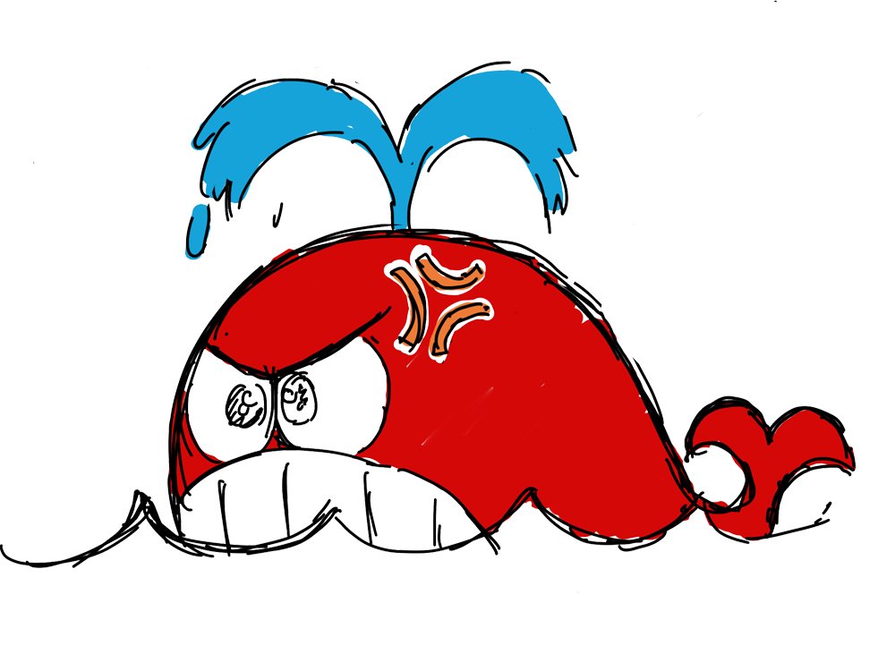

- 少年の日のこと
- あなたの中の宝石箱
- もしも友と呼べるなら
- なぜ彷徨うのか
- 君の走る影のあと
- いのりを、いま君のもとへ
- あとがき
少年の日のこと
一 筑肥線
タイムマシンがあったら、未来へ行きたいか、過去へ行きたいか。 そう問えば多くのひとが「未来へ」と答えるだろう。 だけど未来へ出てしまえば、本人は過去のひとだ。その一方で、もとの世界は未来へと歩み続ける。故郷を捨てたものは、生涯ずっとその過去を背負う。本人は「過去」を捨てたつもりでも、本当に捨ててしまったのは「未来」ではなかったか。 五年ぶりの故郷へと向かう途中、名村英敏は博多バスターミナルのビルを見上げた。昭和のままの路面電車が走ると嘯いた博多の街は、練馬より少しだけ賑やかに見えた。 定刻通り十一時すぎにターミナルに着いたバスを降りて、町に不似合いな古びた靴で地下鉄の階段を探した。せめて地元には不便なままでいてほしかったのに、改札では Suica がそのまま使えた。郷愁はどこへ消えたかと改札の便利さに毒づいてみせて、午前十一時半、地下鉄に乗った。 列車が地下を抜け、筑肥線へと乗り入れるころになると、新しいビルに隠れて懐かしい街並みが姿を見せた。実家に帰るたびに切り取られてきた景色がまだかすかに面影を残している。色褪せた記憶を車窓に並べていると、やがて海が現れた。空と海、水平線で分けた二色の青は、旅の思い出の一枚になった。 唐津を離れて三十年になる。刷新された車両の向かいの席では、学生服のふたりぐみがスマホを覗きあっている。少年たちは目の前に座る男が、数々の有名アニメの原画・作画監督を務めた男だとは知らない。懐かしい地元の言葉にも、居心地の悪さを感じた。都会に馴染んだわけでもないのに、田舎にはもう居場所がない。他人の生活圏の隅でＳＮＳの文字を拾っていると、弟からのメッセージが画面に閃いた。 「いまどこ？」 滅多に使わぬ文字入力に戸惑っていると電話が鳴る。メッセと同じ言葉を繰り返す声に、被せて答えた。 「ちょうど二 舷梯
それからすぐに葬式の段取りになった。特に覚悟もなく家を出た名村英敏には喪服の準備もなかったし、借りるにしても先立つものがなかった。「喪服はどげんすっと」と母に聞かれて戸惑っていると、「うちにお父さんのがあるから」と、故人の喪服を着せられることが決まった。名村英敏はあまり験を担いだり霊的なものにこだわったりはしない質だったが、いま亡くなったばかりの父の喪服を着ることには抵抗を感じた。しかし拒絶するとしたら、自分で喪服を買う、自分で喪服を借りる、などの行動が必要になる。上策ではない。しかも必要なのは行動力ではない。金だ。それがない以上は覚悟を決めるしかない。いや覚悟すら必要なく、金がないのだからそうなる。
父の喪服で父の葬式に出る――
霊的な云々を抜きにしても奇妙ではないかと、名村英敏は感じた。
葬式は弟が手配し、祖母の葬式がそうであったように、通夜も告別式も実家で執り行うことになった。弟のレクサス、その妻のプリウスの二台、山の手にある実家へと走った。バイパスへ出てサンバイザーを下ろすと車内には安堵の雰囲気があった。振り返れば、昼過ぎに乗ったプリウスには異形の緊張が満ちていた。いまごろその名村恵子も子どもふたりを乗せて、静かなエアコンの風のなかでこれからのことを話しているだろう。ウインカーを上げてゆっくりとハンドルを回しながら、
「お母さん、喪主なんだけど――」と、弟が尋ねると、その問も言い終えぬうちに、
「跡取りやけん、英敏に任すたい」と、母は答えた。
「いやちょっと待って」
名村英敏は笑いながら返した。冗談で言ったのではないだろうが、冗談だということにしたい。
「なんでおれが」
喪主は母が務めるものだとばかり考えていた。何年か前に受けた仕事で葬式の場面があったが、そのなかでも喪主は配偶者だった。故人の妻がスピーチの途中で泣き崩れるカットを描いた。問い返しても母は考えを変えなかった。家督を継ぐものが喪主になるのは当然の慣わしだと、弟もそれに同意したが、名村英敏に家督を継ぐつもりはない。そもそも家督が何を意味しているのか。「いや、家督って言うけど」と、口にしてみると、これほど日常会話で聞かない単語もない。それにそもそもというなら、それが本当に慣わしかどうかもわからなかった。
「法的には兄ちゃんが家を継ぐことになるから」
そう聞いて、なるほどとは思ったが、さすがにそれは申し訳なかった。家のことなど放り出して東京に出た。いまのいまにしても親戚に葬式の連絡をしているのは弟夫婦で、自分はなにをして良いかもわからず手をこまねいている。そんな自分が継ぐ家督とは？ が、そうは思っても、胸のなかをかすめるのは「家を継いで売り払えば、生活が楽になる」だ。もちろん、母が住む家をいますぐ売り払えるわけがない。とは言えその母もすぐ八十になる。厭な考えばかりが溢れてくる。跡取りだからという理由で喪主を引き受けるとしたら、やがてそれらは現実の選択肢になる。
弟は地元の流通企業に勤めて長い。いまでは部長の地位にあり、全商品の仕入れを統括している。結婚後は家も建てた。不況の煽りがあるとは言え、ここまでに築いた人脈も大きく、資産もあり、信用もある。生活にも健康にもなんの不安もない。両親にとっての不安は長男の名村英敏だった。地元に残っていれば就職も斡旋できただろうし、家も継がせられた。縁談を持ちかけるものも少なくなかったが、東京へ出たまま帰って来ないのでと断っていた。今更就職でも縁談でもないだろうが、「まっとうな人間」になって欲しいという母の思いがなくなったわけではない。もちろんそれは父の悲願でもあった。
東京を好きになれない理由のひとつが日没の早さだった。こちらでは七時を過ぎたいまもまだ日があり、五年ぶりの実家では犬が吠えてきた。母は、食べるものはすぐに用意できると言ったが、弟はピザを頼んだ。それとビールを四ケース、顔見知りの酒屋に注文を出した。送られてきた写真でしか見たことがない「もみじ」と名付けられた柴犬は、名村英敏が近づくと声を落とし、最後は母の影に隠れた。
実家ももう年老いた。そこに貼り付いた景色は古い映画の一場面だった。テレビも冷蔵庫も静かな寝息を立てて立ち止まり、蝉の声が遠くに響いていた。年金で暮らしているはずだ。株もあったが、少しずつ取り崩していると聞いた。このさき車を買い換えることも、遠くへ旅することもない。不自由することはもうないのだろう。仏間には祖母と祖父、叔母、あとは幼くして死んだ叔父にあたるひとの遺影があった。
母が箪笥から出してきた礼服は樟脳の匂いと白い紙に包まれ、袖を通すと入らないではなかったが小さく、不格好だった。ウエストがぎりぎり入ったので、これで通夜と告別式を乗り切れなくもない。母は裾を下ろす気で縫い物の用意を始めていたが、その格好を見て手を止めた。
「やっぱり無理があるかしら」と母が言うと、「下取りの服があったら、何千円引きになるらしいし、買ってくるといいよ」と、弟が加えた。
「いいよ。裾だけ下ろして」
弟には兄に金がないことはわかっていたが、直接それを言うと兄が気を悪くすることもわかっていた。
「借りて来ようか。田中さんだったら体格変わらんち思うし」
名村英敏にとって、田中や井上はありふれて覚えても仕方のない名前だった。
「いいよ、これで。田中さんだって御焼香に来るんでしょう？ 貸せないよ」
このときも名村英敏は、どの田中さんのことかよくわかっていなかった。
「あのひとやったら二、三着持っとーて。四人兄弟だよ、あそこ」
世話を焼かれるのは好きじゃなかった。だけど「しょうがないな、買ってくるよ」と言えば空気を悪くする気がした。父の礼服の裾をひっぱって、「これが家督を継ぐってことだろう？」と言うと、呆れ声で「違うよ」と返ってきて、名村恵子が吹き出した。
名村英敏が小学四年生のころより祖母、名村シヅは入院しており、お盆と正月に家に帰るほかは自転車で十分の総合病院で過ごしていた。小遣いが足りなくなったときに病室を訪ねると、決まって千円もらえ、中学生になった名村英敏少年はそれでアニメ雑誌を買っていた。
祖父は早くに他界し、祖母も病院暮らしであったため、それなりの大きな屋敷に家族四人と犬とで暮らした。盆正月には親戚が集まり、その宴会を開く十分な広さの客間と、車何台かを停める敷地とがあった。父には兄弟姉妹が多く長男でもあり、その子名村英敏も小学生から中学生にかけて慶弔の行事をよく目にしてきた。思えば、ひとの葬式に出た経験の大半は二十歳までに集中している。
名村シヅが入院していたのは、長期入院患者ばかりの病院の六人の大部屋で、たまに訪ねると同室の仲間同士楽しそうに笑いあっていた。名村英敏が五年生のころ、大阪で暮らしていた叔母の名村良子が胃癌になり、叔母もまた同じ病院に入院し、それからは年老いた母と娘とで二人部屋で過ごした。叔母の名村良子は名村英敏が小学六年のとき、名村シヅはその後大部屋に戻り高校の一年のときに他界した。
一般的には二十歳を超えてからは、弔事よりも慶事が増えるのだろうが、仲間のうちに結婚式をちゃんと挙げるものは少なかった。同棲し、いつの間にか入籍するものがたまにいて、それも知らぬ間に別れるものだから、久しぶりに会う友人との会話にはひどく気を使った。スタジオの事務方のスタッフ、先輩や管理職の知り合いなどにたまに慶事があっても、招かれることは稀だった。弔事も同様、名村英敏にはその噂が伝わるだけで、わざわざ葬式へと出向くことはなかった。冠婚葬祭はむしろ作品のなかのものだった。学生時代に経験した大家族の宴会を思い浮かべながらレイアウトを起こし、表情を決めていったが、翌日のビール臭くなったトイレで肩を落とすこともない祝宴はそらぞらしいファンタジーだった。
スタジオにいたころ、大物の漫画原作者が他界し、大きな寺で告別式が催されたことがあったが、その際も遠くで故人を想うだけで終わった。原作した漫画は数多くのアニメにもなった国民的な作家で、ニュースにもなった。名村英敏も幼いころより憧れ、伝手を介せば会場へ入るくらいはできたが、かつてそのひとの原作で漫画を描いた同じスタジオの先輩が「行かない」と首を振ったのを見て、いろいろと考えた。
「本当に行かなくていいんですか？」
「行かないよ、あんな奴の葬式なんか。死んでせいせいしたよ」
まだアニメーター二年目のことだ。あの大作家がコンビを組んだ漫画家からそんなふうに思われてたことも、葬式に行かないという選択肢があることもそのときに知った。
大学時代の盟友三 死体洗い
名村英敏は地元の高校を出ると博多の先にある大学へ通うようになった。即、漫画研究会に入り、雨の日はゴエモンを蹴飛ばし、そこで出会ったのが後の盟友、橘悠一だった。向こうからしたら名村英敏は凡庸な漫画好きにしか見えなかっただろう。周りに比べると目立った絵も描けなかったが、上京してアニメーターを長く続けるうちに親交は厚くなっていった。 その知り合ってすぐのころ、橘悠一が見せた投稿用の漫画に名村英敏は衝撃を受けた。タイトルは《あるびゃーと》。橘悠一のアルバイト体験をベースにした漫画で、自分でも幾度か漫画を描こうとしたことがある名村英敏は「線の密度」に驚いた。漫研はあくまでも漫画研究会で、漫画やアニメの専門コースではない。ごく一部がプロを目指すほかは、ただの漫画好きの集まりだ。名村英敏もしかり。そのなかで見た橘悠一の漫画はプロのクオリティだった。「線が多い」ばかりではない。集中線にかぶさる前景の鉄塔がホワイトで丁寧に抜かれ、すべてのコマに背景が描かれている。画力も構成も凄まじく、名村英敏にも、また本人にも絶対に賞を獲るという確信を持たせた。「マガジンに投稿するかサンデーにするかで迷っている」と、橘悠一はだれかれともなく話していたが、その反応でひとを四 赤いクジラ
名村英敏は寿司をつまみながら、名村シヅの通夜の際には精進料理が出たことを思い出していた。弟が手配した料理は魚ばかりか鯨も並んでいる。母が盛り付けているところを見たのだから今更驚くことでもないのだが、弟に聞くと「いまは葬式やけんちいうて精進料理ばっか食うっちゃ限らんけん」と、酢みそのかかった湯かけを口に運んだ。ここ最近の通夜・告別式では、故人が好きだったもの、ゆかりのあるものを振る舞うケースが増えていると言う。テーブルの上にはなまこ酢、からすみ、酒蒸しと並ぶ。もちろん、ビールも。 「だったらなんでビール」 名村英敏は下戸だった父を思い、弟に質した。 「飲むとは客やけん。本人にはコーヒー買うたろ？」 テーブルの中央付近に昼過ぎに弟とふたりで買いに行ったジョージアの缶コーヒーが並んでいた。辛党ばかりの客のなかに缶コーヒーに手を伸ばす者はいない。このコーヒーを毎日のように買いに行った思い出も家族だけのものだった。弔問客はビールを酌み交わし、故人を偲びながら、かつて捕鯨で賑わっていたころを思った。 酒の入った客は、「なして豆に言われにゃいかんとか」とグリーンピースを腐し、「人間のほうがイルカに殺さるる」とイルカ漁を告発したドキュメンタリー映画を批判した。若いころより無数の鯨を缶詰にしてきた父も棺から身を乗り出して頷いているが、酒と鯨の食い合わせは悪い。「鰻も食うちゃいかんち言うとお」と、人生で三回くらいしか会ったことのない親戚が酒くさい息を吐く。幼少のころ親戚というのは、お年玉をくれて酒を飲んで帰るひとだったが、お年玉をくれなくなった親戚はただ酒を飲むひとだ。ひょっこりと冠婚葬祭に現れる姿は、人間よりも妖怪に近い――と、思いながらもふと―― 「クジラち、赤かち思うとった」 とこぼすと、「赤でおうとるたい。哺乳類やけん」と返された。 「いや、体。黒いクジラ見てがっかりした」 名村英敏は答えるが、妖怪たちはうまく飲み込めていなかった。 森永おっとっとのキャラクターが赤いクジラではあるが、そのおっとっとが発売されるはるか昔、まだ小学校の一年のころに名村英敏は赤いクジラの絵を描いた。もしかしたら幼いころに、赤いクジラのキャラクターを目にしたか、あるいは唐津くんちの曳山の印象があったのかもしれない。「そりゃクジラじゃのうて、タコかカニやろ」と笑った親戚もいたが、名村英敏が曳山を語り始めると聞き入った。一番曳山「赤獅子」、五番「鯛」、七番「飛龍」、十三番「鯱」、名村英敏が好きな曳山はすべて赤かった。 「おれのなかじゃ、十五番曳山は『クジラ』やけん」 唐津くんちの曳山は十四番まで。名村英敏はそれに続く曳山を妖怪たちの脳裏に想起させた。 「ちょっと描いてみらんね。おいが掛け合うてみるけん」 そう言った親戚――親戚なのか父の知人なのかもわからないそのひとが何者でだれに掛け合うつもりか知らないが、名村英敏は「ああ、それじゃあ」と頷いてみせた。部屋からマーカーを取って戻ると、ちょうど酒の入った弟が、「アニメとのタイアップで曳山ば増やす話ば昔聞いたこつんある」と話すのが耳に入った。甥っ子が色めき立つ。目を輝かせて「《ガンダム》!?」と声をあげ、弟は焦って、「ここだけの話やけん。外じゃ言うちゃいかんぞ」と繕った。日本各地に《ガンダム》立像が建立され、ゲームのキャラがマンホールの蓋になる時代、《ガンダム》曳山が登場するのもあり得ない話じゃない。曳山の四番、九番、十番はそれぞれ、義経、信玄、謙信の兜だ。《ガンダム》頭部があっても違和感はない。初代、ゼータ、ダブルゼータ。壮観ではないか。 「いや、おかしかばい。そげんなんでっちゃかんでっちゃアニメにすっこたなかろうが」叔母が割って入ると、「なんば言いよると。英敏くんに失礼やろうが」と、赤ら顔の叔父が話を引き戻した。 故人を偲ぶ話は、湯かけの鯨から、捕鯨、鰻を経て、《ガンダム》、名村英敏の話に推移していた。いつのまにか故人に代わって、名村英敏が地元のひとの輪の中心にあった。 名村英敏はスケッチブックを人の目から隠しながら、赤いペンで色を塗った。そして、「できた」と、周囲の顔を見渡して、もったいつけて公開したクジラを見て、甥っ子姪っ子は大笑いした。
小学一年生のころ、図画の時間にこの絵を描いた。
「名村くんの絵です」
担任の教諭が掲げると、生徒たちの目が集まり、
「でも、クジラの色は赤かな？」
の問いにはすぐに「くろー！」「くろとしろー！」と声が上がった。
名村英敏は笑顔をたたえたまま戸惑った。クジラが黒いことも先生の仕打にも納得がいかなかった。
その後名村英敏はすぐに人気者になり、クジラの絵を描いてとせがまれるようになったが、頑なに赤いクジラしか描かなかった。黒いクジラなど考えられなかった。一週間もすると真似をして描くものが現れたが、色は黒かった。可愛げも何もない。しかも名村英敏が口だと思っていた部分は腹なのだと教えるものが現れた。口は名村英敏が口だと思ったものと頭の境目にあると、むかしお父さんが捕鯨船に乗っていたという子が証言した。目の位置もここじゃない、このあたりだ、と口の隅っこを指した。名村英敏の父も水産加工会社にいたし、思い起こせば缶詰に描かれたクジラは黒かったが、それは「食べるためのクジラ」だと思っていた。だが名村英敏のクジラはそうじゃない。黒いクジラを描きたいわけじゃなかった。
名村英敏は好きなものを描きたかったし、むしろ好きなものは描かずにはいられないかった。何を描くかはすべて手が勝手に決めた。小学三年のときに犬を飼ったときもひたすら犬を描き続けた。好きなアニメの絵もひたすら描いた。自分で描く前の世界は不完全で、描くことでそれは完成された。欠如した何かを埋め合わせるように絵を描き、幼いころそれは曳山の「鯛」であり、やがてそれは《マジンガーＺ》に変わった。
「《ガンダム》は描ける？」
甥っ子が無邪気に聞いてくる。
「描けるけど、《ガンダム》は五千円」
ええーっ？ じゃあ《プリキュア》は？ 《ドラえもんは》？ と聞かれ、すべて五千円と答えると「お父さん五千円ちょうだい！」と、矛先は従兄弟へと向いた。
「じゃあ五千円で《セーラームーン》ば描いてち頼んだら、どげんか絵ば描いてくれると？」
と、従姉妹が聞き返してきた。
佐賀には民放が一局しかないが、福岡の放送をほぼ見ることができた。福岡の民放四局に加えてサガテレビが映ったので、実は福岡よりも幅広くアニメが放送されていた。大学に入り、福岡、北九州、筑後の友人が「《ストップ!! ひばりくん！》が見れない」と嘆くなか、普段から民放一局の田舎者と揶揄される鳥栖や唐津の佐賀勢は違った。「それが葉隠の精神か！」と、橘悠一が言ったが、あながち間違いでもない気はした。そしてなぜかいつも福岡ヅラする裏切り者の鳥栖までも、テレビの話では佐賀にすり寄り得意顔をするのが少々許しがたかった。逆に、鳥栖と筑後川をはさんですぐそばにある久留米が「《ひばりくん》が見れん」と言ってるのもわからなかった。サガテレビはいったいどうやって電波を鳥栖までで止めているのか。漫研で話題にすると、筑後川に電磁的シールドがあるだの、久留米で売られているテレビはカッパが作ってるだの、佐賀・武雄・伊万里の電波がちょうど久留米市上空で打ち消しあってシュヴァルツシルト面を出現させるだのという意見が上がった。こういうことを言い出すのは決まって橘悠一で、「シュヴァルツシルト面！ 発生！ ぷしゅわーっ」などと言ってとなりの男に攻撃をかけ、攻撃された男は「ぬおおおおーっ！」とか言って苦しんでたりしたが、これもまた漫研ではありふれた景色だった。
漫研での会話は概ねそんな調子で、同じように「絵を描くとなぜ人気者になれるか」を考察したことがあった。漫研メンバーの半分は漫画を描き、名村英敏と同じようにちやほやされた経験があった。
そのなかで、「たとえば」と、盟友橘悠一が切り出した。
「《ガンダム》の絵を描くだけなら、雑誌の切り抜きのほうが上手いのに、なんで描いてとせがまれるのか」
《ガンダム》を頼まれて、雑誌の切り抜きを渡しても相手は納得しないだろう。下手でも描いてやったほうが喜ぶ。その瞬間においては、クラスでちょっと絵が描けるやつが最前線のトップアニメーターを凌ぐのだ。
そしてまた「たとえば」と、名村英敏が被せた。
「クラスメイトに描いてもらった《ガンダム》と、隣の校区のだれかわからん奴が描いた《ガンダム》って、価値は違うんかい？」
当然だ、そりゃあ違うだろうと意見が揃った。たしかにクラスメイトが描いた《ガンダム》には、上手下手では説明しきれない価値がある。では第三者から見てどうかとなると、どちらの《ガンダム》も違いはない。己にとっての正義は相手にとっての云々という話と同じく、自分にとって価値のある《ガンダム》も、よその校区の生徒にとっては無価値な落書きになる。逆もまた然り。おそらく、目の前に同じ《ガンダム》好きの人間がいることに意義があり、だからこそ同人誌が売れるのだろう。
また、同人誌の話になると「逆に」と、盟友橘悠一が話題を切り返した。
「知らない人が描いた《ガンダム》を集めて同人誌にするの面白いかもしれんね」
知らない人が描いた《ガンダム》――
橘悠一は、たとえば有田焼きの絵付師七十九歳が孫にせがまれて描いた《ガンダム》、たとえば岩田屋おもちゃ売り場に務める店員二十六歳がポップ用に描いた《ガンダム》、たとえば名村英敏十八歳がアニメーター採用に応募すべく描いた《ガンダム》、と例を挙げ、「笑えると思わん？」と聞いてきた。たしかに面白いかもしれないが、キャプションがなければただの下手な《ガンダム》のオンパレードでしかない。それを面白がれるのはごく一部だ。しかしまた、考えてみればすなわちそのキャプションこそが、「クラスメイトから描いてもらった《ガンダム》の価値」に当たるとも言える。たとえばただの下手くそな落書きでも――将来は漫画家を目指していた井上くんが小学校の卒業文集に描いた《ガンダム》――とキャプションが付いた時点で新しい物語が生まれる。クラスでもずっと将来の夢を語っていただろう井上くんが「漫画家を目指していた」と過去形で語られる切なさ。あるいは、井上くんの画力とのギャップ。その卒業文集を書いたクラスメイトはみな就職し、もう子どもがいるというのに、まったく井上さんちの息子と来たらという底知れぬ背景が、落書きを物語に変える。
盟友橘悠一は、「そこから《ガンダム》という記号を通分して消したとき、そこに残るものってなんだろうね」と、問いかけた。
小学校も三年、四年になると、《ゼロテスター》、《ゲッターロボ》、《コン・バトラーＶ》、などをリクエストされて描くようになった。クラスメイトはリクエストするばかりではなく、自分でも描いて名村英敏に見せた。《コン・バトラーＶ》の複雑なパーツはみんな名村英敏の絵を見て真似するようになり、名村英敏が描いたアングルと同じ《コン・バトラーＶ》が、まるで共通の言葉を覚えるようにクラスに広まっていった。
四年生になると漫画を描くようになって、描くことに新たな目的が生まれた。どんなに人気ものになっても落書きは落書きで、だれかに見せたり褒められたりするのはオマケでしかなかったものが、漫画は見せること、反応を得ることが目的になった。ただ笑っている絵を描くのではなく、どうして笑っているかを描くようになった。友達と共有するものも「笑ってる」ではなく、「どうして」に変わった。そしてそれこそが後に橘悠一らと話した「《ガンダム》という記号を通分して残るもの」だった。そこではもう《ゼロテスター》も《コン・バトラーＶ》も通分され、意味を持たなかった。
小学校の五年から六年へ、クラス替えなく担任もそのままで持ち上がり、その年の家庭訪問で担任から落書きが多いことをやんわりと指摘された。そしてそれは母親から父親の耳に入り、父親から「授業中に落書きはするな」という言葉になって降ろされた。
ただそうは言われても、ひとの話をろくに聞かないのが名村英敏だった。この歳になると親もそれは見通していて、せめて授業のノートとは分けろと、以来、落書き用のノートを授業のノートとは別に用意するようになった。落書き用のノートは小遣いから買い、授業で使う父親が買ったノートには一切の落書きが許されなかった。結局その後も、授業中にも落書き用のノートに落書きを続けたが、ただひとつ変わったのは、父親にだけは落書きを見せなくなったことだった。
幼いころはクジラの肉の食感が嫌いだった。克服できないままに市場からクジラは姿を消し、いつのころからか特別な機会にだけお目にかかる特別な食材になっていた。
甥っ子姪っ子、正確にはいとこの子、五 リン・ミンメイとプレスリー
明けて、葬儀、告別式、火葬と終え、名村英敏と弟は実家の縁側で缶コーヒーを飲み、名村恵子と従姉妹とは厨房の片付けをした。喪主として通夜から関わってきた名村英敏にも洗い物の量は見当ついてはいたが、自分がそこに加わることはなかった。缶コーヒーを飲み終えて、それを厨房のゴミ箱に入れる際に「なにか手伝うことはある？」と聞くと、「よかよ、お客さんやけん、座っとって」と従姉妹に返された。喪主がお客さんのわけがない。それが総意でもないだろうが、それでもそこに割って入るほどの社交性は持ち合わせなかった。その従姉妹の夫にしてもこの場にはいない。それを差し置いて本家の長男に家事をさせることに引け目を感じたのかもしれない。田舎の社会は、どこかにひびが入るとどんな割れ方をするかわからない。名村英敏は一週間後には東京へ帰る。居間へ戻ると弟がテレビをつけた。夕方のニュース、バラエティ、再放送のドラマとチャンネルを変えて、「なにか見たいものがあれば」とリモコンをよこした。しかしもう地元のテレビ番組など覚えていない。《サマーウォーズ》というアニメーションの一場面を思い出しながら、「野球は？」とリモコンを受けると、「まだ早かろたい」と呆れられた。 「それじゃ、ＣＭ」 名村英敏が言うと、弟はまた苦味のある笑みを頬に貼り付けた。 「また、地方ＣＭはおもしろかち言うてバカにすっとやろ」 《サマーウォーズ》では、女ばかりが家事に追われ男が居間でテレビを見る旧態然とした法事の描写が批判を浴びたが、いまの名村英敏はその主人公だった。 文学というのは大きく写実主義か浪漫主義かに分かれる。文学がそうであれば物語によって成り立つアニメもそうだろう。ただ、アニメは圧倒的に浪漫主義が多いように思う。《アンパンマン》や《プリキュア》が報われずに死んでいくようなことはそうそうない。《デビルマン》は写実主義だったように言われるが、それも名村英敏に言わせれば裏返した浪漫主義だ。ヒロインが大衆に惨殺される場面などは特にそう感じた。英雄の活躍と、敵の暴虐は同じものだ。写実主義の《デビルマン》があれば、主人公は《デビルマン》に変身もできないし、ヒロインの美樹とはろくに口も聞けずに悶々としたまま過ごしただろう。自分は悪魔だ、人間に守るべき価値はないと嘯きながら、何もできずに美樹にだけは承認を求める化け物が、真に写実主義の《デビルマン》だ。 他方、《君の名は。》で一躍名を馳せた新海誠は、初期は写実主義だったように思われる。《言の葉の庭》、《秒速５センチメートル》と、カタルシスの得られないリアルな作品で認められ、この夏に公開された《君の名は。》ではついにハッピーエンドを描いた。名村英敏も試写で見て、「新海誠も大人になったね」と知り合いに語った。 また、《時をかける少女》や《サマーウォーズ》を監督した細田守はよく新海誠と並び称されるが、細田守は一貫して浪漫主義だったと思われる。あるいは、ドラマに対して浪漫か写実かというスタンスを持っていなかった。件の《サマーウォーズ》における脚本家奥寺六 知らない人が描いたガンダム
母は名村英敏に遺産を継いで欲しいと言って譲らなかった。 自分は老い先短いのだから、そのたびに相続税がかかったのではたまらないと細い声で漏らしたが、父親が残した遺産は相続税控除の範囲内だった。東京でこれだけの屋敷があれば億は超えるだろうが、唐津だ。それに名村英敏が相続するとしても名義だけ。住むわけでもなく、ただ固定資産税のぶんだけ支出が増える。弟は「デジタル化したら唐津でも仕事は出来るっちゃなかと？」と聞いたが、名村英敏はデジタル化でこぼれた案件の駆け込み寺だった。安定した仕事は大手がグロスで受ける。そこからさらに下請けに配るものはあるが、名村英敏は昔ながらの知り合いが唯一の窓口で、夜にアパートのドアを叩けば翌朝にも上がるようなあり得ない仕事ぶりが命脈だった。アニメや漫画でおなじみの謎の旧テクノロジー老人が名村英敏なのだ。 ちゃぶ台の麦茶に雫が流れて、ミンミンゼミが鳴いた。母が思い詰めるので、時折話題を変えながら話を進めた。言葉が途切れたときに切る手札も残り少ない。 「東京でも稀にクマゼミが鳴くけど、夕方に一匹だけとかわけわからん鳴き方する」 という名村英敏の言葉を、弟は重い空気を払うために話題を替えようとしていると受け取ったが、母親は英敏はそういう子だと思い、流した。 あれこれと話した結果、固定資産税は母が年金から、あるいは貯金を取り崩しながら払うことになった。弟が払っても良いと申し出たが、それも忍びないと断り、そういうことならと実家の名義は母のものになった。それでも母が、「詐欺がきたら断りきらんかもしれん」と言うので、表札には名村英敏の名前も出すことになった。それで詐欺が撃退できるかどうかはわからないが、母を納得させることはできた。 母の口からは、「それじゃ未亡人のごたる」という言葉が聞かれた。語義的には未亡人で間違いはなかったが、母の言う「未亡人」はそれとは違っているようだった。 諸々の手続きを終え、東京へ帰る前に行くところがあった。 名村英敏は盟友橘悠一の遺稿を鞄に忍ばせてきていた。橘悠一が他界してもう十四年になるが、家族の手に返したかった。 以前に届いた年賀状の住所は福岡市中央区大濠。まだそこに住んでいるかどうかはわからない。縁のあった福岡のスタジオに知り合いがいたので、そこでたずねようかと思ったが、去年閉鎖されていた。その知り合いの所属先を調べると、いまは世田谷のスタジオになっている。職歴はネットのアニメスタッフのデータベースで追えるが、肝心の本人にはツイッターもフェイスブックもない。スタジオ社長のツイッターアカウントはあるが、知りたいのは橘悠一の家族の住所だ。あなたの中の宝石箱
一 国分寺時代
一週間東京を離れていた間に、いままで受けていた仕事はレールが切り替わるように離れ、名村英敏の机の上は寂しくなった。もとより社交性のない性格で、仕事はただ待っているだけのスタイルだったが、このところはそれで勝手に仕事が降ってくることもなくなっていた。さり気なく手隙きであることをアピールしても流され、もしかしたらもう制作進行が持つアニメーターリストから名前が外れたのかもしれない。不安は雨漏りのように心を濡らす。駆け出しのころにたまたま見たリストには、「アクション苦手」とメモされていた。そのときに気付いた雨漏りが、修理もされずにずっと続いていた。 旧知の制作進行とファミレスで飯を食うと、どこそこのスタジオに公的な補助が降りただの、どこそこは引き抜きで火の車だの、実のない世間話を振ってきた。すなわち、火急の案件はないと言うことだったが、次の担当話では電話をかけると空手形だけはもらった。昔は原画にばら撒いたカットは制作進行が車で駆け回って回収していたが、いまは専門のスタッフが取りにくる。これではいつの間にかリストから消えていても気が付かない。知らぬ間にひとの記憶から消えている不安が、歳を追うごとに増していった。 思えば動画マン時代は「枚数」が全てだった。あのころが良かったとは言わないが、わかりやすかった。あのひとは何枚、このひとは何枚でひとの価値が決まり、枚数に比例して仕事が来た。原画に上がると「質」が問われ、いまの自分がどのくらい描けているのか、自分ではもうわからなくなった。 ノルマに追われて動画を描いていたころは、絵を描けない制作進行が自分より高いギャラを取っていることが解せなかった。その後動画から原画、作監へと立場が変わり、様々な打ち合わせの手配、背景用の原図の取りまとめやアフレコ用の映像作成、資料の手配に奔走する姿を見てやっと、逆にこれは割に合う仕事ではないと思うようになった。決定的にそれを感じたのはコピーを取りながら立って寝ている姿を見たときだ。人間、どこの限界を突破すればこのような進化を遂げるのだろうかと、その異様な光景に見入ったものだった。 名村英敏のとある先輩は、去年の十月、出世作となったアニメの三十周年記念のトークショーで、 ――当時、七本同時に受けてると聞いたことがありますが、本当ですか？ の質問に、 ――あのころは、寝なくても死なないと思ってた（笑） と、笑顔で語ったが、それを聞いてブチ切れたのが目の前にいる制作進行、そのひとだった。 「言えよ！ 最初に！ ほかに六本受けてるって！」 まあ、ある程度認められてしまうと、言っても押し込まれるのではあろうが、ひととおりの世間話、昔話を経て、「ちょっと特殊な話があがってる」と、あの日高円寺の駅前でブチ切れていた口が穏やかに風を揺らした。 それにしても七本って。 「ねぇ」 「七本って」 名村英敏もやむにやまれず数本掛け持つことはあったが、一本目の原画の途中に二本目の作打ち――作画打ち合わせなど入ると、それだけで頭がおかしくなった。そもそもマルチタスクには向かない人間だ。しかもスケジュール通りにものごとをこなすのが苦手で、「これは30時間でアップできる仕事だ」と見積もったら、最初の15時間は何もしなかった。15時間でアップする仕事なら７時間半でもこなせるし、７時間半は３時間45分になって、そのころにようやく後悔するのが常だったが、その後悔している最中に別のアニメの打ち合わせが入る。 「それが七本って！」 「いや、ちゃんとスケジュール通り描いてくださいよ」 「それはそうだけど、七本って！」 制作進行が持ってきた「ちょっと特殊な話」が怪しく、あまり本題に移る気もしなかった。 つまり、浮いている仕事ってことだろう？ 要は二 フリーランス時代
四十九日にも帰郷するかもしれない。そのごく細い糸がカレンダーにかかり、年内はあまり仕事を詰め込まないようにしていた。金はないわけではなかった。ただ、油断していると途切れた。スタジオに所属していない人間は、常にバタバタと足を動かしていないと冷たい水底に沈んでいった。 アニメーターになるとき、ぼんやりとした覚悟はあった。地元で就職してほどほどに働けば、そこそこに暮らせるだけの金はもらえるだろうが、アニメーターは実力だけの世界だ。負ければ死ぬ。その境界を名村英敏は、「なんとかなるだろう」という気持ちで超えてしまった。ほとんどのアニメーターはそうだ。フリーになるときの覚悟も同じで、スタジオに属していれば仕事は降ってくるものを、わざわざ外に出てしまう。このときもやはり「なんとかなるだろう」程度のぼんやりとした覚悟しか持ち合わせてはいなかった。 スタジオでは――①研修を終えること、②先輩のチェックなしでも動画を出せるようになること、③月に五百枚を描くこと、の三つが動画として一人前の証とされたが、名村英敏は二年近くかけてようやくこれらをクリアした。二十歳だった名村英敏が、もうすぐ二十三にもなろうかというときだった。 名村英敏に半年遅れて入った後輩の三 青木真理子
麗しの上野深雪が名村英敏の夢に出た。 あれから四十年近くが経つが、いまだに口をきいてはくれなかった。 半年に一回ほどは上野深雪の夢を見た。何も言わない、笑いもせずに遠くに立ち、声をかけようとしても背を向けて去ってしまう。それだけの夢をずっと見続けた。 ――そこまでの罪を犯しただろうか。 そんな思いはあったが、その思いがあるからこそ夢に見るのかもかもしれない。 二十代のころは今よりもずっと思いつめていた。どうやら情報開示請求という制度があり、それを使えば学生時代の内申書を閲覧できると知り、それをすべきかどうか真剣に悩んでいた。そこに自分が上野深雪に対して何をしたと書かれていたのか、客観的に自分の行動はどう見えていたのか知りたかった。知って自由になりたかった。 それらすべてが狂言だとわかったのは、一条一――一瞬で自分を抜き去った後輩が結婚し、子どもが生まれ、その話を聞いている最中だった。一条一が話す娘の話を自分の過去に重ね合わせているうちに情景が浮かんだ。そのときは名村英敏も四十代の半ばだ。件の事案からは三十年が経っている。その狂言で自分が失ったもの、上野深雪が失ったものがあったが、取り戻せるわけもない。何も知らなければなんでもない事件だった。向こうにしてもそう。何も知らなければ、なんでもない事件だった。 どっひゃーの青木真理子とは駅前のレストラン、ポポラマーマで会った。 久しぶりに会った青木真理子はもう「どっひゃー」とは言わず、そのぶんは胸のなかで補わなければいけなかった。ドリンクバーとポテトフライを頼んで、交代でドリンクをとった。 「最近どう」 「相変わらずっすよ」 「相変わらずって、何してんの？」 青木真理子はもう還暦も近い。にもかかわらず、外見ではそう見えなかった。真っ青なモヘアのセーターの襟首に鎖骨の浮いた素肌が覗いている。少し離れれば二十代三十代にも見えたし、指もしなやかで綺麗だった。 「最近は絵コンテが多いっすね」 「原画は？ 自分が描いたほうがちゃんと描けるとは思わない？」 「ちゃんと描いたもんが受けるんだったらちゃんと描きますけど、ちゃんとは描けないんで」と、名村英敏は自虐的な笑みを見せた。 アニメの絵には流行り廃りがあった。絵が上達したらしたで流行りの絵に合わせるのは難しくなる。技巧的に可能でも、若手の描く「ほうれい線だけで加齢を示した年寄りのキャラ」を上手く捌こうとしても、おかしな絵になるだけだった。「上手さ」には時代が封じられるのだろう。 タイトルを伏せながらアウトラインだけで話していても、「見た見た、◯◯でしょう？」と青木真理子はタイトルを当てて、「無駄なパンが好きだよね」と、悪戯な目を向けた。 「あ、ちょっとまって、なに見たっすか？」 「同じパン３カットは続けないよ。昨日今日コンテの書き方覚えた新人じゃないんだから」 「たぶんそれ、おれじゃないっすよ」 仕事の依頼かと思っていたら、初手から仕事を批判された。しかも自分の担当箇所じゃない。青木真理子が見たのが何話か聞き出して、ウィキペディアで調べて、「その回はこのひと」と訂正した。 「でもさあ、そのクオリティでいいってことでしょう？ ぬるいって思わない？」 「ぬるいって。ぜんぶがぜんぶ《エヴァンゲリオン》みたいにキリキリにクオリティ上げてったら、見る方も辛いでしょ」 名村英敏は反論したが、見る方が辛いわけはなかった。キリキリにクオリティを上げた作品を見て辛いのは同業者だ。つい先日も、徹夜明けの原画マンが笑いながらカッターナイフで自分の首を切りつけるという謎事件が起きたが、それだって観客が辛いわけじゃない。 「それでどうなったの？」 「関わりたくないから、クビにしたって」 「カッターで自分の首切ったら、スタジオクビになりましたって？」 積もる話はすべてアニメの話だった。最近は大手のプロダクションのほかに、ＣＧやゲームを起源とするスタジオも目立つようになったと、青木真理子は語った。ＴＶアニメを経由せずにゲームや映画のＣＧを受けるスタジオには、根本的にノウハウが異なるところも少なくなかった。それでも、映像主体のところはまだ食い込むことができたが、これがゲーム業界となると、ノウハウもワークフローも全く異なった。名村英敏も一度は踏み込んだが水が合わず、ゲーム業界にいた二年と、もとのアニメーターの仕事が軌道に戻るまでの三年、あわせて五年ほどキャリアに空白ができた。 逆に青木真理子はゲームには踏み込まず、セルアニメ中のＣＧ部分の制作から入ったので、プラスになった。青木真理子もまだ慣れないころは、「アニメーション制作というものは」と旧来のノウハウを伝授しようとしたが、とある作品で見せられたプレビズ――本番前に仮で組んだ映像、プレ・ビジュアライズ――で考えが変わった。その映像では手持ち風のカメラが前景を舐めたあとにシームレスに主人公のアップを捉え、ワンアクションを挟んだ後に引いてフルショットのポーズを決めていた。実際にそのコンテを青木真理子も見せてもらったが、ただ棒人間とカメラ位置とが記されただけのものだった。ここから上がったものを見た以上、「これじゃあダメだよ」とは言えなかった。そこからだれの、どんなディレクションで映像が完成するのか、そのワークフローを知らない限り自分は何も出来ないことを覚悟した。 飽くまでも一般論だが、たとえば「商店街で警察から泥棒が逃げる場面」をアニメでは横のパンで描き、ＣＧでは奥への移動で描く。アニメなら横のパンにすれば泥棒の１ループの作画とループ背景で済むし、ＣＧなら奥に走らせれば画角外の街の様子を作り込まずに済む。これは商店街に限らず、宇宙船内の移動も、城の舞踏会も、運動会の騎馬戦も、すべてにおいてそうだ。演出や絵コンテは、いかに効率を上げ、いかに制作を回すか、が問われる。このためアニメに慣れたひとがＣＧの絵コンテを描いても、それだけではうまく回らないケースが少なくない。だれがどう動き、どう連携しているのか。これを考えて調整するのが演出家のミッションとなる。 「ブレンダーは使える？」 青木真理子の話が本題に迫る。ブレンダー――すなわち３Ｄモデルツールの話が出てきたということは３ＤＣＧの話だ。 「モデリングですか？」 「モデリングに限らず。リグとアニメーションとライティングとカメラ、基本的なところぜんぶ」 「無理っしょ」 「自分でやるんじゃないよ？ ディレクションできたら、あとは下っ端に任せられるから」 「ちょっと待って」 なにやら大変な仕事をもちかけられつつあることはわかったが、やったことがない。ブレンダー、あるいはＭＡＹＡといったツールが存在することを知っているくらいで、デジタルは苦手だった。モデリング――三次元の座標を打ち込んで、ボーン――骨組みを入れてアニメーションをつけたらＣＧアニメーションが作れる――と聞いて、なけなしの金でパソコンと３Ｄツールを買って試したことがあったが―― 「手で描いたほうがぜってぇ速ぇと思った」 と、凡百な老人の感想を持った。 「私もそう。でもじゃあ、ライティングとか髪の毛のふわっとした動きとか、ぜんぶ描くのかよって言われたら描けないじゃん。二原（第二原画、第一原画を元に詳細な動きを作るひと）がいるったって、くるくるの巻き毛をＣＧみたいになびかせろとか言ったら暴力だよ」 セルのアニメでライティングに凝るとなると、影の段数を増やして、あとは色指定のひとに頼るしかない。名村英敏が「手で描いたほうが速い」と言っても、高度な演出をつけようとしたらそのしわ寄せはほかのだれかに行く。 「真っ暗闇の廃墟でスマホの灯りだけで魔物を探すとか言われても、ぜったいにリアルには描けないじゃん。「スマホの灯りを通路の左右に向ける主人公」とかシナリオに書いてあったら、うわーって思うじゃん。でもそういうのって、わたしらが単に老人だって話でしかないのよ」 いまではセルワークだけではなく、撮影時にＰＣツールで処理される効果も増えた。たとえば《鬼滅の刃》などは、アフター処理でかなり高度なエフェクトを入れている。あの技術を持ってすれば「スマホの灯りを通路の左右に向ける主人公」もあるいは造作無いかもしれない。しかしこれがまた曲者で、セル時代の透過光のように広く一般化したノウハウでもなく、個人の技量にかかることが多い。演出と打ち合わせて、こまかく試行錯誤しながらとなると、やはりそのぶんのコストは乗ってくる。できる、ただしコスト次第、というのはどこの業界でも必ず聞かれる言葉だった。 青木真理子は「考え方を変えなきゃいけない」と言った。 止まったキャラクターの口元だけがパクパク動くのはセルアニメのノウハウだった。それも自分たちで「セルを別に分けて、口だけパクパクすればいい！」と発明したわけでもなく、業界に足を突っ込んだときにはそれが普通で、いまなおセルアニメはそうやって作られている。 「じゃあ、それはどうして？ っていうと、製作の都合じゃん？ そんなん製作がじゃんじゃん宣伝してグッズ売って、金稼いで、『よっしゃ、全部動かすでぇ！ 金なら払うたる！』って言ったら、わたしらそれで描くんだよ。なんでその製作都合のノウハウをこっちが後生大事に守ってんの、って話でしょ」 むかしならこの言葉の途中に三回はどっひゃーを挟んでいた。それを思い返すと笑みがこぼれた。その笑みに釣られて青木真理子も笑うが、話の勢いが落ちることもない。その笑顔から出るのは―― 「絵コンテ描いて、はいここは縦パン、ここは横パン――」両手で作った枠を、上下、左右に動かしながら、「――って動きつけてってさあ、若いアニメーターがこれからじゃんじゃん入ってくるのに、アニメはそうやって動かします、って、ココロ殺さないと言えないよね」 という、いまの名村英敏の全否定だった。 「そういう青木さんは、いまなにしてんですか？」 と、今更ながら、勢いに飲まれて忘れていたことを聞いた。 「相変わらずかな」 ドリンクを口に運んだときのわずかな隙を突かれ、急いで飲み下した。 「その相変わらずがなんなのかわかんないっす」 「先生やってる」 「専門学校とかの？」 「それもあるけど、新しいスタジオとかできたときに、立ち上げのメンバーと話して、どこにどういう人材が足りてないとか、こういう仕事を受けるんだったら、このワークフローにしたほうがいいみたいなアドバイス役」 名村英敏の脳裏には「山師」という言葉が浮かんだ。 「そんな仕事あるんだ」 「あとは、それに見合った人材をヘッドハントしてきて、コイツです！ って差し出す」 また少し笑みがこぼれた。山師だ。 「僕はどこに差し出されるんですか？」 「まだわかんない」 ヘッドハントと聞いて少し期待を寄せた名村英敏だったが、また叩き落された。 「福岡にＣＧ専門のアニメーションスタジオを作る動きがあるの。内緒だけど。業界の巨人が音頭取ってるやつで――」 「宮崎駿？」 「その弟子みたいなひと」 「はあ？」 「そこがブレンダー中心になる。オペレーターは専門学校上がりで使えるんで、その核となる映像に魂を吹き込めるひとを探してる感じ」 曰く、セルアニメとＣＧアニメとは分断され、ノウハウの継承がない。スタジオごとの手法の差も大きい。ＣＧをメインとするスタジオには、セルアニメには継承すべきノウハウなどないと言い出すひともいる。でもそうじゃない。わたしたちが築こうとして築けなかったものが、まだわたしたちのなかにある。それこそ継承すべきものではないか、と。 いや、でもちょっとまて、と名村英敏は思った。青木真理子は名前こそ出さなかったが音頭を取っているというのは、「あのひと」だ。だとしたらスタッフは超がつく一流揃い。仕事の話と聞いて想像したものと格が違う。こういうのもなんだが、名村英敏に請負えるのはセルアニメの設計図としての絵コンテくらいだ。ＣＧではそもそもコンテに何を書けば良いかからわからない。そう告げると、青木真理子は露骨なため息をついてみせた。 「あのねぇ、わからなかったら調べるんだよ。絵コンテ描いて、足りない空白があったら、それがなんなのか。セルアニメみたいに仕組みがぜんぶ完成してるわけじゃない。作品ごとにどんどん進化していくんだよ。それはセルアニメ時代にわたしたちがやってこなかったことで、それ故にできなかったことがいっぱいあったの。わたしたちずっと、自由がないって言ってきたけど、掴みに行ってなかったの」 その仕組が完成しているセルアニメでさえ、日々進化している。 テーブルの上には残り二本になったフライドポテトがあった。話題に返せないときにごまかすように口につけていたドリンクも空になっている。アニメの制作でここまで真剣な話をするのは、二十代以来だった。 「その立ち回りを、僕にやれって言ってます？」 名村英敏はフライドポテトの一本をつまんだ。 「言うも言わないも、あんたの歳だったらやってるのが普通」 と言われるが、やってない。しかも青木真理子は名村英敏がそうであることを知ってて言っている。 「あんた、わたしの教え子だよ？」と仄かに原田知世にも似た笑顔を見せて、最後のフライドポテトを手に取ると、「そんなことじゃもう」とこれみよがしなため息を漏らし、「やってらんないんだよね！」とテーブルを返す仕草を見せた。 ドリンクを取りに行くと、青木真理子は「まだなんか食べる？」と聞いてきた。 目の前に食べ物がない解散を匂わせたテーブルは寂しかったが、名村英敏は先輩の時間を奪うのも悪いと、遠慮した。 そこからは仕事の話から離れた世間話で、名村英敏は見限られたのだと思いはしたものの、お互いにそれほどアニメ以外の趣味があるわけでもなく、途中からはまたアニメの話、「共通して知っている知人探し」になった。そしてまた、「やっぱりなにかつまもう」という話になって、「そう言えば――」と、名村英敏はたずねた。 「福岡の事務所の立ち上げにどうして絡んでるんですか？」 ああ、それ？ と言いながら、青木真理子はまたポテトフライをつまんだ。 「実家が熊本だって言ったら、じゃあ地元の仕事紹介するよとか言われて」 「熊本なんですか？」 「菊池だけどね。知らなかった？」 唐津は佐賀だ。佐賀熊本と言えば、有明海を挟んでいるとはいえ肥前肥後で同郷感があった。隣り合った福岡はいけすかない存在だったが、熊本は味方のように思っていた。だのに青木真理子は、「でも、佐賀と熊本って方言が違うんだよね」と突き放した。 「そうなんですか？」 「そう。発音が違う。佐賀ってやっぱ福岡に似てるよ」 青木真理子は口の動きを見せながら、「熊本は口を開けないでしゃべるから、ぱっと見東北のひとに思われる」と語った。アニメの口パクを当てるときに自分の口の動きを鏡で見ても信用ができないとも。 「橋本愛っているじゃん？ あの子が熊本なのはすぐにわかった」 「すごいな、それ」 という話の流れからの、「名村くんはどう？ 最近地元帰ってる？」だった。 名村英敏はついひと月ほどまえに父が他界したことを話した。 「まじで!? ああ、ごめんごめん。心よりお悔やみ申し上げます。ええっと――」 四十九日が来月の二日であることも加えると、青木真理子はスマホを出してカレンダーを開いた。 「十月二日？ それ、仕事を紹介できるかもしれない」 名村英敏の胸に思わず「どっひゃー」という言葉が浮かんだ。 「仕事？」 「うん、連絡取ってみるから待ってて。ちゃんと決まったらラインする。チケットはもう取ってあるの？」 「いや、まだぜんぜん」 「じゃあ、それも手配できるかもしんない」 「あ、待って。仕事ってなんですか？」 慌ててたずねると青木真理子は悪役の笑みを見せた。四 化石の半生
大学の二年を終えるころ、名村英敏はようやく生きがいらしきものを見つけた。 ――《宇宙戦艦ヤマト》や《機動戦士ガンダム》を描けずになくしていった自信を取り戻すには漫画じゃない、アニメをやりたい。アニメしかない。アニメを描いて克服するんだ。 麗しの上野深雪の顔を思い浮かべながら、布団のなかで繰り返し唱えると涙が出てきた。 ――奪われていた時間を取り戻すんだ。 自分で思い詰めて、自分で綴った言葉で、自分で泣く、というのは経験のない人にとっては異様な光景かもしれないが、一部の人間にはよくあることだった。「奪われた時間」というのも大げさな表現で、そもそもだれかが奪ったものでもない、自分で捨てた時間だ。 名村英敏は思い込みが激しく、一線を超えると周りが見えなくなった。ある日夕食を終え、テレビのリモコンを握った父親にこう切り出した。 「残りの二年の大学の授業料を、僕にもらえないだろうか」 自分の子からこの言葉を投げかけられた親もそう多くはないだろう。名村英敏の親にしてもとうぜん初めてで、身の回りでも例がない。 「大学を辞めるということか？」静かに聞き返すと、 「結果としてそうなると思う」と、名村英敏は答えた。 解せなかった。結果としてもなにも、イコールではないのか。それに「辞める」までは理解できても、なぜ通いもしない大学の授業料をもらう気でいるのか。辞めてどうするのか聞くと、東京に出てアニメをやりたいのだという。父親はアニメや漫画は見ない質ではあったが、名村英敏の絵は本人が思っているほど上手くないだろうとは感じていた。絵がうまい人間だったら市展や県展といった美術展覧会で入選などを果たしている。娘が三回表彰されたという同僚を知っている。アニメや漫画というのはその才能すらないものが、幼児期に見た絵本の世界から抜けることができずに始めるものだ。それをなだめ正しい道に導いてやるのが親ではないのか。ただ、そこを突くとまた拗れるだろうことも理解し、「卒業してからなら、好きにすればいい。大学には通わせるが、辞めたらそこで終りだ」と諭した。 幼いころから名村英敏には手を焼かされた。クッキーの缶にカメラと鯉の死体を入れて庭に埋められたことがあった。理由を問い詰めたが的を射ず、そのまま家出された。社会性がなく精神も軟弱であったため、鍛え直そうと剣道教室に通わせたこともあったが、道場へは通わず公園で時間を潰しているということを三ヶ月ほど経ってから知った。しかも知ったきっかけが、腹が減ってオシロイバナを食べて救急車で医者に運ばれたからだ。このとき、父は何を怒れば良いのかわからなかった。オシロイバナは食うな。あれは毒だ。いやそうじゃない。タンポポだろうがなんだろうが食うな。それ以前に、道場へ通え、道場へ。当然のように名村英敏の発達障害を疑ったが、それで精神科に看せることは母、名村英敏の祖母が反対した。まだ「キチガイ病院」という言葉が残っていた時代だ。母にとってそこは気の触れた人間を隔離する場所だった。「ちゃんと愛情をもって接すれば伝わる」という母の助言に従い、息子と話す時間は十分に取ってきたはずだったが、話すごとに息子の気持ちが離れていくのを感じていた。 このときもしばらく話すと、名村英敏は静かに何も語らなくなったので、これはまずいと、父は悟った。最悪、翌日の朝には家出しているパターンだ。小学生や高校生のころと違い、多少なりともバイトで稼いだ金がある。どこに行って何を食って倒れるかわかったものではない。最終的に父は折れるしかなかったのだが、条件を出した。その条件はふたつ。引っ越し代は出すが必ず返せ、二年以内にエンディングクレジットに名前を出せ、だった。 これを聞いた名村英敏は小躍りした。 金は引越し代しか出さないと言われたが、父から譲り受けたハッセルブラッドの大判レンズをぜんぶ売ったら二十万になった。これは父がまだ若かりしころに二百万ほどの金をつぎ込んで集めたものだ。名村英敏が小学五年のころ、ニコンの一眼レフＦ２を買ったときに、うっかり「譲る」と言って以来、名村英敏のものになっていた。しかし父からしたら、譲ると言った記憶は定かではなかった。名村英敏の聞き違いか思い込みの可能性も高い。父がそのハッセルブラッドがごっそり消えていることに気づいたのは、名村英敏が上京した半年後のことだった。名村英敏は電話で小言を言われ、どうせ使わないのだから持っていても宝の持ち腐れだと反論したが、古今持ち腐れていない宝などはない。持ち腐れてこその宝ではないか。 四十九日は十月二日だった。 「十月一日のチケット取っといたんで、一日の夜は開けといて」 青木真理子にラインをもらい、クライアントとの飲みでも入るのだろうと、服装はどうしたら良いかと尋ねたら、「わたしとデートだよ。天神で」と返事が返ってきた。 「ゲロゲロ」 「喜べよ！ わたしとデートだぞ？」 と、そのデートはともかく、依頼される仕事の内容をただすと、専門学校でのゲスト講演との答えが返ってきた。しかしそうは言われても名村英敏は無名で、映画の監督作があるわけでもない。そもそもウィキペディアに名前がない。生徒にも舐められるのではないかと不安を吐露すると、「わたしの名前なんか、本屋でウンコしたくなる現象しかヒットしない」と、変な切れ方をされた。 「でも、何を話せばいいのかわかんない」 「大丈夫。テンプレあるから、それ読んで」 との返事に続いてボヤッキーの「ポチっとな」のスタンプ。「講演用トピックテンプレート.txt」と題されたテキスト書類が送られてきた。「あとで読む」と返すとすぐに、アクビちゃんが「了解です！」と手を挙げた。 元は人材派遣会社が作った word 書類で、それをテキストとして保存したものだった。おかげでタブが揃っていなかったり、へんな番号が振られていたりして読み難かった。タイトルと署名――括弧内に派遣会社名が記されているのでそこの内部資料だろう、それからかなり古いタイムスタンプの下に無駄な改行が並び、「これから講演デビューされるアニメ関係の皆様へ」と第してこの書類の要旨が記されていた。ざっと読む限り、この手の書類の冒頭に必ず記される無駄な文章だったが、この手の書類になじみのない名村英敏は丁寧に全部読んで適度な混乱を来した。いわば、王子様をその気にさせるための文章を、庶民が読んだようなものだ。若手にノウハウを伝えアニメの未来を云々という前置きが、「王家の血筋を絶やしてはならない」のような使命感をもって書かれていた。 いよいよ本文に入ると、最初のトピックに「まずは経歴の紹介。いちばん有名な作品を挙げて、担当箇所を説明、このときにファンの印象に残ってる場面のエピソードがあれば、それを紹介します」とあった。 ――たとえば「《ヤッターマン》の変身の際に、一回だけ変身に失敗した場面のことを覚えていますか？ （ここで間を置いて客席のリアクションを待ちます）実はあの場面の原画を担当したのがわたしです」、のように自己紹介します。 と書かれているが、難易度が高い。しかも《ヤッターマン》の話はあまりにも古い。果たして《ヤッターマン》が変身に失敗したことがあるかどうかもピンと来ない。他にも例として、「◯◯の合体バンクカット、◯◯のオープニングなど、印象に残っているものを挙げるのがポイント」とあり、こちらはわかりやすい。が、名村英敏にはそうそう派手なカットを担当した記憶がない。 次は現在の職種、公開可能であればプロジェクト名と、そのなかでの役割。ここまでが自己紹介で、その先は、「基本的には質疑応答の先出しだと思えば良い」とあった。 どうしてアニメーターを志したか、動画・原画を担当して苦労したところ、一番描きやすかったキャラと描き難かったキャラ、普段何を気をつけているか。それらの先出し質疑応答が百件近く並んでおり、そこから五つ六つ選んで話せばサマになると記されていた。これを作品を引きながら時間軸順に並べると、それなりに説得力のある自分史になると、注釈に記されていたが、要は「有名タイトルを並べろ」ということだった。なるほどと振り返ってみたが、名村英敏の自分史は地味でなだらかだった。そして明らかな下り坂が何箇所かにあった。結びには、「若いあなた達に伝えたいことで締める」と括られていたが、「おれのようになるな」以外の言葉が見つからなかった。 地方の専門学校での講演とはいえ、果たして自分に務まるものだろうか不安に感じていると、メールが届いた。青木真理子からだ。飛行機のチケットが送られてきた。これでもう逃げられない、と思うと同時に、メールで送られてくるチケットというものがなんなのかわからず、不安は倍増した。紙のチケットではなく、ただ番号が書いてある。これで本当に飛行機に乗れるのか？ 羽田の時計台で待ち合わせていると、白いカットソーに黒いワイドパンツをあわせた青木真理子が姿を現した。銀色のスーツケースを引いて、ショートの髪も黒く、色は口紅に挿した赤だけだった。名村英敏はいつものジーンズ、いつものトレーナー、ハンチング帽をかぶりリュックひとつ背負い、右手を軽くあげた。幼いころ六十も近くなればジジィババァだと思っていたが、ハンチング帽をかぶったジジィは自分より五つ上の恩師の色香に目を泳がせていた。 「話すことは決まった？」 「ええ、もう、ヤケですよ」 青木真理子に促されて搭乗手続きの端末に向かった。手続きを終えると、青木真理子は拳を腰に当てて案内板を見上げていた。 「じゃあ、行こうか」 まだ少し時間が早いけど、やることはある？ と聞かれたが、ここでしかやれないこと、ゲートの向こうでできることの違いがわからなかった。 資料ではよく見た場所だった。雑誌や制作からもらった写真で様子は知ってはいたが、はじめてその音を聞いた。売店の前を通る時の匂い、空気の流れ、決して整然とは並ばぬ人の列の後尾につけて手荷物検査の順番を待った。青木真理子の横に立ち、指の節、目尻、首の肌の張りと、年相応の部分があるはずだと改めて視線を這わせた。 羽田から福岡へと向かう東京の田舎者は、飛行機の中の様子も気になって仕方がなかった。いつか描くことがあるだろうとハッチの取手、待機中のワゴン、キャビンアテンダント用のシートと網膜に写した。カメラに収めたかったが、飛行機初体験だとバレたくもない、などと考えていたら、「もしかして飛行機、初めて？」と、青木真理子が聞いてきた。いったいどこでバレたのか。名村英敏は己の飛行機内での行動を振り返ったが、そんなものは搭乗手続きまえの戸惑い、腕時計をしたままでのゲート突入から明らかだった。「だれにだって初めてのときはあるんだよ」と意味深に言われ、三十年前の青木真理子を思い出した。名村英敏は結婚も、さらに言えば恋愛すらもせずにこの三十年を過ごし、青木真理子の左手薬指にもリングはない。だとすればふたりは年老いただけで、中身は何も変わっていない。二十歳を過ぎたらもう人間は変わらない、と若いころに聞いた言葉を思い出した。変わるのは「夫」、「父親」という役割を与えられ、その振る舞いを覚えたかどうかであり、精神性なんてものは変わらないのだ、と。 ただその認識も正しいとは言い切れない。たとえば名村英敏の父は名村英敏という面倒な子どもを育てることで大きく世界観を変えていくしかなかった。想像力というものは、いちど破壊され、あらたに構築されることで大きくなる。幾度か己の想像の限界に当たれば、やがて破壊することなく再構築できるようになる。名村英敏には圧倒的にその想像力が不足していた。想像の外にあるものは否定するしかなく、名村英敏が「つまらない常識人」と切って捨てた父のほうが遥かに豊かな想像力を持っていることを、名村英敏は想像できなかった。 ベルト着用のサインが消えて機内サービスのワゴンが動き出すころに、名村英敏は例の新人育成企画のことを青木真理子に尋ねた。自分にも声がかかっているが、どう思うか、と。 すると、「あれ、最初のころは良かったんだけど、持ち回りで一周した感じがあるじゃん。そこからはルーチン化してるし、つまんない」と返ってきた。 名村英敏にはその感覚はわからなかった。ただ、そこまではわずかながら盛り上がった気持ちはあったのだが、その言葉で一気に冷めた。 「アニメ業界を支援するんだったら、テレビ局が払う制作費を四千万以上にしろって法律で決めて欲しい。そうすりゃ人材も育つよ。審査して何本かだけ金払ってもなんの意味もない」 名村英敏がアニメーターになったころ、アニメ制作にかかる制作費は千三百万、テレビ局からの払いは八百万、足りない分はグッズや再放送収入で埋めると聞いていた。いまのアニメの収支がどうなっているかは追っていなかったが、この三十年大した増加がないことは確実だった。ただスタッフ数や、工程や、枚数、線の密度、ファンの要求などが増えていた。 「でも制作費上げると、テレビ局もアニメは作らなくなるんじゃないっすか？」 「違うよ。制作費が安いからアニメはクソになったんだよ。奴隷しかいねぇ。奴隷だけでプロジェクトが回るか、っつうの」 奴隷の代表のような男に向かってこれを言うのだから、歯に衣着せぬとはこのことだ。 「金払えばもっとトレンディドラマみてぇなもん作りたいやつも入ってくるよ」 「それはそれでクソじゃないっすか」 バブルの少し上の地層に埋まった半生の化石にとって、トレンディドラマはまだ死語ではなかった。 「《君の名は。》をクソ呼ばわりした？」 「あれはトレンディドラマじゃないでしょう」 十五時過ぎ、ＡＮＡの白い翼は福岡空港の滑走路へと降りた。 学生時代、二年を過ごした街のほんのはずれにある空港だったが、名村英敏が訪れたのは初めてだった。窓から海が見え、おおまかな位置は掴めていたが空港へ降りると方向感覚は消えた。手慣れた青木真理子が手荷物を転がして前を歩いた。 「これからどこに行くんすか」と、名村英敏は青木真理子のいう「デート」の行く先を聞いた。 「わたしはホテルにチェックイン。荷物置いてくる」 なるほどデートの件は冗談だったのかもしれない、本気にしていたと思われるのも恥だと、あえてそれ以上は聞かなかったが、「デートは西鉄ホール、十七時半」と付け加えられた。――約二時間後。西鉄ホールには行ったことがないが、西鉄とつくからには天神のあたりだろう。 「ヨーロッパ企画って知ってる？ 劇団なんだけど、その舞台を観るの」 やっとデートの行き先を教えられたが、聞いたことのない劇団。名村英敏が知っている劇団と言えば、宝塚と劇団四季ぐらいだ。そもそも観劇自体が中学生のころに市民会館で見たのが最後だ。名村英敏の鼻の左右に非対称な戸惑いが浮かんだ。 「どんな劇団なんですか？」 舞台など自分に楽しめるわけがない。少し拒絶の意図を滲ませてたずねた。 「コメディだよ。タイムマシンものとかループものが多いかな」 タイムマシン、ループもの――普通の劇団とは毛色が違うことはわかったが、中身の見当はつかない。 「劇団の主催で、脚本と演出やってるひと、上田誠って言うんだけど、そのひとのお父さんも今年の六月に他界してるんだよね。京都の劇団なんだけど」 予想しない答えに戸惑った。あるいは、今日でなければその戸惑いはなかったのかもしれない。名村英敏の父が他界したのが八月。まさかこんなところで関連性があるとは。まさかそれで誘ってきたのか。思考の筆先のまとまらぬまま、「どんなひとですか？」と、上田誠というひとのひととなり、経歴、作風のことを訊ねると、返ってきた言葉は―― 「プロレスラーでいうとブラック・キャット」 と、外見の話だった。 「知ってる？」 ブラック・キャットは知っている。国分寺のスタジオにいたころに何度か似てるともてはやされた。他のレスラーはともかく、ブラック・キャットだけは忘れようがない。 「あれに眼鏡かけたみたいな感じ」 「マジか」 ――というか、情報に価値がなさすぎる。五 来てけつかるべき新世界
十七時半の待ち合わせよりも三十分早く到着すると、閉ざされたホールのまえの薄暗い空間には、彩度を落としたいくつかの人影がスマホを光らせていた。若者が多い。名村英敏のいう若者は概ね二十代を指したが、名村英敏自身はもう五十代だ。歳で比べればたいがいは若者になる。名村英敏の歳に近いものもいるにはいたが、自分が選ばなかった道を二十年、三十年と歩いた風体に親近感はなかった。 街はどこにいても落ち着かなかった。身なりの差にはよく打ちひしがれた。そもそも名村英敏は絵描きであり、センスの良し悪しというのは見てすぐにわかったが、自分には投影できていなかった。値段の高いものを着ればよいかというとそうでもないと教えられ、それなりにセンスの良い知人に聞いて吉祥寺の店に行ったこともあるが、どの店を選ぼうが結果は変わらなかった。名村英敏はどんなにセンスの良い店からでもダサい服を選りすぐった。「あの店にそんなものを売ってたのか？」と驚かれることがあったが、その服も他のものが着れば見栄えはする。要は店の選び方、服の選び方、着こなし、立ち居振る舞いまでトータルでコーディネイトされているのが名村英敏だった。 開演を待つ徒然に、今日の舞台の演出・脚本の上田誠を調べると、テレビアニメ《四畳半神話大系》のシリーズ構成・脚本もつとめていることがわかった。同作は文化庁メディア芸術祭アニメーション部門でテレビシリーズ初の大賞受賞作だ。驚いた。驚きはした。ただそれ自体は所詮はお上が選ぶ賞、受賞そのものに感じることはなかった。だが、その制作がマッドハウスだった点には息を呑んだ。マッドハウスは虫プロのエースだった出崎統、りんたろう、川尻善昭らが興した実力派の老舗とも言えるスタジオだ。いまもなお頂点に君臨し、直近では細田守の《時をかける少女》、《サマーウォーズ》、今敏の《千年女優》、《パプリカ》、片渕須直の《マイマイ新子と千年の魔法》などの名作を世に送り出している。にわかに戦慄した。名も知らぬ劇団だとばかり思っていたが、マッドハウス作品にシナリオを書いていると聞けば話は変わる。 絵はその実力が名前になる世界だ。スタジオ・ビーボォー、ＩＧタツノコ、マッドハウス、ガイナックス、ゴンゾなどの名前を出されただけで名村英敏は畏怖し、平伏した。憧れや尊敬からではない。いままで数多の天才に出会い、幾度となく叩きのめされてきたが故の反射だ。自分では何時間かけても仕上がらない絵をサラサラと目の前で描かれたことがある。パブロフの犬がよだれをたらすように、名村英敏は脂汗を流した。 テレビアニメで作監を務めるというのは、プロ野球で言えば一軍の名の知れた選手に相当するだろうが、名村英敏にはいまも登り詰めたという感触はない。登りつく先さえ見えていないし、道半ばという感覚もない。淡々と絵を描いて、そこそこのスピードで仕事をあげられるようになっただけで、誇りも傲りもなかった。 スマホを尻に挿すと、疎外感がまた身を包んだ。小学校のころ、間違えて隣のクラスへ入ったときのように胸はざわめいた。まったく同じ作りの教室が、貼ってある標語が違うだけで踏み込むべからずの空間になってしまう。十七時半、尻に刺したスマホが震え、青木真理子の到着を伝える。会場が開くと、瀟洒な身なりをした青木真理子が現れて、「よう。じゃあ、入るぜ」と、チケットを一枚、名村英敏に渡した。 「舞台とか、観るほう？」 もう五十を超えた男が、チケットのもぎりに戸惑う。 「いや、さっぱり」 極貧生活が長かった名村英敏に、手元に残らない娯楽に投資する習慣はなかった。 「チケット代払います」 「いいよ。傲りで」 観劇は不慣れでどこを楽しめばよいのかよくわかっていない名村英敏だったが、ここまでの考察で「脚本を評価すればよいのだろう」くらいの感覚にはたどり着いていた。もちろんそれは舞台の一側面でしかない。アニメで言えば、原画動画も演出も音楽も声優も評価しない、脚本だけを評価すれば良い、というようなもので、すなわちそれは自分自身の役割を完全否定していることと同じだった。しかし初めて踏み込むジャンルというのは得てしてそういうものだ。名のある門外漢は、いつの時代も見当外れの評論を持ち込む。概ねそれは「作品への批評」ではなく、「ジャンルへの批評」になる。それを作品批評としてするのだから焦点がボケる。そのあとは思慮の足りない己の評論を取り繕い、正当化するだけの晩節を過ごすことになる。今日、名村英敏はその老ニワカ評論家としてのデビューを迎える。 公演のタイトルは《来てけつかるべき新世界》。 大阪の古い繁華街、新世界を舞台にしたＳＦ庶民劇だった。 大阪、通天閣を眺める串揚げ屋の店頭から舞台は始まる。「新世界」という言葉とは裏腹に未来から遥か遠くにいる大阪のおっちゃんおばちゃんたちが、社会のＩＴ化に翻弄される話だったが、それはいまの名村英敏の姿でもあった。東京のＩＴベンチャー社長が、人工知能ではじき出した婚約相手にドローンを使ってプロポーズに来る。果たしてそれを受け入れるべきか否かというエピソードは、コンピューターが描き出した合理性を取るか、旧態然とした自分たちの感覚を信じるかという選択を迫った。それは決してどちらかが一方的に優れているわけではない。串カツのタレをバットに溜めた旧来の価値観が正しいわけでも、コンピューターが描いた未来が正しいわけでもない。そのなかで「いま」を模索するという筋書きだった。 面白いのは、この舞台に大阪の新世界を選んでいるところだ。上田誠は「新世界」という語感から、この古い商店街と近未来ＳＦとを結びつけたのだろうが、それによって、「百年前に作られた【新世界】が、実際に百年後を迎えた世界で、同じように百年後の【未来】に翻弄されるひとびと」という入れ子の構造が描き出された。それはこの舞台、あるいは現代日本そのものが百年後から見たらいまの「新世界」でしかないことも示唆していた。 ヨーロッパ企画の舞台は、ラストに舞台や物語が発散するものが多い。同じシチュエーションを何度も繰り返し、エスカレートしていく構成が多く、最後には目的も差し替わり、やがて登場人物が自分たちの行動に疑問を感じるようになる。その部分は旧作の《ビルのゲイツ》にも見て取れるし、この公演のあとに発表された《出てこようとしているトロンプルイユ》では更に顕著になる。特に後者は、「自分で描いた自画像から出てこようとしている作家自身」がテーマになっており、終盤では物語全体がメタ化していく。演劇というのは不思議なもので、舞台の中にいる限りは、世界の外にまで飛び出すことができる。 と、名村英敏は、人生初の観劇をたまたま帰郷した地元で経験したわけだが、上田誠の故郷への接し方は、名村英敏とは真逆だった。上田誠は地元の京都が大好きで、ずっと地元にとどまり、実家のすぐ近くの喫茶店を舞台にした映画の脚本も書いた。実家は二条城近くの老舗の製菓店で、ヨーロッパ企画の事務所、練習場もそこにあった。劇団のメンバーも昔から気心の知れた仲間が多く、それは地元が京都だから叶ったことでもあろう。名村英敏の故郷がいくら福岡よりも多くのアニメが放送されているといっても、映画館の数は違うし、なにか描いて発表するとなると少なくとも福岡、理想的には東京に出るしかなかった。劇団なら立ち上げることができたかもしれないが、学生が集ってオリジナルの戯曲を発表できる場があるかと言えばない。名村英敏自身、学校の観劇会でしか舞台には馴染みがなかった。舞台をやるとしても、そのイメージしかない。 ヨーロッパ企画を観た名村英敏の感想は「普通」だった。 事前に予習した通り、名村英敏は脚本を中心にして《来てけつかるべき新世界》を観た。 名村英敏が優れた脚本だと考えるのは、《スティング》、あるいは《シックス・センス》のような水も漏らさぬ構成のものだった。当然のようにクリストファー・ノーランも好きだ。謎や仕掛けを作り、終盤に大逆転を仕込んで観客をあっと言わせるものが「優れたシナリオ」で、その対極に位置する、《ビッグ・フィッシュ》や《ライフ・オブ・パイ》のような「破綻したシナリオ」は評価が低かった。かつて後輩の一条一に《バック・トゥ・ザ・フューチャー》を勧めたときも、「筋書きに矛盾があるけど」と断りを入れた。一般的に言えば、《バック・トゥ・ザ・フューチャー》が内包する矛盾などはタイムリープが発生する時点でつきまとうもので、それらを考察した評論は多い。それはすでにいくつかの仮説によって解決された問題でもあり、今更矛盾であると指摘するものはいない。それこそ「ジャンルへの批評」である。その名村英敏から見て、《来てけつかるべき新世界》は「普通」だったが、この作品は後に演劇関連出版の老舗、白水社が主催する岸田國士戯曲賞を受賞した。 公言はしないものの、名村英敏は「普通のシナリオ」なら自分でも書けると思っていた。これは初心者がときどき陥る錯誤で、「シナリオは絵コンテの元になるもの」程度の意識から生み出される。アニメのシナリオはものにもよるが、普通の映画でなら編集段階で調整されるようなこと、たとえば数フレームだけ弾丸のクローズアップがインサートされるようなものまで記述されることがある。本当によくできたシナリオは、文言を絵にしてコマに並べるだけで映像になる。つまり名村英敏にとってシナリオとは、文字で書いたコンテだった。もちろん実際に書いたことはないし、ライターがどこに苦悩するかも知らない。それでいていざシナリオを書けと言われるとなんだかんだと言い逃れる。名村英敏にはオタクの駄目な要素がほぼすべて詰め合わさっていた。 他方、恩師であり先輩でもある青木真理子は、演劇を「文脈である」と語った。 青木真理子の言う「文脈」は「お約束」であり、「ジャンル」のサブセットを構成している。アニメであってもそうだ。「赤い髪」のキャラクターが登場したら、十中八九そのキャラクターは「熱血」であり、青ければ冷静なのだ。だからある意味、タイムリープものの矛盾がどう解決されうるかという知見も「文脈」なのだ。名村英敏が学生だった80年代初頭はまだ「親殺しのパラドックス」が議論されていたが、そのころに「時間が分岐する」という考えが浸透し始めた。いまでは多くの人が「タイムリープ」には「時間の分岐」がつきまとうと信じている。科学的な根拠などはまったくないにも関わらず、それが「科学」として、だれから聞くこともなく身についている。そういう「文脈」の中に演劇があり、アニメがあり、映画がある、と青木真理子は語った。 青木真理子はきっと、いろんな作家や作品がジャンルを超えて影響を及ぼし合っているのだからおまえも精進しろと言いたいのだろう――と名村英敏は感じたが、そうやってすべての物事に意図を見出そうとするのが名村英敏の「読み方」だった。同様の捉え方をするオーディエンスは少なくなく、そういうものは「作品には教訓がある」と信じがちだった。 そんな名村英敏の評を青木真理子はことごとく否定した。作品に触れることは意味を超えた共感であり、共感によって自分自身は予想外の変化と成長を遂げる。どの食べ物が体のどの部位の細胞になったかわからないように、不作為の選択によりひとは成長するのだと語ると、名村英敏はその意味を噛み砕くこともなく、それじゃあ意味がないと返した。 「だからてめぇはバカだっつーんだよ」 福岡の焼き鳥屋で夜遅くまで飲みながら、名村英敏は時折罵倒された。 終電もなくなり、その夜は青木真理子の部屋に泊った。 「ふたりで横になるスペースはあるよ」 と、青木真理子は言ったが、さすがにそれはないと、名村英敏は椅子に座り机に伏して仮眠を取った。六 残すべきもの
季節は色彩だった。ひと月半ぶりの車窓の空には、風の白が薄く塗り込められていた。果たして季節は気温に先立つのか、それとも気温が先に来て、季節が追いかけるのか。秋はもうひと月も前から名村英敏の腕にまとわりついていた。このところ睡眠は短く、不定期で、頻繁に現れるようになっていた。仮眠をとっただけの軽く茹でたハムのような体を持て余し、階段を降りてすぐ目の前に見えた扉にすべり込んだ。唐津の改札に近いドアはどれだったか。思案を巡らせていると、日焼けに火照った肌を冷ますにはいつも遅きに失していた風が、窓をカタカタと鳴らして追い縋った。 四十九日の法要を実家で終え、菩提寺へと向かい納骨を済ませると、弟が「引き取り手を探している」と、つい先日生まれた子猫の動画を見せた。五匹生まれた。愛着が湧くから名前はつけないと濡れた鼻に指の背を当てた。引き取り手が現れなかったらどうするかと聞くと、「わからない」との返事。せめて血統書でもあればと口の端をあげたが、名村英敏には猫の血統書、猫の繁殖に関してイメージが沸かなかった。――血統書と言えば犬だろう？ 猫は勝手に繁殖して勝手に捨てられる印象しかない。避妊はしていなかったのかと聞くと、まさか半年で仔を産むとは思わなかったとやるせなげに答えて、鼻をすすった。 「花粉？」 「うん。わからんばって、たぶん」 「猫やったらどげんすっと」 「そりゃ、しょんなかたい」 田舎で過ごす日曜の午後は時間を持て余した。 実家の敷居をまたぐときはいつも、もう半分は他人になっていることに気付かされた。壁は三十年前に塗りなおした時から少しずつ風化してかさかさとひび割れ、そこにひとり住む母も、とても親しい母のような他人だった。あのころの名村英敏も、母も、弟もいない。巣立ったあとの鳥の巣で、老鳥はずっと殻になった卵を温めていた。当時と変わらぬ味噌汁が出る。刻んだキャベツと油揚げ。晩飯を食べながら母は、「女郎屋の娘に孫ができた」と話した。女郎屋の娘は名村英敏の小学校の同級生で、当時は「旅館の娘」と聞いていた。名村英敏はなんどかその子の家に呼ばれたことがあり、名村英敏が知る「旅館」とは様子が違うことには気がついていたが、「女郎屋」とはっきりと耳にしたのは、五年前の帰郷の折だった。旅館の娘は日本舞踊を習い、小学四年生のころに能だか狂言だかに出演してテレビに映ったことがあった。そのときの「もしも友と呼べるなら
一 ガラクタ
父の死から半年ほどして、弟からラインが入った。 曰く、母の体調が思わしくない、同居するかもしれない、場合によっては実家を引き払うことになる、と。 弟とは二分十五秒ほど話した。母の健康のこと、同居するかもしれないことも、自分に矛先が向くことを警戒しながらも相槌を打った。ただ、実家を引き払うことには返事を躊躇った。 「まあ、売るかどうかはまだ決まっとらんばってん、兄ちゃんの荷物の残っとるとはどげんしたらよかか聞いとこうち思うて」 そうゆっくりと話す弟に、すぐには反対を返せず、話の流れを追った。 「荷物って？」 「カセットテープとか教科書とか、ちゃんと箱に入れて取っとらす」 「ああ。おれはべつに。母ちゃんが要らんなら、捨ててよかよ」 教科書もカセットテープも、上京以来ずっと記憶から消えている。母にとっては思い出の品かもしれないが、名村英敏に執着はなかった。しかしじつは母にとっても同じで、「いずれ英敏に返せば懐かしがって喜ぶだろうから」と取っておいたものだった。その箱はこの世界から切り離されて、箱を開けたら消えてしまう魔法を静かに育てていた。 落書き帳が残っていたらと思ったが、そちらは残っていない。他には、《ケロ子のうた》や《およげたいやきくん》のレコード、懸賞で当たったたまごツイスト。 「あとは、ビデオテープとか」 「ビデオ？ なんの？」 「《ときめきトゥナイト》？ とか、いろいろ。二十本くらいあるばってん、ぜんぶアニメやろ。ＶＨＳやけん、送ったっちゃ見られんめぇたい」 「あ、それは捨てちゃダメ。送って」 ああ、わかった、という返事ののち、家を売る場合は母の資産になる――と弟は本題に戻った。もし母が天寿を全うするまで売らずにいるとしたら、兄弟で半々で相続する、一部が病院代などに消えるかもしれないが、おそらくたいした額ではない。 母は七十五になる。腰も曲がり、体はずいぶん弱くなったが、いまも定期的に庭木の枝を払い、雨戸の開け締めをしている。怪我や事故の不安はあっても、年を取ると生活を変えることはストレスになる。 「母ちゃんな、どげん言いよらすと」 「兄ちゃんに譲る家やけん、兄ちゃんに聞けとしか言わん」 弟の話ではもう来月からでも母との同居を始めたいという。 母と弟、あるいは母と名村英敏は、言うまでもないが実の親子である。同居も必然だ。しかし弟の妻、名村恵子は違う。長男が家を継ぐ慣習があるなかで次男と結婚した。入籍の折、姑との付き合いまでは思い描いただろうが、同居の覚悟などしていなかった。それがともに暮らすとなれば、食事や風呂も共有する。他人の食べた料理を片付け、他人が入った風呂を洗うのはおそらく弟ではない。はたして名村恵子は快く受け入れるだろうか。その母は、長男に家を譲ると言ってきかないにもかかわらず。 「家は売らんがよかよ」 「そげん言うたっちゃ、あそこは山やもん。放っといたらすぐ森んごつなる。ひとの住まん家がどげんなっか知っとろうもん」 「恵子さんなどげん言うとらすと」 「どげんち、ひとことじゃ説明しきらん」 弟の子、甥と姪にしても、たまに遊びに行くおばあちゃんが、毎日家にいるおばあちゃんになる。その空気の変化をどう受け止めるだろう。母にしてもそうだ。もう気兼ねない自宅はなくなる。どこかに違和を感じても、帰る場所がない。 「もしも」ということを名村英敏はよく考えた。 もしも篠原葉月と交際してゴールインしていれば、あるいは最初のアニメーションスタジオを辞めなければ、あるいは気の迷いでゲーム業界に立ち寄ったりしなければ自分の人生はどう変わっていただろうか、と。そのなかに当然、もしも地元で就職し、実家を継いでいたら、という仮説もあった。逃げ出すようにあとにした地元だったが、もしも上野深雪に告白し、交際していたら。 地元で就職し、車の免許を取り、上野深雪かあるいは就職先で知り合ったひとと結ばれ、子をもうけ、実家の屋敷をリフォームしながら暮らしていたとしたら、母が弟の家で暮らすことにはなっていなかった。実家に入った「お嫁さん」と自分とで家事を分担し、母が体調を崩してもその面倒を見ていたに違いない。実家を継げば家賃で浮いたぶんを貯蓄なり、旅行なりに回せる。もちろんそこには、名村英敏が思い至らない問題はある。しかしそれも弟の妻、名村恵子に降ってきた現実に比べれば、いくぶん諦めはついただろう。名村恵子にはなんのバーターもない。 田舎に暮らすものには、従わざるを得ぬ運命があった。だれもがその運命を受け入れ、己を諦めることで社会が構築されていた。とくに弱者は大きな譲歩を求められた。だれも諦めない田舎からは、だれかがこぼれ落ちるしかない。それがかつての名村英敏だったし、いまの母だ。 「二 古民家
二十代のころ、よく蔦屋でビデオを借りて、後輩の一条一の部屋に持ち込んで見ていた。《スティング》や《隠し砦の三悪人》、《トップガン》、《トータル・リコール》、《マトリックス》など話題になったものを借りて、ひとりで見るのももったいないと押しかけていた。向こうはあまり快く思っていなかったのか、「今日はビデオが見れる状態じゃない」と、スリッパが突っ込まれたビデオデッキを示されたこともあった。 「取ろうぜ」 「今日は取れないんで」 一条一は、なんで名村先輩の生活動線におれの部屋が組み込まれているのかと訝っていたが、名村英敏がそんな気持ちを察することもなく、この日もただギャグが滑ったのだろうとしか思わなかった。とりあえずその日は「ギャグが滑って引っ込みの付かない」一条一と与太話を交わし、次の週もビデオを借りて押しかけたのだが、そうこうするうちに一条一に彼女ができて、訪ねても部屋にいない日が増えていった。 その一条一はわずか一年でアニメーターを見限り、ゲーム業界へ転身した。八十年代の終わりだからまだファミコン時代、黎明期だ。そこで彼は、絵ではなくゲームデザインを担当、蔦屋で借りた《グリーンマイル》を見ながら、絵は描かないのかと尋ねたが、ファミコンの絵を描いてもしょうがないとの答えが返ってきた。 ファミコンは透明色の一色を除けば、一キャラあたり三色しか使えなかった。キャラというのは８ドット✕８ドットの小さな絵のパーツで、それぞれ五十二色のなかから三色を設定し、それをタイル状に組み合わせて絵を作った。せっかくアニメーションで得た技術があるのにもったいないというと、アニメは四十、五十になってからでいいと安いドイツワインを飲みながら嗤ったが、その後一条一がアニメに戻ることはなかった。 名村英敏のいたスタジオでも、ゲームのグラフィックの仕事を受けたことがあった。まだ一条一もいたころの話だ。三画面筐体のシューティングゲームの仕事が舞い込んできたが、ほかにもＣＧ風の絵を動画で細かく中割りする仕事なども回ってきた。当時はＣＧの技術がまだ拙く、一枚のレンダリング画像を出力するのに数日を要し、それを補うために手書きの中割が入った。ＣＧ風の中割は非常に繊細な仕事で、破格の単価で動画のトップがアサインされたが、三画面筐体のドット絵はアニメーションスキルとは無関係だったため、枚数が上がらない新人に割り当てられた。とうぜん一条一には無関係な仕事で、名村英敏もぎりぎりその役を逃れた。 一条一は友人らと上京し、そのなかで彼の才能は群を抜いていたのだが、月に稼ぐ金額にすると八万円程度でしかなかった。二万円台の格安のアパートに住み、食事は塩昆布を乗せたお茶漬けで凌ぐことがあった。他方、名村英敏の友人の田中丈は枚数も上がらず、月に二万ほどを稼いでは実家の米屋からの仕送りに生活を頼り、そのうちゲームのドット絵の仕事にまわされるようになった。最初のころこそ哀れな目を向けられていたが、ひと月ふた月もするころには、月に四十万を稼ぐようになっていた。その金額がスタジオ内で公にされることはなかったが、一条一はその金額をだれかに聞いていたのだろう、「バカバカしいから」と言い残してスタジオを去った。 ――バカバカしいから。 遡ること一年、一条一がスタジオに入ったとき、「演出家志望です」と自己紹介するとスタジオのメンバーのなかに失笑が漏れた。名村英敏もそこにいて、新人が帰ったあとのスタジオであれこれと交わされる噂話を耳にした。 演出家というのは世の中で考えられているような華やかな職種ではなかった。どんな映像を作るかをイメージしたら、その通りの映像が完成するよう、携わるスタッフに細かく指示を出す地味な仕事だった。アニメは一週間単位で放送されたが、演出は脚本から撮影、アフレコにまで携わるため月をまたいで同じ話の面倒を見なければいけなかったし、それを複数並行して請負うこともあった。放映を見たファンから「演出が素晴らしかった」と評価されても、そのときには別の回で忙殺されている。しかも「この場面で雨が降り出す演出が……」「バイザーに映った戦闘機が……」と言われるのはたいがいは脚本家の功績だった。挙げ句、自分の判断による部分は、「透過光だけは余計だった」などと言われる。 たとえば《うる星やつら》に「テンちゃんの不思議な恋の物語」という回がある。この終盤、日が沈み、街灯がともり始めるなかで別れの場面が描かれ、学生時代に「この演出が良い」と話題になったことがあったが、一般的にこのフローそのものは脚本家が立てる。演出が行うのはカットごとのライティングの設計、色彩担当や美術との打ち合わせを通しての、最終的な画面の出力だ。「演出が素晴らしい」という場合、その色彩設計の妙、スタッフワークの妙を言うのだろうが、その実際の成果はシナリオライターや色彩設計担当、色指定、美術監督がもたらしたものになる。このケースはひとつの場面のなかでライティングが変化するので細かい調整は必要であっただろうが、そこがオーディエンスに評価されることはまずない。 しかし花形であろうがなかろうが、フィルムとして完成させることに意識が向いているものは必然、演出を志した。一条一も大学時代に８ミリフィルムで自主制作映画を撮り、自ら現像し、編集もしていた。当時の編集は現像を終えたフィルムを実際にハサミで切り、テープでつないで行った。カメラ屋に行けばスプライサーと呼ばれる専用のカッターとテープとが売っていたし、自主映画を撮るものはだいたいそこを通ってきた。そのころの経験から、たとえばわずかなタイミングの違いで繋がらなかったカットが繋がったり、カットを入れ替えるだけで画面の意味が変わることを痛感していた。一条一が実現したいのはひとりのキャラ、ひとつのカットの動きではなく、それらを連続して得られる映像体験だった。そしておそらく、だからこそ未練なくアニメーションと決別できたのだろう。 その一条一がゲームに転身し、プロデュースの真似事をするようになり、モンスターデザインができるひとを探しているころに、名村英敏と接触があった。 名村英敏にはモンスターのデザインをするようなスキルも踏ん切りもなかったが、それならと先輩に顔をつなぎ、それからは一条一が作る同人誌に寄稿したり、年末にいっしょに鍋をつついたりする関係が始まった。年上で先輩でもある名村英敏を、一条一は「なむりん」と呼び、本人は最初は嫌がっていたが、すぐに他の友人にも伝播、定着し、やがて自分でも名乗るようになった。 かけだしのころ原画を担当した《からくりの君》というＯＶＡがある。四十代になってようやくＤＶＤ化され、それを祝って共通の友人宅で飲んでいた日。 きっかけは一条一の娘が同級生から付きまとわれているという話だったか―― 「学校側に言って、身辺調査してもらったほうがいいんじゃね？」 と提案したのは、名村英敏だった。 もはやその仔細は覚えてもいない。一条一曰く、自分から相手に直接接触する手段はないし、娘はその話をするのを嫌がっている、しかしこのまま放ってもおけない、というような流れを受けての言葉だった。 「でも、娘が嫌がるし」 「そんなの黙って学校に頼めばいいじゃん」 「バレたら……」 「いや、バレないって。内密に調査するって」 そう言いながら名村英敏の脳裏には、通っていた中学の昇降口、裏門、職員室、さまざまな光景がフラッシュバックした。口をついて出る言葉の意味を追いかけていると、その矛先がゆっくりと自分のほうへと向きを変え、やがて確信が生まれた。いま自分が話していることは、ほかのだれでもない、そうやって身辺調査されていた自分の過去だ。 「内密に調査って、どうやって？」 そう聞かれるが、名村英敏はなかば呆然自失に陥っていた。そして思い当たる手段があった。内申書を書くためと偽り、友人に聞けばいい。仲の良い友人、成績も近く、もしかしたら同じ高校を受けるかもしれない友人に。 「どうしたの？」 あからさまに狼狽を見せ始めた名村英敏に一条一が聞いた。 「いや、ごめん。自分の昔のこと思い出した」 「昔のことって」 あれから三十年が過ぎていた。 「いや、ごめん。いろいろ」 上野深雪が自分の話題が出た途端に逃げ出した理由がやっとわかった。 ビデオデッキが送られて来た翌々日、弟から電話があった。 実家は売らずに、リフォームして古民家カフェにするという。 「はあ？ なんで？」と問うと、その答えは、 「恵子ちゃんが言うけん」だった。 果たしてその計画にいくらかかるのかとも思ったが、それよりも「古民家」という言葉に引っかかりがあった。 「ていうか、古民家？」 名村英敏は店の話に少し踏み込んだあとで、遡って聞いた。 弟の話では古民家には複数の定義があるらしく、国の文化財登録制度では築五十年以上経ったもの、全国古民家再生協会での定義は、昭和二十五年の建築基準法の制定時に既に建てられていたものらしい。名村家は昭和三十年代の半ばに建てられたので、国の基準は超えるが古民家再生協会の定義は満たせないことになる。 「ばってん、古民家再生協会の定義に従うとしたら、百年後には古民家はなくなるやんね。ハードルのどんどん上がっていくけん」と、弟は言った。確かにそうだ。国の基準では永久に古民家は供給されるが、古民家再生協会の基準では百年も経てば実存する古民家はなくなり、協会は自らの存在価値を失う。 名村英敏の感覚で言えば、実家は古民家というよりはただの古びた家だった。竈のある土間や囲炉裏、樹勢をむき出しにした柱や梁があるわけでもなく、裏手の納屋の屋根はトタンの波板だ。古民家カフェにリフォームするには無理がある。 弟は表参道にあった同潤会アパートを引き合いに出し、あの雰囲気だったら出せると主張した。囲炉裏や竈はないが、良い感じで雨に晒されたモルタルの壁がある。ネットで調べた同潤会アパートと実家はほぼ同じだ、と。しかしそう言われても、そのアパートのことを名村英敏はよく知らないし、それにいずれにしても、表参道だからカフェやブティックとして商売になるのである。唐津のはずれの山の麓の古い民家にお茶を飲みに来る客はいない。 言い合っていると弟は、「兄ちゃんもアニメーターに挑戦したやんね。恵子ちゃんにもチャレンジさせてやって」と、後味のある笑みを声に含ませた。 この春から息子は家を出て、東京海洋大学の学生寮に入るという。娘がまだ家にいるとはいえ寂しくなる。故郷を捨てる側だった名村英敏にはその寂しさがわかっていなかった。 「お母さんも賛成しとると？」 「まだ言うとらん」 「そっちが先やろ」 「どうせ兄ちゃんに聞けち言わるっけん。先に相談しとこうち思うて」 「まあ、そうだろうけど」 「兄ちゃん大好きやもん、あんひとは」 「ああ。うん」 「そいけん、兄ちゃんがカフェの名前ば決めて。そしたらダメち言わんけん。あと看板のイラストもなんか描いてほしか」 なるほどと思った。 名村英敏も噛んでカフェを始めるとなると、家族のイベントになる。母にとっては生活の張りになる。また名村英敏にしても、地元に自分の存在を示す旗を立てることになる。それはすなわち、上野深雪が目にするかもしれないということだった。 上野深雪は広島大に進学したと風のうわさに聞いていた。学部まではわからないが、その後地元で小学校の教諭になったとも耳にした。ネットで検索した際には、ツイッター、フェイスブックともにアカウントはなく、地元に近い三 若さゆえの過ち
最初のアプローチのあとなんの連絡もないというのは、業界ではよくあることだった。いつの間にかプロジェクトが消えていた、会社がなくなっていた、担当が失踪した、ほかのひとがアサインされた、追いかけると様々な理由が掘り起こされた。 「担当が弱気になった」というのもあった。 行け行けで進めていた担当が、急に数字で悩みだしたり、会社を休んで海を見に行ったりするのだが、それも更に掘り起こしてみると、会社の方針の転換で予算が減らされただの、ライバルの企画のほうが優れていただの、当て込んでいた先生のラフを見てイメージが崩れただの、じつに人間臭い別の理由に行き当たった。 件の若手育成プロジェクトからも、あれ以来連絡はなかったが、それでも名村英敏はそのシナリオを書くだけは書いてみようと思っていた。こちらから連絡してしまうと「自信があります、書かせてください」の意味になるが、待っていれば「しょうがないな、この程度で我慢してください」までハードルが下がる。超えるべきハードルを自ら下げるための選択だと考えると、これも積極性なのかもしれない。うまく採用されれば、初の脚本作品となるし、採用されなかったとしてもそれはお上の都合でしかない。 しかし問題があった。もとより名村英敏は国語・社会よりは算数・理科が得意だった。向き不向きで言えば、おそらく文章は向かない。ワールドカップ中継のペナルティキックを見て、あれならおれでも蹴れると豪語する中年の九割はサッカーなどやらない。名村英敏もそれと同じだ。漫画を描こうとしていたのだから、物語も書けなければおかしいのだが、絵の勢いでなんとかなるつもりでいた。その考えが甘いのはさておいても、シナリオと漫画とはまた違う。とうぜん絵ではなく文章での勝負となるが、名村英敏がいままでに読んだ文章、すなわち論考や小説の類のものは圧倒的に少なく、そして偏っていた。 死体洗いを調べるうちにたどり着いた大江健三郎――よりにもよってあの消化の悪い文のほかは、《機動戦士ガンダム》のノベライズや、アニメの原作となったラノベ、周囲でよく話題に上がった山田風太郎や江戸川乱歩などを読んだ。ラノベはアニメの世界観に近く、アニメキャラの絵で空想することができたが、江戸川乱歩などは大正時代のレトロな服を着たレトロな若者でしか想像できないものだから、たまに真面目なセリフが蛭子能収やうすた京介のギャグのような雰囲気で再現された。 高校時代は人並みに星新一と新井素子に染まり、そこから小松左京、筒井康隆と手にとってみたが、名村英敏は本質的には文章を読めなかった。こうやって挙げていけばそこそこの読書家に見えるが、もっぱら四 マルチバース
名村英敏は考えた。 のちに七転八倒する思考のゲームの皮切りは、くしゃみにも似た単純な思いつきだった。 時間を遡ってやり直すとしたら、上野深雪の誕生日にプレゼントを投函した日に違いない、と。 そこさえ押さえれば、上野深雪の保護者が自分の身辺調査をさせることもなかっただろうし、そのことで彼女が傷つくこともなかった。だけど思い返すとその一週間前、じつは親友の山田登と絶交していた。もとから山田登に冷やかされるのが嫌で、上野深雪と距離をとるようになっていた。最後に上野深雪と言葉を交わしたときも、山田登がそばにいた。告白すれば真っ先にからかいに来る。ことを進めるには山田登と縁を切る必要があった。 振り返れば小学生のころ、山田登は名村英敏と並んで漫画が上手い人気者だった。 そして大親友だった。 六年生の最後の学期、上野深雪と同じ班になったときに誘ったのも山田登で、ふたりでコントもやったし、壁新聞も作った。卒業までの数々のイベントを、上野深雪、山田登、名村英敏とあとふたりのエキストラ枠の友人とで迎えた。ただ山田登には明らかに足りないものがあった。中三になっても恋愛に関しては鈍かったのだ。他の友人、井上亮や田中隆が恋の相談に乗ろうという姿勢を見せるのに対して、なにかにつけ笑い話にして、からかい、クラスに広めるのが山田登だった。 小学生のころは名村英敏も同じポジションにあり、顔の長い友人、目がギョロ付いた友人、太った友人を漫画に描いて笑いものにしていた。仲の良い男女などいれば、山田登とタッグを組んで全力で冷やかした。山田登とふたりで担任に注意を受けたこともある。場合によってはこれもそれぞれの生徒の保護者の訴えがあり、すでに保護者間で悪評が立っていたのかもしれない。真相はわからないが、誠実に考えるなら名村英敏は少なくとも小学六年生から人生をやり直す必要がある。だがそうなった場合、名村英敏はどんな漫画を描いただろうか。顔の長い友人の顔でクラスメイトがシーソーをする漫画はクラスで受けに受けた。笑ったなかには上野深雪もいた。それを描かない名村英敏は、はたしてどうやって上野深雪と親しくなっただろう。 仮に誕生日のあの日に戻りプレゼントの投函を阻止しても、別の日にやらかすのは目に見えている。それに一週間前の山田登との絶交のことも。あの日、思い余って井上亮、田中隆とも絶交したが、ふたりは同じクラスでもあり、上野深雪との事情を察したのもあって仲は戻っていった。ただ隣のクラスだった山田登とは、ついに卒業するまで口を利くことはなかった。 ならば上野深雪への告白を見送ると同時に、山田登との絶交も取り消したとしよう。その場合、そのさきにははたしてなにがあるだろう。山田登は相変わらず繊細さの欠片もない漫画を描いていたし、名村英敏はそこに戻っただろうか。だがそこにはなにもない。実際の名村英敏の足跡を見ると、山田登との絶交のほうがむしろ必然で、上野深雪への恋と失恋はノイズでしかなかいように思えた。 更に遡ると、山田登といっしょに漫画を描くようになったのは小学三年のときだ。山田登が《ケロ子のうた》のカエルのようなキャラクターで四コマ漫画を書き始め、名村英敏もそれに倣い、ふたりで「カエル団」を作った。その後《はじめ人間ギャートルズ》の影響で「原始団」、《タイムボカン》に感化されて「時間旅行団」と名を変え、ふたりの仲は中学まで続いた。 ちなみに《タイムボカン》はタイムワープをシリーズ通して事件の解決手段とした初のテレビアニメだった。発表は一九七五年だったが、それまではタイムワープがあまりメジャーな概念ではなく、一九七三年の《ドラえもん》、一九六五年の《スーパージェッター》に登場するほかはたいした活躍の場はなかった。また六五年まで遡るとアニメ界にＳＦ概念を扱えるライターがおらず、《スーパージェッター》の脚本陣には筒井康隆、半村良、眉村卓といった当時まだ新進気鋭の錚々たるメンバーが名を連ねている。そのイノベーションを経てソリューション化したタイムワープものが《タイムボカン》で、それとともに育った名村英敏世代、概ね一九六〇年代生まれの少年少女は「タイムワープネイティブ」の第一世代と言っていいだろう。 このころはまだ、「親殺しのパラドックス（タイムマシンで時間を遡って親を殺したら、その子である自分は生まれうるか否か）」は語られる機会も少なく、《ドラえもん》や《タイムボカン》では、主人公による歴史への干渉もすでに歴史に織り込まれているものとして扱われてきた。 アニメにおけるタイムワープ考証が進んだのは、高橋留美子の《うる星やつら》やスタジオぬえの《超時空世紀オーガス》より少しあとの時代になる。《うる星やつら》にはタイムワープの話はないが、平行宇宙という概念のなかに垣間見られる。同作はあらゆるＳＦ概念をお茶の間向けに噛み砕いて紹介すると同時に、すべてのＳＦ要素が美少女と可換であることを示し、ＳＦの導入と同時に破壊をもたらした。《超時空世紀オーガス》も同様、旧来の概念をパッチワークしたなかばパロディのようなものとして世に出ながら、オリジナルなＳＦとして受け入れられるという捻じれを生み出した。この《超時空世紀オーガス》の主人公「桂木桂」が、高橋留美子の《うる星やつら》の連載前の投稿作、《勝手なやつら》の主人公と名前と境遇が共通しているのも興味深い一致である。 名村英敏の周囲を見る限り、彼が十代のうちは「タイムマシンで時間が分岐する」という概念は漫画やアニメ好きのなかでも一般的ではなかった。このころ、タイムワープは荒唐無稽が過ぎて、ＳＦたり得なかったのだ。これが一般化したのは《バック・トゥ・ザ・フューチャー》からではないかと思われる。これ以降、《ドラえもん》にあるような過去に戻ってどんなことをしようともびくともしない現代というのは過去のものになった。 時間の分岐はよく、川の流れで例えられる。 一本の川の流れがあり、そこから上流へ遡ると川の流れが分岐して二本になる。たとえば過去に戻って親を殺した場合、「親が生き延びた未来」と「親が死んでしまった未来」に分岐する。二本になったあと最初の流れに戻るには、更に上流へとタイムワープするしかない。そうすればそこから時間をやり直せるし、そこが新たな分岐の起点となる。 時間の分岐で、横軸だけの一次元だった流れが、縦軸にも分岐する二次元になる。つまり宇宙は、縦、横、高さ、時間、に加えてもう一次元加えて五次元になる。――というのだが、果たしてそれだけだろうか。多次元宇宙解釈というものを持ち出せば、宇宙のあらゆる物質があらゆる状態を取りうるので、そのパラメータ数は無限大になる。旧来の宇宙では、ＸＹＺと時間で場所を特定できたが、平行宇宙ではすべての物質パラメータを指定せざるを得ない。それはもはや座標とは言えない。かつては白い紙に一本の線を描いたものが時間だったが、多元宇宙解釈ではそこに無限本の線を書くことになる。白い紙は線で埋め尽くされた黒い紙になる。そこにはもう時の流れは存在しない。そこにあるのは過去でも、未来でもなく、だれかが妄想した世界でしかない。 インフルエンザの熱で三日寝込んだ次の日、名村英敏は赤いクジラの形のタイムマシンを描いた。 脇腹から乗り込み、過去へと戻ると、そこには小学六年生になった自分自身がいた。 まだ上野深雪を好きになるまえだ。 向こうからはこちらの姿は見えず、その体は名村英敏をすり抜けていく。山田登とふたり、放課後の教室でノートを開いている。友達の似顔絵をふたつならべて、 「あなたとベッド・インしたいわ、チュッチュッチュ」 ――の吹き出しを添えてゲラゲラと笑っている。 予定より少し、時間を巻き戻しすぎた。 だけどもし、たった一回だけ時間に干渉するとしたら、プレゼントを投函したあの日ではない。いまこの瞬間だ。 ――その絵を描いたことがおまえを苦しめる。 言ってやりたかった。 ――いずれその笑いがおまえに向く。 しかし名村英敏は昨日もこうだったし、一昨日もそうだった。たった一日、この日だけを変えて何が変わるだろう。 時を進めて、マラソンの授業を覗くと、名村英敏は上野深雪とペアを組んで言葉を交わしている。ほの甘いときめきが思い起こされるが、このときただ上野深雪は、名村英敏以上に嫌いな男子がいるだけだった。 ――おまえの後ろだよ。後ろを振り向けよ。 そう伝えれば良いのだろうか。 ――そいつのことが嫌いだから、おまえと組んでほっとしたんだ。 ――おまえのことが好きだったわけじゃない。 ――三年の時から一緒に漫画を描いてたやつが後ろにいるだろう？ ――そいつがずっと、リトマス試験紙の実験の唾液採取の件で「よだれじゅるじゅるでしたのう」ってからかってたの、知ってるだろう？ ――おまえが三学期の班替えで、そいつを同じ班に誘ったとき、上野深雪はどんな気持ちだったと思う？ 上野深雪のことは、なんどか漫画に描こうと思った。学生時代にもあったし、スタジオを辞めて漫画のアシスタントに誘われたときも脳裏をよぎった。どのように好きになって、どのように破れたか。 学生時代に書こうとした話では、上野深雪は自分のことを好きだった。 小学校の卒業を終えた春休み、三月。卒業の記念のパーティに、上野深雪と山田登、その他何人かの友人を誘ったが、上野深雪は来なかった。誘ったときは、本人は喜んでいるように見えたが、当日は断りの電話もなく、姿も見せなかった。友達と代わる代わるに電話をかけたが、やがて親が出て「深雪は行けない。もう電話はするな」とあしらわれた。このとき、名村英敏のあたまのなかに「上野深雪は親が厳しい」という物語が描かれ、まるで自分と上野深雪をロミオとジュリエットかネロとアロアかのように考えた。上野深雪本人が「行かない」と言い、それを親が代弁しただけだとは考えなかった。 受話器を持った彼女の横顔を何枚も描いた。椅子に座って机に伏せたラストカットも描いた。だけどそれは、夢に出てくる無言で走り去る上野深雪とは似ても似つかなかった。 スタジオを辞めたころに思い描いた上野深雪は、何も言わなかった。ただただ現実に起きたことを紙に羅列した。物語にもならなかったし、エピソードも断片的だった。描いている間ずっと、無作為に鍵盤を押さえただけのオルガンの音が鳴っていた。 もし時間を遡れるなら、赤いクジラを描いたあの日まで戻りたい。 ――それは口じゃない。 ――目はそこじゃない。 ――クジラの体は黒だ。 クレヨンを手にするまえにそう諭せば、少年はクジラを描かなかっただろうし、いまの名村英敏もいなかった。でもそれで与えられるのは、家出して博多の駅に野宿するまでの人生だ。 六年生のころ、山田登は名村英敏を主人公にして漫画を描いていた。クラスの目立たない子とカップルにして面白がったが、名村英敏はそんな噂を立てられたくなかった。好きなのは上野深雪だ。昼休みずっと背中に貼り付いて髪をいじっても、上野深雪は何も言わなかった。遠足の日はずっとふたりで傍にいた。なのにどうしてそっちじゃないんだ。 山田登はひどい男だった。山田登ほどひとを理解せず、軽々しく扱った男はいない。五十代となったいまですらそう思う。だが、親友だった。それに、かつては自分も同じだった。その彼に理由も告げずに絶交して、そのまま仲直りもせずに上京してしまったことは後悔している。中三、受験を控えた繊細なときに、親友と、思いを寄せる人を、同時に失った。 学校からの帰り道、木工場裏の空き地に寄り道して、おがくずの匂いのなかでよくお互いの漫画を見せあった。もし中学生からやり直すとしたら、正解は、上野深雪を好きだということを、まずは山田登に告げることかもしれない。言えば大笑いされただろうが、漫画ならどうだろう。名村英敏が上野深雪のことをどのように好きで、山田登にどうあってほしいか、漫画なら伝わったかもしれない。 名村英敏は、時間を戻せるならどこまでと問うことをやめた。 時間を戻したら、どんな漫画を描くべきかを考えるようになった。 そしてそれは、時間を巻き戻さずにもできることだった。五 迷宮の花火
二〇一七年、八月。蝉すら鳴かぬ日差しの時雨のなか、保谷のアパートを出て池袋へと向かった。池袋の街は雑多で道も混み、古いビルばかりが目立ち、待ち合わせる場所も限られていたが、西武池袋沿線に長く住む名村英敏には、その混沌も心地よかった。 公園を抜けた交差点でスマホを覗くと、「待ち合わせはなかで」とラインがあり、池袋アニメイトのビルに入った。 女性客が多く、なかには名村英敏の作監作の缶バッジを付けた姿もある。一階、見渡してみるが平野豹馬の姿は見えず、二階、三階とのぼり、レジに並ぶ列にその姿を見つけた。 「おまたせしました」 「ああ、うん、ちょっとまって。すぐにレジ済ますんで」 平野豹馬の手には見慣れぬ漫画が三冊握られていた。おそらくあてもなく棚を見渡して、手ぶらで出るのも寂しいと手にした三冊だろう。目的の映画の上映開始まであと三十分。本来なら焦る時間でもないが、目指すシネ・リーブルは駅を挟んで反対側にあった。平野豹馬と池袋で待ち合わせるのはこれが三度目だった。シネマサンシャイン、ＨＵＭＡＸといずれも東口にあり、至近のアニメイト前で待ち合わせ今回もそれに倣ったが、今日は東口から西口への旅を余儀なくされた。 「どうしたもんかね、ははは」 「いや、はははじゃなくて」 ふたりは笑った。アニメーターにとって、肉体をもった己は他者のひとりに他ならなかった。 沈みかけた夕陽の足元に空いた穴から地下へと逃げ込み、器用に人の波を躱して地上のどこに出たかもわからぬままにエレベーターに乘った。目的の映画館へとたどりつくと、時計は上映開始の十分前、そのままスタッフに案内されて一番前の関係者席に座った。 そこで鑑賞したのは、平野豹馬が監督したアニメだった。 有名イラストレーターを起用した作品で、上映が終わると主人公たちの声を演じた声優陣と並んで、平野豹馬が挨拶に立った。 シネ・リーブルは小さな映画館だった。内外の個性的な作品を上映することで知られ、先日は映画好きでも存在を知らない《海辺の週刊大衆》の舞台挨拶があり、遡るとこれもまた出演している池松壮亮のファンですら存在を知らない《行け！ 男子高校演劇部》の舞台衣装が展示されたことがあった。 舞台挨拶のある映画館は、新宿K'sシネマや渋谷ユーロスペースなどが著名だが、概ね小さな箱が多く、シネ・リーブルでの挨拶もこの作品の市場規模を物語っていた。 「よくあの絵を動かしましたね」 鑑賞後の名村英敏の開口一番の感想だった。 どんなによくできたキャラでも、アニメーションに特化したデザインでないと動かすのは難しい。それを原画のイメージを壊さずに自然に見せるのは玄人の仕事だと評したが、平野豹馬は「むしろ楽だった」と答えた。 キャラクターデザインが明確で、何をどう描けば良いかスタッフも把握しやすかった。演出の方針さえ決めてしまえば迷うことなくカットを起こせたし、ラッシュを見てから頭を抱えるようなこともなかった、と。 十九時からの上映の後、舞台挨拶、客の送り出しを終えて、ふたりでサイゼリヤに向かった。このとき名村英敏のあたまのなかは、例の聖蹟桜ヶ丘案件でいっぱいだった。紹介した平野豹馬からもそれを聞かれると思い胸を高ぶらせていたが、本人はそんなことはすっかり忘れているようだった。あるいは、名村英敏が聞かされていないだけで密かに流れてしまっている可能性もある――ちなみにこの件は名村英敏が、平野豹馬からの依頼だったと勘違いしていただけで、あの件と平野豹馬とはなんの関係もなかったのではあるが――どんな棒が出るかと足元の藪に意識を凝らしていると、 「最近見たアニメで、なんか面白いのある？」 と、平野豹馬の口から棒が出た。 「あの、あれは見ました？」 名村英敏はとっさに返してみたが、タイトルが浮かばなかった。更にもういちど、あの、あれ、と続け、監督の名前を出すとすぐに、平野豹馬もああとうなずいた。 一条一から、手掛けているゲームとコラボしたので、ぜひ見て欲しいと言われた映画だった。一条一はその制作過程で、「作品を見せてもらってもいないのに、アフレコ台本だけ渡されて感想を書いてくれと言われた」と語っていた。「どうやって書くんだ」と、名村英敏が笑い飛ばすと、「あの監督の作品だったら、絵は想像できるので書ける」と、謎の自信を見せた。そうやって完成したゲームでは、バラエティ仕立てのカットシーンのなかで、「空中での風を感じさせる立体的な動きが素晴らしい」だの「マシンと一体になったような疾走感！ エンジンの振動まで伝わってくる！」だのと主人公たちが語っていたが、実際に映画を見たら本当にその通りだった。一条一はかつて「レビューで『自分語り』から始めるのは、実際には見てないヤツ」と持論を語っていた。本人も一時期、見てない映画の感想をブログに書き並べては「これが訓練になる」とわけのわからないことを口走っていたが、その訓練が活きるのだから、人生なんてものは侮るしかない。 「どうだった？」と、平野豹馬。 「ちょっと大人しかったかもしれない」と、名村英敏。 巨大なメカが出てきて、それにまつわる政府の裏工作があり、それをヒロインが夢のお告げに見てうんぬんという筋立てで、シナリオの持っていきようでいくらでも派手にできたはずなのだが、こじんまりとしていた。名村英敏は、それがほぼ予算に起因するだろうと推測したので、監督やスタッフの批判にならないように言葉を選んだが、要はあまり響いていないということだった。 予算に合わせた作品規模というのはあって、たとえば今回平野豹馬が監督したようなアニメは舞台も限られ、メカデザインの必要もなく、制作の規模は抑えることができるが、これがたとえば、複数のメカが登場し、複数の時代を行き来して、メカもエフェクトも派手にやらかしてＣＧまでとなると、スタッフをどう確保するかから難しくなる。 逆に、名村英敏から平野豹馬に同じ質問を投げると、「あの、例のなんとかの歌」という中途半端な返事が返ってきた。「ああ、はい」と返した名村英敏も、何の歌だったか出てこなかった。不思議なことにこの「ふたり同時に起きるど忘れ」というものには「あの監督の」「そうそう、あの監督」と、なぜか名前を思い出せなくとも通じ合えるという特徴があった。 ２ＤのＣＧを用いた独自の雰囲気を持った作品で、それを平野豹馬は「シナリオが群を抜いている」と評した。 「主人公が YouTube に動画を投稿してるでしょう？」 と平野豹馬は名村英敏の顔をちらりと見て言葉を区切った。その作品は冒頭、高校生で音楽好きの主人公がスマホで撮った自作の曲をアップする場面から始まった。 「ネットに夢中になる若者って悪く書かれがちじゃない？ このケースも、そうやって若者を馬鹿にするのかなぁって思ってたら、違ってた。この作品って、主人公の成長の過程が描かれていくけど、主人公がダメだったとは描いてないのよ。主人公のマイナス要素なしに成長を描いてんの。すごいと思わない？」 この映画のシナリオには構造があるようでなく、ないようである、まったく別のロジックで構成されていると平野豹馬は早口でまくし立てたが、名村英敏にその視点はなく、咀嚼に時間がかかった。 どんな物語にも「成長」がある。必然、冒頭では主人公の欠点が描かれ、それが克服されることで物語が完成する。安易な作家だったら、冒頭に主人公の失敗を描いただろう。だがこの作品の監督、あるいは脚本家は一切それを描かず、プラスから始まり、プラスに収束させた。そのなかで地元の問題点をあきらかにし、それらが象徴的に解体されていくさまを描いた。平野豹馬は、これほどまでに完成された脚本を見たことがないとまで言い切ったが、名村英敏はポテトフライを入れた口を手で隠しながら、「ですよね」と相づちを打つのがせいぜいだった。 その他、平野豹馬の最新作を含めて何本かのアニメを語った。 ポテトフライとドリンクバーで腹を膨らませ、時計も十二時になろうかというころになってもまだ食い足らず、名村英敏は「あとは？」と更に話を促した。 「あとはあれ。下から見るか？ 横から見るか？ 的な？」 平野豹馬の口から出たのは、かつての気鋭の映画監督の代表作、そのアニメ化作品だった。もとはテレビドラマだった。それが、二十二年の歳月を経てアニメ映画としてリメイクされた。 「ああ。一応見ました」 「どう思った？」 「なんか、よくわかんなかったです」 名村英敏は小首を傾げながら答えた。 「オリジナルの印象が大きいのかもしれない」 元のドラマのことは、《スラムダンク》の最新刊を賭けて競争したこと、ゴールするとホースで水をかけられたことなど、よく覚えていた。最近ど忘れがひどくなったふたりが、二十年以上前のドラマのワンシーンを覚えているのだから、その映像には力があったのだ。 ただ、筋書きそのものはかなり変わっていた。 《スラムダンク》が《ONE PIECE》に変わっていたのはさておき、テレビドラマ版の本来の趣旨は、Ａか、Ｂか、選択次第で運命はこう変わる、というようなことだったと思われるのだが、映画を見る限り「花火を横から見るとこう変わる」、というような提示はなかった。そもそも「横から見た花火は平面である」という仮説がおかしいのだから、「なーんだ、横から見ても丸だったね」に落とさない限りは、不可思議なエラーが吐き出され続けるのは避けられないのだが、その予測はまさに、このアニメの大筋を言い表していた。 平野豹馬はこの監督の根っからのファンを自称していたが、手厳しかった。が、本当のファンは機先を制して批判するのである。それが相手の批判を塞ぐ最善手となる。 「そもそも対立軸がないんだよ。葛藤でもないし、ダブルバインドでもない。告白するかしないかみたいな問題になってる。だからタイトルの意味もなくなってる」 とは言え夏の青春恋愛映画だ。要件としてはこれで十分のはずだ。しかしそれでも語るのがオタクであり、その権化がアニメの演出家だ。 「冒頭から、風力発電の風車が出てくるでしょう？ これが要は、『横から見たらひらべったいもの』の象徴であるわけ。それが風を受けて電気を起こしている。なるほど。ってなるじゃん？」 平野豹馬は言葉を区切るが、ならないひとのほうが多い。圧倒的に。名村英敏もそうだ。何がなるほどなのかわからなかった。 「で、次のカットでヒロインの髪が風に揺れている。なるほど――」 いや、なるほどではなく。 「――これをどこに回収するのかな？ と思ってたら、どこにも繋がってなかった」 それはそうだ。 「たとえば、ヒロインが家族と話してるときは風が吹いてる、風車も正面から捕らえて回ってる、友達との会話では横顔、風車も横から見せて風は凪いでる、ってカットで構成したら、そうか、風＝時間、成長で、横から見た花火はそういうことか！ 時間を止めることはできないってことなんだな！ ってなるじゃん？」 ならない。 評価の深さや鋭さなど以前に、そもそも期待しているものが、一般のユーザーからかけ離れていた。名村英敏は「新房昭之総監督と聞いて想像したものと違った」と述べたがこちらもまたしかり。そもそも《輪るピングドラム》を演出したひとが云々、《魔法少女まどか☆マギカ》のひとがどうと言い出すひとのための映画じゃない。日本の夏休み、恋に憧れる若者に向けたポスターがあちこちに貼られる映画であり、胸を締め付ける切なさとときめきがメインディッシュだ。もちろんそんなことは名村英敏も平野豹馬も承知している。制作費として積まれる何億という金はそのためのものであって、象徴性云々を描くためではない。しかし、プロであるまえにオタクなのである。 「象徴的な言い方をすれば、『主人公の駆け落ちは妄想でしか成立しない』という構造は見えるけど、それは答えじゃない。入り口のはずなの。じゃあ成立しないのはなぜか、何が立ちはだかっているのか、なぜ駆け落ちでしか解決しないか、それは偽の解決案であり、じゃあ真の問題はなにか、本当に問題はあるのか、みたいなことを追わなきゃいけないはずが、一切提示されていない」 と、平野豹馬はまくしたてるが、もともとはエロアニメを作っていた男。そこに異を唱える資格はあるのか。と、さすがに名村英敏もつっこむべきかと考えていたところ、本人もそれに思い当たってか、「もちろん、それはそれでいい」と回避行動を取った。平野豹馬が言うには、この作品がテレビドラマの脚本として書かれたときのタイトルは『少年たちは花火を横から見たかった』らしい。 「そのタイトルのままだったら、この内容で良かったと思う」 ありゃ？ 「じゃあ、タイトル変えればオールＯＫ？」 「だね」 「要はタイトルに文句言ってただけ？」 「まあ、結果としてはそうなるけどさぁ――」 タイトルがまずかっただけ――この結論に着地してふたりは少し胸をなでおろした。正直、同業者の仕事をあまり正面から批判したくはない。知り合いのスタッフが何人も参加しているし、制作の事情もよくわかっている。同じことをネットに書けば、何もわかっていない連中が尻馬に乗って騒ぎ出す。こっちは貶したいから批判しているわけではないが、貶したいだけの輩に利用される。制作側にいる人間は、切り刻むために批判するのではなく、ズレていたものがカチッと嵌まる点を探しているだけなのだ。 「――下から見るか、横から見るかってのは、言い換えれば、『家族で地元で見た花火』と『友達と冒険して見る花火』なんだよ。だから、そこを軸に物語を組み立てる必要がある。主人公もヒロインも、友達と冒険して花火を見たい、それができない、なぜならば家族に縛られてるから。その家族の束縛が何か、それを逃れる手段はなんで、それで得られるもの、失うものがあって、はじめてタイトルの下から見るか？ 横から見るか？ が成立する」 勢いが乗った平野豹馬の言葉はトムとジェリーで連射して吐き出されるスイカの種だった。顔面に受けるのがやっとで、名村英敏は己の考えをまとめる間もなく、「平野さんだったら、どうしてました？」と三粒ほどの種を返した。 「それは、原作まんまだった場合？ それともループものだった場合？」 問い返されて、原作そのままだったらテレビドラマ版のままで良いわけだからと、「じゃあ、ループものの場合」と促した。 平野豹馬は少し考えて、「家族の呪縛を描く」と答えた。 いまの生活から逃れたいヒロインが、花火を横から見たいという少年たちの誘いに乗るけど、抜けられない。何度出口を見つけても戻される。あちらを立てればこちらが立たずで追い立てられて、ヒロインとその家族への呪縛が次々と象徴として立ちはだかる。 ――家族の呪縛と友情――それは名村英敏が胸のなかに芽生えさせていたテーマともよく似ていた。必然、聞かずにおれなかった。 「最後はどうなります？」 「知らないよ。そこまで」 平野豹馬はそこは自分で考えろと突き放したあと、「でも、意地でもハッピーエンド。でないと金を取っちゃいけないよ」と、飲み干したドリンクの氷を揺らした。 「呪いの本質を解かなければ、結末には辿り着けない。それまではずっとループし続ける」 小さくボソボソと虫のように鳴いたあと、 「その呪いを解くきっかけってどうやって探せばいいんだと思う？」 名村英敏の顔に飛びついてきた。 「いや、わかんないです」 正直、名村英敏には「呪い」の意味さえわかっていなかった。 「そうなんだよね。それを見つけるのが脚本家さんなんだよ。すごいよあのひとたちは」 「って、答え、ないんすか」 振っておいて答えを用意していないというのもややがっかりな感じではあるが、とは言え、ロジカルに構造を設計して、象徴的に登場人物の心情を描き出せる脚本家は、そう多くないと、平野豹馬は何人かの名前を挙げた。 「いっそ平野さんが書いたらいいじゃないですか」と聞くと、「おれは脚本は無理だから」とテーブルに小さな笑いを零した。平野豹馬がシナリオのどこに注視しているかさえ追いきれなかった名村英敏は、「やっぱりアニメって、脚本なんですかね」と、周回遅れにも気づかずにその目のまえに言葉を並べた。 「うん。そうだと思うよ」 平野豹馬はそう言って言葉を区切り、 「でも、監督は時代を作れるんだよ」 と、続けた。 「脚本がどんなに重要でも、時代の流れを作った脚本家ってそんなにいない。でも黒澤明、深作欣二とかは時代を築いた。アニメでも、宮崎駿、富野由悠季とかは大きな流れを作った。じゃあそれがシナリオライターだとだれに相当する？ って聞かれると、名前出ないよね」 実写だと山田太一、橋田壽賀子、舞台だと三谷幸喜や宮藤官九郎といった名前が頭に浮かんだ。アニメだと有名なひと、たとえば辻真先、金春智子といった名前は浮かんだが、それぞれどんな作風をもったひとかは浮かばなかった。 じゃあ、平野さんもそんな時代を作る監督になるんですね、と浮いた歯をカタカタ鳴らすと、 「アホか」 と、また切り捨てられた。 「手塚治虫とかの時代は、根っこだったと思うんだよ。そこに宮崎駿、富野由悠季、出崎統みたいな幹が張って、そこからおれ達の世代の枝葉が伸びたわけでしょ。枝葉なんだよ、おれたち」 手元のおしぼりで鶴を折りながら、 「新房さんも凄いんだよ、本当は。埋もれていい演出家じゃない」 とまた、テーブルに笑みを零した。六 クジラの空
九月になると、改装途中の実家の写真が送られてくるようになった。 母は弟夫婦のことを「ともだち夫婦」と呼んでいたが、それに似つかわしい写真――ふたりでふざけあってポーズを取る写真、顔を隠した娘の写真が届いた。 十月を迎える直前にオープン予定日の連絡、それから間もなくして、「オープンしました！」と装花を背景にＶサインをしたふたりの写真がＳＮＳへのリンク付きで送られてきた。父の一周忌から二ヶ月のことだった。名村英敏は一周忌にも地元に帰ることはなかったが、開店の知らせを聞いたころにちょうど暇ができた。 若いころ、深夜バスでの睡眠は体に堪えたが、仮眠に慣れたせいか、年寄の睡眠の質のせいか、バスの座席の夜がずいぶんしっくり来るようになった。普段の生活でも、ベッドの中で眠れずに椅子に座り、背もたれを倒して眠ることがあった。十五年ほどまえ、ゲーム業界にいたころに得た知見で、ゲームマニア以外はあまり知らないだろうが、ゲーミングチェアは神具だった。仕事もゲームも睡眠もこれで賄える。プロゲーマーの多くは、風呂付きのゲーミングチェアがあったら、そこだけで人生を終えても良いと考えている。 高速を降りるカーブで目を覚ますと、二十年暮らした地元よりも愛着のある博多の街は、他人のふりをして名村英敏を迎えた。この街で多くの友人に出会い、ともに漫画家やアニメーターを目指し、誘い合って上京を決めた。深夜コンビニまで歩き、公園のベンチでおにぎりを食べた。街もまだ幼かった。襟首の黒ずみも毛羽立った袖も気にせず、かどをひとつ入れば一杯三百五十円のラーメン屋の暖簾。見ず知らずのひとの声にも無防備に振り向いていた街は、知らぬ間に装いを変えた。もう名村英敏という怪しい中年男と目を合わせることもない。きらびやかな街の糸のほつれを辿って地下鉄に乗った。 唐津の町も博多と同じだった。いつの間にか髪を伸ばし、よそ行きの服をまとうようになった。駅について弟に電話をすると「迎えに行くよ」の声。それを断って、名村英敏は菩提寺へと歩いた。歩き慣れた通学路も装いを変えた。町は新しい靴を履いて、背を伸ばした信号から一本入った道の、その先に上野深雪の家があった。二十歳を過ぎても免許を取ることのなかった名村英敏は、徒歩の速度で世界を眺めてきた。歩けばまだ、景色はあの日のままで再現される。信号の手前から角を覗いて、自転車の速度を落として見上げた窓を胸に描いた。 花も何も用意することなく納骨堂までたどりついた。冷たい空気には死者の吐息が聞こえる。形だけ手を合わせて、納骨堂の鍵を社務所に返した。十月とは言え、日差しの下を歩いていると汗ばんだ。寺を出るとすぐ自販機があり、父が好んだジョージアのコーヒーがあった。缶のデザインは今風にリニューアルしている。商品は若返り、それを飲んでいた父が老いるのだから奇妙な話だ。 クジラの空には二匹の猫がいた。 「去年生まれたち言うとった猫？」 名村英敏が尋ねると、弟は鼻をすすりながら「大正解」とおどけて見せた。 「食品衛生法とかには引っかからんと？」 「なんか、厨房に入れんやったらよかごたる」 作り変えられた玄関を開けると、かつての居間部分は板張りのフロアに生まれ変わり、木製の椅子やテーブルといった什器が並んでいた。客間だった部分は一段上がって畳の部屋にしつらえられて、奥には床の間があった。かつてはテレビとおもちゃ入れの箱があった床の間が、ようやく床の間らしい装いでひとを迎えている。渡されたメニューにはブレンドコーヒーのほかに、グアテマラ、マンデリン、タンザニアと言ったカタカナが並んでいた。 「おすすめは？」 「アイスやったらドミニカ一択。ぜったい癖になる」 と言われて出されたドミニカは、妙に口当たりが悪く、思わず「これ、なんか入れてんの？」と、聞き返した。 レジには猫を抱えて名村恵子と並んだ恰幅のいい老人の写真が飾られていた。父の葬儀で見た記憶もあり、「これは？」と弟に尋ねると、小声で「お守り」と返ってきた。見慣れぬカフェができると、地元のいきがった兄貴が「猫は保健所に言ったのか」だの「共益費は納めているのか」だの絡んでくることがあるらしいが、不思議なことにこのお守りでそれがなくなるらしい。 メニューにもテイクアウトのカップにも名村英敏が描いたクジラがいた。それぞれのデザインに合わせてちゃんと線幅を調整されたものが、上品にレイアウトされている。それらは弟の会社の後輩が焼肉と引き換えにやってくれたらしいが、紙袋やマグカップ、クッキーのパッケージなど、デザインの点数はかなりの数に上った。線幅を調整するということは、すべてデジタルのドローデータで打ち直したということで、それを焼肉でやらせるというのも、ややパワハラのような気がした。 名村英敏は、カフェの話を聞いたとき、みうらじゅんがネタにするような店ができるだろうと思い描いた。客も近所の年寄りが長話でもしに来るだけだろうと思っていたが、店にはヘッドホンをしてノートＰＣに向かう若者と、大学生くらいの二人組がいた。そのひとりが「リン」と呼ぶと、錆色の猫が振り向く。その様子を見て弟は、勝ち誇ったような視線を向けた。 「猫は偉大だ」 弟の顔にはそう書いてあった。 弟は厨房の名村恵子に呼ばれ、ひとことふたこと話すとすぐに「ちょっと買い出しに行ってくる」と店先に留めてある車へ向かった。弟の車は中古のトヨタ・ヴォクシーに変わっていた。 ――レクサスはどうした？ 聞くまでもなく、あの車はこの店の静かな空気に変わっていた。 陽が傾くと、木々がざわめく。 森が夜の準備を始めるまえに、名村英敏は実家をあとにした。 つづら折りの坂道を降りてバイパスへ出て、駅の方に少し歩くと上野深雪の住んだ家がある。何度か帰郷した際、懐かしさに突き動かされて小学校、中学校とその校舎を眺めることがあったが、その目と鼻の先の上野深雪の家だけはずっと避けてきた。今年の六月、五十三歳になった。わずか三ヶ月ばかりの恋の抜け殻を四十年背負ってきた。傷ついていない、自分は平気だと言い聞かせて来たが、たかがひとつの角を曲がれなかった。 だけど今日ならと、名村英敏は思った。 運ぶ足が、少年の日の足取りを思い出した。四十年ぶりの緊張が胸に張り詰める。似たような信号が並ぶふたつ目の交差点。胸の高鳴りを抑えて角を曲がると、そこにあるはずの彼女の家は姿を消していた。 そこには小さなビルが建ち、一階にはデザイン事務所があった。二階、三階は会計事務所とテナント募集。看板が出て、連絡先には大手不動産の電話番号があった。 街は装いを変えた。そのなかでひとはどうしたのだろう。翻すドレスの裾に、いくつのドラマが払われ、姿を消したのだろう。 四十年前、小遣い五百円アップの条件をつけて、名村英敏は塾へ通うことを受け入れた。塾と言っても大手の学習塾とは違い、もとはどこかの高校で教えていた先生の私塾。小学生専門で、当時五年生だった弟をみていたが、まったく勉強をする気配のない兄にしびれを切らした母親が、特別に頼み込んでみてもらうことになった。おかげで塾は一対一、名村英敏は不意を打たれた形にはなったが、この先生との相性は悪くはなかった。数学だけみるはずだったが、言いつけは守る子だとみた先生は、国語や社会や英語の宿題まで出すようになった。小学校から中学校とまったく宿題をやらなかった名村英敏だったが、この先生から出された宿題は忘れなかった。一対一で逃げられないというのもあったが、その宿題をきっかけにした会話は楽しかった。専門外の社会の宿題の答えをみて、ふたりでいっしょに正解かどうか調べることもあった。名村英敏は幸運だった。学校の勉強は性に合わなかったが、それを代替する道があった。第一志望の高校こそ落ちたが、このときに名村英敏の学習のプロセスが変わった。 問題のプレゼント投函はこの塾の帰り、夜の八時ころに決行された。あたりを見渡しながら上野深雪の家に自転車を寄せ、ヘッドライトを光らせた車をやり過ごしてプレゼントと手紙を投げ込んだ。あの日がなかったらと、何度思ったかしれない。上野深雪が住んだ家が消えているのを見て、喪失感とともに安堵がこみ上げた。過去の最大の傷が消えた気がした。だけど次の瞬間、胸を抑えた。安堵しちゃいけない、どうしてホッとしているんだ。悲しみはあとから沸いてきた。赦しを請いに来たわけではなかったが、もう永遠に赦すことはないと告げられたような気がした。 そのあと、海沿いにつき出した唐津城まで三十分歩いた。 幼いころ、唐津城をバックに見た花火が思い出される。 名村英敏は花火を横から見たこともないし、そもそも友達と見に行こうと思ったことがない。名村家は門限も早く、父親が友達と遠出することをよしとしなかったので、名村英敏のなかには「友達とどこかに遊びに行く」という選択肢はそもそもなかった。ずっと物語のそとにいた。物語に憧れることもなかったし、物語を読めもしない。それが名村英敏だった。 ――じゃあ、どうすれば良かったんだ。 唐津城から振り返るともう日は隠れ、空だけがまだ太陽を覚えていた。学生時代、夕方に電車に乗り唐津を離れると、落ちていた山肌から再び太陽が顔を出すことがあった。映画で聞いた太陽が緑色に輝く「グリーンフラッシュ」を見ようと太陽を観察しながら、唐津の太陽はただ山肌を転がることを知った。 夕陽のない夕焼けに染まった天守を写真に収めて、ツイッターに載せた。 ――実家にいた二十年、花火を横から見るという発想などないままに過ごしました。 クジラの空のアカウントをフォローし、インスタにアップされた「リン」と「エルビス」の写真もリンクした。 すぐにメンションが来た。 ――今日のお昼に利用させていただきました。 見慣れぬアイコンに少し戸惑い、 ――ご利用ありがとうございました。またのお越しをお待ちしております。 とだけ返した。 一拍おいた既読代わりのイイネのあと、フォローしてきた。 曲がりなりにもお客様だ。フォローを返すべきか迷い、当人のタイムラインを覗いた。 セトアヤカ。 唐津在住。 プロフィールには Amazon のリンクがあり、「小説を書いています」の文字があった。タイムラインを遡ると自作の断章があり、それは投稿された物語の一部、あるいはブログに掲載されているものだとわかった。Amazon で一冊だけセルフ出版したほかは、文書配信サイトである note に公表しているらしい。カクヨムやなろうなどの小説ポータルがあるなかで note と Amazon という選択は奇異に感じたが、先日の平野豹馬との談話で多少賢くなった気持ちでいた名村英敏は、「それじゃあ、批評してあげましょうか」くらいの気持ちでサイトを読みに行った。 note にはセトアヤカのペンネームの由来や、日々の創作のメモがあった。カテゴリーがわかれていたが、note の使い勝手はよくわからなかった。いくつかリンクをたどるうちに、エッセイ風の日記にまぎれて小説の断片に行き当たった。 ――櫂はまるめた洗濯物の山からブルーのシャツを引きずり出した。 から始まるその文章に名村英敏は衝撃を受けた。 大江健三郎か、あるいは江戸川乱歩や山田風太郎、あるいは富野由悠季くらいしか読まない名村英敏にとって、セトアヤカは頬を撫でる爽やかな風だった。思い返せば大江健三郎などゴロゴロ転がる岩のようだし、それもまともに転がらず不意に向きを変えてぶつかってくるものばかりだった。 ――昨日記憶した地図が目の奥に残っていた。ベッドに写した体温は、まだ僕の代わりに夢を見ている。おやすみ。昨日までの夢。僕はスマホの画面を親指で弾くと、胸のなかに熾した小さな火をコートにくるんだ。 爽やかで読みやすい文章に胸を打たれた。 運命が導いたのかもしれない。 名村英敏は単純だったので、天才に出会ったのだと思った。 その爽やかさも読みやすさも凡庸を表しているなど、気付くこともなく。なぜ彷徨うのか
一 名村英敏・シーズン２
一九九九年、十一月、一条一からゲーム業界のパーティに誘われた。何かと景気の良い話を耳にする業界で、そのパーティと聞いてホテルでの立食など洒落たものを想像したが、招かれた先は明大前の古いアパートの鍋パーティだった。主催の田中二 花のリアル
トイレですすり泣く声が聞こえたのは十二月だった。名村英敏もアニメーター二年目のころにトイレで泣いたのを思い出した。あのときどうして泣いたのかはもう覚えていない。ただここもまたドグラ・マグラなのだと思った。入社から半年も経たず、都心のこのオフィスは自分の居場所ではないと悟ったが、収入は名村英敏ファーストシーズンの二倍になっていた。辞めるなら辞めるで、金を貯めて辞めたい。しかし、思うほどに預金は増えず、見飽きたビデオばかりが増えていった。《王立宇宙軍》も《カリオストロの城》も大好きで、何度見ても飽きないと思ったものだが、どうしてひとの交尾する姿はこうも簡単に飽きるのだろう。しかも行為そのものに飽きたわけじゃない。給料日が来ると役者とシチュエーションを変えた別のビデオをまた買ってしまっている。中野のブロードウェイには動物モノ、家族モノなど、他では見れないビデオが揃っていたが、それもすぐに飽きた。つまるところ人類は交尾や繁殖ではなく、隠されている何かを求めているだけなのだ。アングラ好きの同僚から、中野ブロードウェイ近くに胎児酒を置いている店があるとも聞いたが、それすらもきっと幾度か口にしたら飽きるだろう。ハブ酒、サソリ酒に飽き足らず、エスカレートしてそこまで来たのだろうとひとときは思っていたが、おそらくそうではない。そんなものは最初から求めていなかったのだ。 スタジオのパソコンはウインドウズだった。いまでこそ常識のようになっているが、当時はまだ windows Me の時代だ。UNIX を中心にしたネットワークにつなぐと、ウインドウズだけが奇妙な振る舞いを見せると古参がぼやいていた。名村英敏のＰＣのセットアップを行ってくれたそのひとは、二年ほどまえはシリコングラフィックスのマシンが中心だったと教えてくれた。グラフィックのトップにいる連中はＯ２なるハイスペックマシンを自宅用にも購入していたというが、ＣＧの進化は目覚ましく、すぐに陳腐化した。その上級機種をボーナスをつぎ込んで買ったと、自分より四つ年下の別の先輩は語ったが、その額は名村英敏の去年の年収に匹敵した。その熱狂がわずか二年。年下の先輩も、全力の自己投資が無意味化してさぞや後悔しているだろうと思えばそうでもなく、春先にＭＡＹＡ（ウインドウズ用の３Ｄツール）の新しいバージョンが発表されるとすぐに夏のボーナスで買う計画を立て始めた。標準パッケージで99万、機能を限定したもので39万、フルスペックのものが198万。どれを買うか問うまでもなく、最上位しか目に入っていない。インテルはいってるでおなじみの Pentium 4 は第二世代、Northwood（ノースウッド）が発表され、ＰＣも合わせて調達すると息巻いていたが、果たしてそれは向上心なのか、奴隷根性なのか。訝る名村英敏だったが、その本人にも極端に気持ちが前向きなときと、極端に後ろ向きなときがあり、その前向きなとき、割りと良いスペックのＰＣを購入した。 その名村英敏の働くスタジオのすぐ近くに、当の袖にされたシリコングラフィックスの日本法人があった。昼休みに飯を食っていると、近くのテーブルで飯を食い同僚と話す同社社員の声がよく聞こえてきたが、これは逆もまたしかりで、目黒から恵比寿ガーデンプレイスあたりのカフェで昼飯を食っていると、名村英敏が所属する会社の有名タイトルの情報を拾い集めることができた。 「盗賊が後ろから刺すのに、盾役が前方で惹きつける必要がある」 などという話を駅前の中華料理屋などでするわけだから、事情を知らぬひとが聞けば烏龍茶を噴くしかない。それでうっかり職務質問などされたら、カバンの中には「武器リスト」が入っている。インド料理屋ではラッシーを、スタバではアイストールラテを噴く者の姿が見られた。 シリコングラフィックスは、３Ｄグラフィックとスーパーコンピューターで名を馳せた会社だったが、そのスタッフがお昼どきの恵比寿ガーデンプレイスのカフェで話していたのはタンパク質のフォールディング問題だった。 アミノ酸が鎖状に結合したのがタンパク質だが、それがどのように丸まるかを調べるのがフォールディング問題。丸まり方次第で表面に現れるアミノ酸が変わるのだが、このシミュレーションには数万の原子の振る舞いを計算せねばならず、現行のＰＣで計算させると宇宙の年齢を遥かに超えてしまうと言われていた。これを高速で計算するアルゴリズムが発見されれば、タンパク質の振る舞いが予測できることになり、生命科学や医学の進歩につながる。ちなみに当時二〇〇〇年の時点で、ヒトゲノムはまだ解読されていなかった。 少し訝りながら聞く上司に、部下が丁寧に説明していたので、名村英敏にもわかりやすかった。このころは名村英敏も少しおしゃれなカフェで昼飯を食うようになっていたが、カフェでカジュアルに話されるということはまだ機密でもないし、事業にも乗っていないのだろう。名村英敏はなぜか今作っているゲームよりもこの話題に胸をときめかせた。アミノ酸が鎖錠に集まったものがタンパク質であることは、なんとなく聞いたことがある。その丸まり方が意味を持つことも、このとき聞いてなるほどと思った。それを計算で導けば、生命の神秘が紐解ける。それを自分が買ったＰＣで計算できる。すごいやつなのだ、ＰＣというのは。名村英敏に買われない限りは。 ＲＰＧの中の世界というのはリアルな世界とは違う。漫画もそうだ。映画やドラマも人間が演じているが、リアルとは違う。舞台演劇もそうだろう。ならば、紙芝居は？ これは紙芝居のフレームのなかは現実ではないと言えるが、演者がリアルか否かは微妙だ。そのすぐそばに、ギリヤーク尼ヶ崎などのストーリー仕立ての大道芸がある。あれはリアルなのか、ファンタジーなのか。落語の冒頭の「マクラ」はほぼ現実を語っている。リアルと創作の間に境目はないという言い方はできるだろう。だとしたらひとに嘘と、寓話と、たとえ話と、欺瞞と、物語とをそれぞれ判断させている要素はなんだろうか。 たとえば、ひとと待ち合わせして顔を合わせるのはリアルだ。だけど出会ってすぐ、 「これから星空を旅するんだ」 と言えば、ファンタジーになる。 果たして、どこからがファンタジーか。これがつきあいはじめて間もない恋人同士なら、言葉がなくてもそこはファンタジーだ。 漫画のキャラクターにとっての現実は、自分たちが紙の上のインクでしかないということだ。あのひとの髪は丸ペンで描かれている、わたしの肌の影はスクリーントーンの61番、それを知ったところで彼らにはその世界を変えることはできない。それはいまのタンパク質の塊でしかない名村英敏と同じだ。 一年近く仕事をしても、名村英敏は相変わらず３Ｄのツールには慣れなかったし、手で描いたほうが速いと幾度も思った。ただ、家の中のパースを取るのには便利だった。ここへ来る直前に描いていた怪盗三世ものの場面を思い出しながら部屋の内部を作り、出来合いのキャラを置いてレイアウトを確認してみたが、自分が描いたものとまったく同じにはならなかった。プレーンに描いたつもりだったが、やはりどこかでデフォルメはされていたらしい。ツールでカメラを設定しながら、現実以上にカメラ操作が難しいことに気がついた。 レイアウトを起こすときに、水平か垂直かどちらかの線を画面に対して平行にしないと不安定な画面になる。現実でカメラを構えるときは手でＸＹＺ軸の向きも仰角もまとめて操作するのだが、ツールではこれらを個別に指定する必要があった。「窓際に立つ主人公」のバストアップをレイアウトするときに、カメラの高さを変えずに仰角でカメラを操作してしまうと窓枠にパース（奥行き）がついた。狙ってその絵を作るのなら良いが、どうしても不安定な印象になる。窓枠にパースをつけないためには、窓に対して水平にカメラをかまえ、カメラのＸＹ軸だけの移動でキャラを捉える必要がある。この操作をＸＹＺそれぞれの軸に対して個別に行って、やっと欲しい絵にたどりつけた。 アニメーターは主にキャラクターの動きを作る人だが、昨今のアニメ作品ではレイアウトも重要だった。アニメーターは役者であると同時に、カメラマンでも編集者でもある。名村英敏も業界内で見かける映画好きほどではないが、かなりの映画を見ていたし、批評も読んできた。なかでも名村英敏が好きな映画監督が、ゴジラの本多猪四郎と、東京物語の小津安二郎のふたりだった。本多の画面に対するアイデアは群を抜いていたし、小津はヒロインの前に並ぶグラスの水面のラインにまでこだわって、画面に静を作り出した。 名村英敏はアニメーターだったので、カメラには口を出さないようにしていたが、たとえばカメラをティルトアップして塔の全体像を見せる場面などで、水平と垂直のラインがどれひとつとしてあってないようなカットには疑問を持った。 カメラに詳しくないひとが普通に考えると、水平も垂直もあってない画面が意図せずできるとは想像し難いだろうが、カメラは位置次第で簡単にパースがついた。これに引きずられて画面が不安定になることがよくある。そこで作りたい絵が「安定」なのか「不安定」なのかでもカメラは変わる。 そしてこのカメラ、名村英敏が手元で試すときは不慣れな３Ｄツールで四苦八苦してつけていたが、実際のゲームではスクリプト――キャラクターを動かすためのプログラム――を書いてるものが、プレイステーション用のコントローラーを用いた特殊なソフトウェアで入力していた。名村英敏は、ひとことアドバイスでもと思ってカメラ担当のデザイナーの背後に立ち、世間話をしながら作業の行程をながめてみたが、アイレベルでも鳥瞰でもないだれの視点かもわからないカメラが無意味に回るさまを見て、どうでもよくなった。なんらかのポリシーがあればカメラは決まるが、シナリオの意図もキャラクターの性格も街の歴史も何もわからない、ただ「カメラを動かせるので動かしました」というカットに何を言えば良いかわからなかった。 若いころ、だれかに言われたことがあった。 ――アニメーションのカメラは現実には縛られない。たとえば椅子のなかにカメラを置いてもいいし、背中を突き抜けてもいい。新しい表現は自由な発想から生まれる。 いま試行されているのはまさにそれだ。 ただ、小津安二郎がそれをするかと言えば、しない。 じゃあ、本多猪四郎は？ 本多ならするのか？ 微妙だ。 目の前でつけられているカメラは「無意味なカメラ」だ。本多猪四郎のエキセントリックな画面構成は意味があってやっている。「無意味にカメラを動かせ」とは指示しないだろう。だが本多猪四郎と言えば、その評価は「意味」よりもむしろ「無意味」に与えられたものだ。それまでは、怪獣映画では味のある人間像や深いドラマは描けないと言われていたが、「怪獣がビルを破壊する」という映像がどれほど感情を揺さぶるかを提示してみせた。その映像を通して、無数のドラマが蹴散らされていく様子が伝えられたし、それはシナリオとして文字化された以上のインパクトをもたらした。だとしたらゲームのカットシーンの無意味なカメラワークにだって、何かしら真理や未来が潜んでいるのかもしれない。 閑話になるが、このところ名村英敏はすっかりアニメを見なくなっていたが《グラップラー刃牙》と《まほろまてぃっく》は欠かさなかった。《グラップラー刃牙》は世界観、登場人物の思考が研ぎ澄まされており、それが映像化されたアニメーションは狂気に等しかった。《まほろまてぃっく》は一見して美少女アニメでしかないが、作画の品質が高く、シナリオにも妙な躍動感があった。このとき、名村英敏は三十代後半だ。《グラップラー刃牙》は同世代の男たちがみんな見ているし、話題にもしやすいが、《まほろまてぃっく》は女児向けのアニメにも見えた。 「いや、女児向けではなく、ペドフィリア向けだ」 と語る同僚もいたが、そう聞くたびに名村英敏は「中身で判断してくれ」と思った。 そもそも《グラップラー刃牙》が健全な成年向け、《まほろまてぃっく》はペドフィリア向けというのは酷い偏見だ。視聴者が影響を受けてよりまずい結果になるのは、明らかに《グラップラー刃牙》だろう。感化されたものが人を殺してもおかしくない世界だ。逆に《まほろまてぃっく》の主人公は健全で、これに影響を受けて犯罪に走るものがいたとしたら、中身を読み違えている。 というのは名村英敏の主張だったが、奇妙なことにアニメーターの名村英敏が論拠とするのはすべてシナリオだった。《グラップラー刃牙》の強い精神性を描いたシナリオが、《まほろまてぃっく》の生の躍動を伝えるシナリオが、悪いように解釈されるわけがない。シナリオを見てくれ。わかるはずだ、と。しかし、文章の意味はそこに描かれている絵で変容する。たとえば―― 「残念でしたね」 のセリフひとつとっても、普通に読めば遺憾の意の表明だが、ここに《ドラゴンボール》のフリーザが北叟笑む絵が描かれていればテキストの意味は変容する。オタクはよくツイッターのリプライに漫画の切り取りの一コマを貼るが、あれもなぜテキストだけでないかと言えば、絵によってテキストの意味が変容することを知っているからだ。 そうやって変容したテキストの字面だけを見て論じることに、なんの意味もない。 「カメラを切り替えたときに場面が飛んだように見える」 若手からそう相談されて、 「前のシーンと次のシーンに共通するなにかを画面に入れればいい」 と、名村英敏は答えた。 「たとえば花」 主人公がいなくなったヒロインを語りながら、背景に花が揺れているのが見えると、これがヒロインの象徴になる。すぐ後ろにあるのに主人公は気がついていない。カメラは次に花のアップになり、主人公は「あの子はどこでどうしているのか」と語る。次に聞き手にカメラが移り、その視界にも同じ花がある。画面のなかの赤い点で複数のカットがひとつにまとまっていく。それを軸にして組み立てればいい。 ――と指示し、若手がその場面を組みあげた。 キャラ同志のカメラの切り返しだけで間が持たないときに、なんでもない小物、たとえばテーブルの上の写真立て、無造作に置かれた花束、などにカメラを逃がす場合がある。アニメだとこれがシナリオに書いてあることが多い。それを演出が、写真立てなら写真立ての、花束なら花束の意図を汲んで映像化する。ゲームのシナリオだと、謎解きに必要なものならば書かれているが、物語の象徴になるようなものは書かれていない。これをとくに映像の分野をメインにしてきたわけでもない技術職が画面にするのだから、どうしてもそこにはひと味足りなくなる。名村英敏が担当すべき部分はおそらくそこだったのだ。だがこのとき、そこに不足があることをプロデューサーもディレクターも、当の名村英敏本人も知らなかった。経験のあるアニメーターが来て、リアルなアニメーションをつければ、ゲームの完成度は上がると信じられていた。 ２００２年６月、名村英敏が携わっていたＭＭＯＲＰＧがリリースされたが、このときすでに、名村英敏は辞表を出していた。ちょうど橘悠一の死を知ったころだった。 それからもとの仕事のペースに戻るまで三年かかった。 ゲーム業界はスリリングだったが、同時にアニメに向かう気持ちを削いだ。ゲームの制作では人月あたり、すなわちひとりのスタッフを一ヶ月動かすのに二百万の予算がかかったが、それはアニメーターで言えば中堅の年収に相当する。人月二百万というスタジオはそう多くはなく、百万程度で下請けに出され、実際にスタッフに支払われる額となるとまた半分にはなるのだが、それでもまだアニメーターの倍だ。ずっと昔、ゲームがゲーム性で売れていた時代があったが、これがだんだんアニメや声優で売れるようになった。そのアニメーターや声優に払われるギャラは、年収にしてゲーム制作者の一ヶ月分。「枚数」でひとを計るようになった己を恥じたこともあったが、その感覚で言えばそもそもアニメーターは社会に評価されていなかった。国分寺のスタジオにいたころのことを思い出した。ゲームの仕事はいつもすぐそばを掠めていったが、その恩恵に預かったことはない。今回はチャンスだったのに、自ら手放した。三 箱の中の道祖神
名村英敏が仕事をもらっているアニメーション製作会社は、もとは繊維業だった。ただそれもはるか昔の話で、実際にそのころの社名を耳にする機会はなかった。他方スタジオ名のほうは、名村英敏が物心つくころにはいろんなアニメのオープニング・エンディングにクレジットされ、当時の中学生高校生の大半が目にしていた。国分寺や聖蹟桜ヶ丘の老舗と並んで古いスタジオで、名村英敏も「跳び箱の課題」で不合格とはなったが、フリーになってからはそちらにお世話になることが多かった。 振り返れば名村英敏がアニメーターになったころ、日本は急激な円高に見舞われていた。当時はちょうど海外へと販路を広げようとしている最中だった。それまで日本のアニメーションは違法に横流しされることが多く、海外で有名になったからといってスタジオやテレビ局が潤うことはなかった。水曜七時のとある有名アニメーションは全シーズンまとめて三十万ほどで売られ、だれが売ったかもわからない――という話を、国分寺時代に耳にしていた。 八十年代末の円高はこの、海外展開へ向けて準備をしていた矢先のことだった。急激に駆け上がるグラフを見ながら、小さいスタジオはゲームの仕事を受けてしのぎ、それなりのスタジオは総合アミューズメント企業としてゲームを取り込んで生き残りに賭けた。ゲームには内需があった。そこが直接的な収益手段を持たないアニメとの最大の違いだった。円高で外需狙いの目論見は外れ、一方では国内が豊かになったからとアニメの制作費が上がることもない。名村英敏は愛するプロダクションにゲームが絡むのを快くは思わなかったが、そのプロダクションも元は手袋を編んでいた会社だ。古い社員は「なぜアニメなんか」と思ったに違いない。 会社は生き残るためならなんでもできるが、ひとはそうはいかない。会社は目的を失えば登記を抹消すれば良いだけなのに、事業を変えて生き残る。会社だって社員を食わせていかねばならないとの声もあるだろうが、繊維業からアニメスタジオに変わっても相変わらず能力を発揮できたものが果たしてどれほどいただろうか。手袋を売って、アニメを描いて、次はゲーム、と切り替えられる人間はそうそういない。引き継がれるのは資産だけ。ひとは入れ替わり、野垂れ死に、会社だけが生き残る。 ゲームデザイナーへの転身は叶わなかった名村英敏だったが、漫画には未練があった。国分寺に住んでいたころ、文具や画材といえば立川の世界堂だったが、二〇〇二年のこのころは吉祥寺ユザワヤが勢力を伸ばしていた。ひとが同人誌などを作るのをみて、自分でもＧペンやスクリーントーンなどを買いに行くことがあったが、だいたいは構想が大きすぎて形にできずに夢に見るだけで終わった。それでも懲りずに画材は買ったし、画材を買うのはストレス解消にもなった。保谷から吉祥寺へは自転車で四十分ほどかかった。有料の自転車置き場はいくつかあったが、井の頭公園に放置された自転車も多かった。整列して置かれている様子から、実質的な駐輪場として機能していることが見て取れたが、通勤通学の時間からはずれて昼過ぎに来るとその「駐輪場」も満杯になり、外れた藪の下などに置かざるを得なくなった。 ゲームは金のために始めたわけではなかったが、数ヶ月遊んで暮らすだけの金は溜まった。二年間収入が倍になっていたので、本来なら二年ぶんの貯金があってもおかしくはないが、手元の資金は半年分に満たなかった。この資金が尽きるまえに次の仕事を探すのがセオリーだろうが、名村英敏にやりたい仕事など思いつかなかった。仕方なくアニメの仕事を当たってみたが、すぐに出せるものはないとあしらわれた。それでも顔だけは繋いでおいたので、いつか仕事は来るだろうと、悪い未来から逃げるように自転車を走らせた。 吉祥寺ユザワヤで、ケント紙とペン先、新しいペン軸、証券用インク、消しゴム三種類、修正液のミスノン、白圭と呼ばれる極細の面相筆とスクリーントーン八枚を買った。紙が曲がらないよう、バックパックには書類ケースを入れてきた。ユザワヤを出て丸井横のベンチで荷物をバックパックに移し、公園前のスタバに入った。スタバは出来心だった。これからの生活が決して楽ではないことはわかっていたが、買い物をしたあとに財布の紐を締めるのを忘れていた。せめてこの時間を無駄にすまいと漫画のアイデアを練ったが、スタバは目の前のコーヒーの主張が激しく、漫画のアイデアが湧く余地には乏しい。店を出たら自転車で保谷へと戻るわけだが、古今ネタが浮かぶのは散歩のときと相場が決まっていた。自転車はただまとわりついた空気を洗い流した。 空っぽの頭に風を詰めて部屋に戻ると、職を失った不安ばかりが押し寄せてきた。そこでネタを考えたところで、胸の中には「一発逆転狙いの超感動ストーリーを」との思いしかない。もはやアイデアが降りてくる余地はなく、胸のなかに育つ不安から目をそらしながら、決まりきったセオリーをあれこれ弄んでみたが何も生まれなかった。 このとき名村英敏は、 「漫画カウンセラーがあれば」 と、思った。 漫画カウンセラーは、漫画を描きたいがネタがないというひとに助言を与える存在だ。名村英敏は敷きっぱなしの布団の上で寝返りを打った。そんなひとがいてくれたら漫画が描けるのに―― と、ここでこの妄想が終わってしまうところが名村英敏の残念なところだ。平野豹馬だったら、一条一だったら、あるいは橘悠一であったとしても、「漫画カウンセラー」を作品にするところまで詰めただろう。 それはたとえばこう―― 主人公は漫画家志望、しかしどれもこれもネタがありきたり、持ち込みの作品はけちょんけちょんに貶され、落ち込んでいるところに自称「漫画カウンセラー」から声をかけられる。そのカウンセラーは金のない元漫画家で飯をたかりたいだけだった。日高屋でラーメンと餃子を食って、主人公に「どうして漫画を描きたいと思ったか」と問いかける。どんな漫画が好きか、どうして描きたいのか、どうして会社員ではなく漫画家になりたいのか、そこから描くべき漫画を引き出して主人公の才能を開花させるが、やがて主人公の才能に嫉妬し始める―― 漫画の投稿作で、新人漫画家を題材にするのはあまり好ましくないとされている。が、そんな常識も面白ければ変わる。何を題材にしようが、面白いか面白くないかが全てだ。「漫画以外の題材も描けなければプロとして大成しない」というのも、狭量な見方だ。そもそも漫画という窓からは世界中のすべてを見渡すことができる。ならば漫画家を題材にしても、その向こうには世界がある。それらが題材で変わるわけではない。飽くまでも内容で変わるのだ。それにいまの名村英敏に必要なのは、描き上げることだ。一本描きあげれば頭の中に発想のプロセスができる。自分の欠点もわかるし、そこではじめて描きたいもの、描くべきものが見えてくる可能性がある。 いやもっと遡って言えば、本来名村英敏は漫画に向いているはずだった。名村英敏にはそもそもほかのものとは違う世界が見えていたのだから、それを描けば良いだけだった。だが残念なことに、本人にその自覚がなかった。それでいて必死に常人を装い、常人として勝負しようとしているのだから、逆にハンディを背負う結果になる。 漫画家でデビューしようと思えば、最初は賞を獲ることがひとつの目標になる。賞を獲る人間など毎年何百といるのだから、せめてそのハードルは超えろということだろうが、これが目的化すると作品は凡庸になる。新人賞から商業誌の連載へというのが王道とも言える出世ルートだが、賞レースに乗る作品には傾向がある。あるいは賞以前に、商業誌で描ける漫画は限られる。賞を狙う限り名村英敏は自分の個性を殺すしかない。よく漫画の指南で「個性を活かせ」と言われるが、想像力の足りない言葉だ。漫画に活かせる個性など、世にあふれる数万の個性のなかのひとつやふたつでしかない。たいがいの個性は活かしようがない。 ただしアフタヌーンやガロなど一部の雑誌に限っては例外だった。アフタヌーンは一旦完成した漫画を切り刻んでツギハギしたアバンギャルドな作品に賞を出したことがある。が、それはそれでどうなのかと名村英敏は思った。その切り刻まれた作品自体は悪くはないが、そこから作家としてどう活かしていくかの導線が薄いように思えた。ただ極端なことをやったものに対して出す賞であれば、そこに未来はない。 ――漫画カウンセラーの男は言った。 「プロレスラーと漫画家を決闘させなさい」 「はあ？」 「リングの上で漫画を描き、手塚賞を取れたら漫画家の勝ち、フォールされてスリーカウント取られたらプロレスラーの勝ち」 「むちゃくちゃじゃないですか」 「そのむちゃくちゃを通すのが漫画だろうが！」 「はあ？」 「漫画家にはそれでも挑戦しなきゃいけない動機があるし、プロレスラーにだって引くに引けない理由があるんだよ！ それがおれたちにとってリアルなんだよ！ その漫画描いたら、漫画家はみんなうんうん頷いて涙流すだろうよ！ それがわからないなら漫画なんか描くなーっ！ 二度とおれの前に！ 姿を！ 現すなーっ！」 「四人でまわしてるけど、進行的に不安なので」 と、その年の終わりに絵コンテの話が来た。 それまでに受けたコンテは決して多くはなかったが、要は原画、レイアウトのちょっと前の段階だ。それなりに絵が描けて、シナリオが読めて、映像センスがあって、撮影や制作の仕組みがわかっていれば、絵コンテはだれにでも描けた。だれにでもと言う割にはハードルが高いが、絵コンテ以外のスキルセットから、「このひとだったら描けるだろう」という推測が立った。ボールをコントロール良く投げ、走れ、動体視力がよく、棒を振って高速のボールを弾き返す能力があれば、野球経験がなくともそのひとは野球ができるのだ。このほかにも必要なスキルとして「連絡が付く」「約束を守る」「突然わけのわからないことを言わない」があったが、その点名村英敏の信頼は高かった。「突然わけのわからないことを言わない」は、実際に経験してみないとわからないだろうが、急に「ボクの○○はこうじゃない」と会議中に泣き出したひとが実在した。版権にかかわる重要なポジションのひとで、その後も作品にクレジットされ続けてはいるが、その件があってからは面会には必ず仲介が入り、姿を見たもの、インタビューしたものはほとんどいないという謎の人物になった。このことは半ば笑い話として語り継がれているが、世界的に著名な原作者であるにもかかわらず、その意図が軽視され、ビジネスのために簒奪されたという話でもある。 アニメのエンディングクレジットの名前はどの名前も整然と並んでいるが、アニメーター経験の長い名村英敏には映画のクレジットの名前には色がついて見えた。動き回っている名前、途中で消える名前やガタガタ震えてる名前、ぴょんぴょん跳ねてる名前があった。 というのはさておき、仕事だ。仕事のあてができるとまた不思議なもので、漫画を描かねばなるまいという意識はどこかに飛んでいった。仕事が決まってないと不安で手が付かない、仕事が決まれば描く気がおきない、これでは永遠に漫画は完成しない。 絵コンテの仕事が入るまでに貯金はすべて食いつぶした。仕事が入ったあとも支払いは二ヶ月待たなければいけなかった。その間は警備員のバイトを入れて凌いだが、その苦労を差し引いてもアニメーターは天職だった。ようやく寛ぐことができた。ゲームのどこが水に合わなかったのかと考えたが、やはりＰＣが苦手で、常に緊張を強いられることが耐えられなかった。スキルを磨くにしてもＰＣなど見たくもなかったし、明日どんな作業が待っているかも考えたくなかった。同じチームに「ツボが丸くならない夢ばかり見る」と言って辞めていった３Ｄモデラーがいたが、名村英敏は同様に配置したキャラが転がっていなくなる夢ばかり見た。 ＰＣは道祖神のようだった。祈りを捧げるといろんな願いをかなえてくれるが、言葉を間違えるとすぐに臍を曲げて祟った。道祖神が祟ると村のものが総出でそれを鎮めるためにお経を上げるが、名村英敏はその間這いつくばって待つしかなかった。 漫画を描くという呪縛から離れてるおかげか、「そうか、これを描けばいいんだ」と思った。しかしそう思ったときにはもう金がない。生活費もギリギリで明日も警備員のバイトが入っていた。まわりに流されるように買った道祖神はネットを見るくらいにしか使っていない。ネットしか見ない限りは、荒ぶる神もおとなしいものだった。名村英敏は饅頭を備えるような気持ちで女性の胸にふたつついた肌色の柔らかいものの画像を漁った。ＰＣがあればゲームが遊べると聞いたのに、動くゲームは限られていた。まだ買って一年しか経っていないのにと道祖神に尋ねると、「グラフィックボードを買い換えれば動く」と、値段まで含めて教えてくれたが、「でもそれを入れたら祟ったりしませんよね？」との問いには言葉を返してくれなかった。四 名村英敏の青い鳥
名村英敏がアニメーターになるまえの年、玩具大手のタカトクトイスが倒産した。そのまえの年には同じくクローバーが倒産していた。アニメは「30分のコマーシャル」と揶揄されたことがあったが、おもちゃが売れなければ製作費は出ない。テレビ局から出る製作費だけでは、満足できるクオリティには足りず、昔から《マジンガーＺ》の超合金、《魔法使いサリー》のお弁当箱などの収入が版元に入ってなんとか黒字になっていた。絵が好きだから、絵を描きたいからというだけでアニメが出来るわけではなく、先立つ物は必要だった。 名村英敏はフリーになったころから警備員のバイトを続けていたが、アニメの仕事が安定していれば遠ざかり、途切れれば頼る、名村英敏にとって第二の故郷だった。なかでもマラソン大会の警備は割が良かった。沿道で見物客とコースの間に、選手団が通り過ぎる時間だけ立っていればいい。車の誘導をすることもないし、そうそう事故が起きる現場でもない。短期決戦の人海戦術になるので、その日は事務所が賑わった。とある声優の男と会ったのも、マラソン大会の警備の折だった。 事務所のシフト表に名前があることは知っていたが、現場が重ならない限り会うことはない。マラソン大会で集団移動のために集まった日、はじめて実物を見かけた。いままで何度かアフレコの現場には行ったが、そこで顔を合わせる機会はなかった。写真ですら見たこともなかったが、そのひとが同僚にかけた声で確信した。同時に、なぜこのひとが、というショックに襲われた。名村英敏からしたらベテランの売れっ子声優だ。有名な役もあるし、端役脇役を数えだしたらきりがない。 「すみません。アニメーターをやってます。名村英敏と言います」 唐突に挨拶すると、「おお、お仲間でしたか」と、聞き覚えのある声が返ってきた。 名村英敏とは三十近く離れている。顔も体格も老人のそれだったが、声には厚みがあった。その彼が声をあてたいくつかのキャラの原画を描いたことを告げ、素敵な声を当てて頂いて感謝していますと伝えた。いえいえ、こちらこそ。澄んだ声が言った。となりにいた同僚も彼が有名声優であることは知っていたようだが、口に人差し指をあてて話が広まらないようにと気を使った。 ――あんなにたくさん声を当てているのに、警備員もやるんですか？ そう聞くわけにもいかず、今日の現場のこと、僕はどこそこ方面です、わたしは電車でどこそこに移動です、とだけ交わしてその場は別れた。その後幾度か顔を合わせることはあったが、お互いにアニメのことは語らなかった。現場に立ったら現場のプロだ。なぜそこに立ってるかなどは関係ない。 声優のギャラは決して高くない。多くの作品にクレジットされていても、端役であればシリーズで数回しか登場しないケースも多い。そうなれば収入は途切れる。若手の人気声優でもなければ2.5次元と言われる舞台劇に出るわけでもないし、イベントに呼ばれることもない。ネットで何かを配信しているわけでもない。いまはもう決して体も強くない老人だ。そのひとが警備員となり、トラックを誘導している。それでもアニメを通して伝えたいものがあるのだ――と言えば通りは良いが、そうやって物語に仕立てることが本質ではない。金にはならないが夢があって続けているのか、ほかに職能もなく仕方なく続けているのか、はたまた競艇ですってその生活から抜け出せないのかは話してみないとわからない。だがその生き様が何かを伝えるはずだ。ただの貧乏じゃない。何かを賭け、託してきた人生があったはずだ。 いまはもうその声優は鬼籍に入った。 名村英敏はそのひとの訃報を耳にして、自分に伝えるべきことがあるのではないかと涙を流した。「あの有名声優が警備員のアルバイトをやってた」と言いたいのではない。貧乏は決して美談ではない。その背後にあるもの、それでも声優を続けたこと、その意味、その思いを伝えたいと思った。だけど死者の言葉はおろそかにされ、ときに悪用される。名村英敏にしてもしかり。うかつに彼の言葉を代弁すれば、その悪党は自分になる。 《青い鳥》で有名なメーテルリンクの遺言に、「わたしの作品をドイツと日本で上演してはならない」というものがある。享年は第二次大戦から間もない一九四九年で、その理由は書くまでもないだろう。メーテルリンクが残したのは作品ばかりではない。その遺言もまた、あるいはそれこそがメーテルリンクの遺産だ。 ところがこのメーテルリンクの《青い鳥》は、名村英敏が高校生のころに日本でアニメ化された。当時ステレオで制作されたこの作品は話題になったが、まだ放送局にも視聴者にも十分な機材が行き渡っていない時期で、放送開始後の評判は芳しくなかった。メーテルリンクの遺志を曲げてまで作る作品だったかは疑問がある。 メーテルリンクの《青い鳥》は、「幸せを探しに行く物語」として紹介されることが多いが、原作にあたれば「青い鳥」が「お金」を表しているのは容易に読み取れる。お金がなくて苦労しているひとたちがいる、ほんの少しお金を分け与えられないだろうか、と舞台から観客に訴えるのが青い鳥の本質だ。それを――日本で上演できないから仕方がないとは言え――幸せの話に置き換えてしまっている。これでは日本で上演してはいけない理由に「読解力がないから」が加わっても文句は言えない。 日本では貧乏は美談になりやすい。お金がなくともこんなにも美しく生きている、と。でもそれは貧困を放置する方へ動く。メーテルリンクの意図とは真逆だ。――お金がないというだけで苦労しているものがいる。彼らにも幸せになる権利がある。彼らに手を差し伸べて欲しい――という話は、日本では受け入れられない。必然、「幸せを探しにいく話」と解釈され、そして美談となる。日本のオーディエンスからしたら声優やアニメーターが警備員をやることも、おそらくは美談となるのだろう。 二〇〇三年、ぽつぽつと仕事が戻ってはきた。高校時代に一世を風靡した漫画家のコンピレーションや、小学校のころから親しんだピカレスクものの続編タイトルで、絵コンテや原画を描いた。 その怪盗の絵を描いたのは、最初は動画だった。小学生のころから見ていた主人公が相棒に呼ばれて振り向くだけの中二枚のカットを描いたとき、感慨深かった。あのころに比べるとアニメーションは変わった。 アニメのスポンサーとして有名なタカトクトイスの倒産を聞いたのは、まだ福岡で大学に通っていたころだ。その前年には《機動戦士ガンダム》のメインスポンサーだったクローバーが倒産していた。そのときすでに《機動戦士ガンダム》と言えばバンダイというイメージがあり、クローバーは子ども向けの合金製のおもちゃを作る「古い会社」だった。しかし実際にはクローバーは《機動戦士ガンダム》の企画段階から噛んでおり、それまでヒーローものが強かった子ども向けの玩具市場に「戦争」という概念を持ち込んだのが他ならぬクローバーだったと言われている。それが子どもには受けず、大人たちの手に奪われていった。名村英敏は、戦争をおもちゃにするという発想に疑問を持ったが、そのクローバーは罰にでも当たったように倒産したのだから、よくできた寓話だ。 一条一は、昭和五十八年、《イタダキマン》の打ち切りで世界線が変わったと言った。そもそもアニメーションほど直接的に商品をアピールするテレビ番組はなかった。たとえば《大江戸捜査網》のスポンサーは日産だが、番組中で隠密同心がスカイラインやブルーバードやフェアレディを乗り回しているわけでもない。むしろ見てみたい気はするが、この発想もアニメに毒されてしまってのことだろう。もし《大江戸捜査網》がリメイクされるとしたら、隠密同心は日産の名車の「メンタルモデル（擬人化したナノマテリアルによる構成物）」であって欲しいし、それを中島かずきや赤堀悟といったライターが書けば確実に面白くなると断言できる。あとは日産を説得するだけだが、それはさておき、昔ながらのアニメや特撮は「カルピス子ども劇場」であったり「明日をつくる技術の東芝がお送りします」だったりしたが、《マジンガーＺ》の超合金あたりをきっかけに、おもちゃと作品設定とが異様な接近を見せだした。これらのおもちゃは「マスコミ玩具」と呼ばれ、アニメや特撮の重要な原資となった。子ども向けのアニメでカルピスや東芝の家電をアピールしたところで子どもは買えない。スポンサーとしても大人に見て貰う必要があるし、どうしてもそれは家庭向けのアニメになってしまう。純粋に子ども向けのアニメを作るためには、子どもが自ら欲する商品を作り出すしかなかった。 そのアニメが成熟し、子どもからおとなまで幅広く視聴率を取れるようになると、作品性も重視されるようになり、おもちゃは足かせとなった。クローバーが仕掛けた《機動戦士ガンダム》の「戦争をおもちゃにする」という戦略はオーディエンスの年齢層を上げ、必然、「Ｇアーマー」などの追加パーツに見られるおもちゃ的要素は拒絶され、クローバーの得意とする分野を取り崩した。 名村英敏が漫画やアニメに興味をもったのがちょうどそのころだ。昭和五十年代の半ば、白物家電は各家庭に行き渡り、フジテレビは「面白くなければテレビじゃない」の、実のない「軽チャー路線」に舵を切った。アニメでは《うる星やつら》、《さすがの猿飛》が牽引し、タイムボカンシリーズの最新作《イタダキマン》もそれに倣ったが、《イタダキマン》はその流れに乗り切れず打ち切られた。これによって「マスコミ玩具」で支えられてきた時代が終わった。 ひさしぶりに受けた怪盗の原画を取りに来たのは、初顔の若い制作進行だった。制作進行は、概ねアニメに憧れるが絵は描けない親が太くて車を持ってるだけのヤツが就いた。と、名村英敏は思っていた。自分では描けないくせに、ぺらぺらっと仕上がりを見ては首をひねる。なんだおまえのその首は。おれは一枚百七十円で書いてんだぞ。おまえはその首のひねりで、はい一ひねり百円ねっつってギャラをもらってんのか――と、若かりし名村英敏は思っていたものだが、いまはもうずいぶん大人になった。若い制作進行はひとあたりもよく、相槌不要の世間話や、半笑いしかできないギャグで場を和ませた。 「その『半笑いしかできない』ってわざわざ言うところ、名村さんしっかりひとを殴りにきてますよね？」 と、制作進行の男は笑いながら言ったが、どうも名村英敏の言葉の隅々には若者には抗体のない古い世代の毒が含まれているらしかった。 若者は気さくだった。かつて自分が芦田豊雄と、富野由悠季と顔をあわせたときどれほど恐縮したかを思うと、名村英敏にはその気さくさへの抗体がなかった。もちろん自分は芦田豊雄でも富野由悠季でもない。多少は蔑まれているのだろう。 「それ、富野由悠季にも言う？」 「言いますよ。逆に富野さんって、『出た！ 半笑い系ギャグ！』とか言いますかね？」 制作進行の口調はお笑いタレントの鉄拳に近かった。おかげで何を喋っても笑いを取りに来たかに思えたし、それがすべて滑ってるように見えた。 「でも、オリジナルに出会えて光栄です。『出た！ なんとか出た！ 得意技！』 ってはじめて生で聞きました」 いまも警備員の仕事に行くと、件の声優の顔を思い出した。鬼籍に入ってもう何年にもなる。あのひとが担当していたキャラの声はたくさんの声優に引き継がれた。魔王もあれば英雄もあるし、主人公の家族、賑やかしの端役まで、なんでもある。それはファンにとっては、華やかなことだろう。偉大なる大きな星が逝った。その最後を涙で見送った。だが、そのひとが警備員のアルバイトをしていたことをだれも知らないし、警備会社の同僚がそれを吹聴することもない。アニメーターになって、自分の境遇で泣いたことはない。ただ、そのひとの死を思うと、いや、送った人生を思うと涙がこぼれた。五 ミステリアス・ガール
麗しの上野深雪は《国松さまのお通りだい》が好きだと友達に話していた。まだ好きになるまえだ。弟がいると聞いていたので、おそらく弟が見ているのだろう、自分からアニメを選んで見たりはしないのだろうと、胸のなかで整理はつけてみたが、あまり良い気持ちはしなかった。《キャンディ・キャンディ》のような女子が好きそうなアニメでないにしても、他にもアニメは無数にある。よりにもよって、隣の番長をやっつけて胸を張る不良のアニメだ。 名村英敏のような運動神経が鈍く、クラスのなかでは虐げられるタイプの人間は不良が嫌いだった。後に上野深雪と親しくなっていろんな話を聞いたが、上野深雪は《魔法使いチャッピー》も《魔女っ子メグちゃん》も見ていないと肩をすくめてみせた。《宇宙戦艦ヤマト》は弟が見ていたので見た、だけどあまりピンと来なかった。上野深雪と名村英敏はよく昼休みの屋上で陽のぬくもりを集めていた。名村英敏が好きだったのは、《惑星ロボ・ダンガードＡ》や《無敵超人ザンボット３》。そんな話が通じるとも思わず、多くは語らなかった。 それにしても、どうしてよりにもよって不良アニメ。 昭和の漫画やアニメには必ず「番長」が登場した。それは世相の反映であり、当時学校には「札付きのワル」というのが必ずクラスにたまにいて、窃盗はする、シンナーは吸う、バイクには乗るし喫茶店でコーヒーを飲むと、先生と保護者はたいへん手を焼いたものだった。名村英敏が高校生になるころは校舎の窓ガラスがすべて割られた学校も珍しくないほどに、全国的に学校は荒廃していったが、地域性もあってか名村英敏のクラスにそこまでのワルは跋扈していなかった。 ただ困ったことに、「底なしのバカ」がいた。 そいつは女子生徒がオルガンを弾いていると後ろからカンチョーし、体育でブリッジしている生徒の短パンの隙間に手を入れた。偽のラブレターを書いてひとの机に忍ばせ、黒板に友達の似顔絵を描いて、謎の替え歌を歌い、キャンプでは《嗚呼!! 花の応援団》仕込みの下ネタを披露した。この暴力を振るわないタイプの問題児は、耐性菌のように免疫システムを回避してクラスに疫病を広めていた。担任は女性教諭だったが、この少年には手を焼かされた。キャンプの際は教師たちの居並ぶなかに呼び出して説教したが、山の空気に舞い上がった少年は「クエックエッ」とか「ちょんわちょんわ」と喚いて話にすらならなかった。それで隣の男性教諭が、「真面目に話しているときに漫画のギャグをするな」と怒鳴りつけたものだから、少年は怒られた原因を取り違え、大人になったいまも「真面目に話しているときに漫画のギャグをしたから怒られた」という理解から抜け出せないでいた。怒鳴らなければ聞かない子を怒鳴ったところで、なにを怒られたか伝わる可能性は低い。それでも怒鳴らねば事態を止めることはできないし、これがまたひとつ新たな耐性を与えることになる。 その少年が、卒業も遠くない秋に恋をした。相手は私立の中学を受験しようという名家の娘だ。よりにもよって娘の方も悪くない雰囲気を醸している。とは言えまさか好きになるなとも言えず、担任はどんな気持ちでこれを見守ったか。三学期のはじめ、「最後だから好きなひと同士で班を組んでいいよ」と言ったとき、担任はそのふたりが同じ班になる可能性を感じとっていた。教え子の恋はハラハラもするが、微笑ましかった。よく教え子に恋心を抱く小説の主人公がいるが、なにもわかっていない。教え子同士の甘酸っぱいやり取りのほうが遥かにときめく。他方、名村英敏にとって担任は電柱と大差なかった。しかし、考える電柱である。担任から見て少年は、五年生のときほど極端なバカでもない。やや落ち着いた感はある。はたしてなにが起きるかと見守っていると、案の定無神経な少年は麗しの少女を泣かせた。まただ。ああまただ。わたしはいつこの耐性菌に無駄な話を聞かせねばならぬのだろう。そう感じながら、掃除のグループ分けでは引き離し、理科の実験準備ではあえて組ませて、遠巻きにふたりを見守った。 教え子の卒業までの姿から将来を思い描き、五年後、十年後の報告に一喜一憂するのが小学校教諭だ。そして担任の胸のなかには、名村英敏がバカを脱ぎ捨て、生まれ変わって羽ばたく姿が見えていた。その予想を裏切らず名村英敏は卒業後、中学、高校、大学、社会人と、別のタイプのバカに進化していった。中学の担任も高校の担任も電柱だった。電柱が会釈を強要し、電柱が宿題を出してきた。まったくナンセンスで理解しがたい世界だったが、麗しの上野深雪はその世界へ足を踏み入れようとしていた。 名村英敏のなかでは、漫画を描くこと、アニメを見ること、上野深雪を好きだったことは同じ箱に仕舞われている。だけど好きになってから、ノートを見せるようになってからも、上野深雪は名村英敏が勧めたアニメを見ることはなかった。《宇宙戦艦ヤマト》にしても、名村英敏が語る内容が上野深雪の知識のすべてになった。上野深雪は名村英敏のように、家に帰ったらすぐにテレビに張り付くタイプではなかった。そもそも家庭環境がそうだったのだろう。名村家ではほぼテレビはつけっぱなしだったが、思い返すと《サザエさん》の茶の間のテレビはついていた記憶がない。もしかしたらそれが日本の標準的な家庭像なのかもしれない。上野深雪と再会したらアニメの話をするだろう。アニメーターになったと伝えれば、当時と同じように笑ってくれるだろう。が、それもまた上野深雪の一側面でしかない。上野深雪は地元で先生になった。仮に何年か後に地元で顔を合わせるとしたら、そのとき名村英敏はアニメーターを辞め、上野深雪も学校の先生は定年している。人生のもっとも充実した側面をもうお互いに知ることがない。同じ生徒を二年受け持つとして、クラス三十人、二十年に渡り送り出してきたなら三百人。十二歳までの姿しか知らない教え子が、自分が知らないところでおとなになり、どんな人生を歩んだかを想い、風の噂にその行く末を聞き、受け止めてきた。 クローバーとタカトクの時代のあとも、出版とテレビとは連携してアニメを制作した。週刊誌でまだ登場していないキャラがアニメ雑誌に紹介されることが稀にあり、それほど原作が絶対ではないことはアニメファンの多くが気がついていた。週にせいぜい20ページの週刊誌のペースに合わせるとアニメは尺が足りず、オリジナル編を挿入するしかない。その内容にファンは一喜一憂、概ね憂えたものだったが、そもそもテレビアニメと原作とは表裏一体だった。単にテレビアニメが週刊誌の人気の尻馬に乗ったという話ではなく、テレビが週刊誌の売上にも貢献した。漫画が先行してファンの目についたことは確かだが、原作の漫画家も巨大なシステムの一片でしか無かった。 ただ、シナリオライターの質にバラツキがあることは否めない。たとえば古参のライターはアタマカラッポの無敵のヒーローが弱点を鍛えようと思ったきっかけを書いた。これは若いファンの感覚からしたら蛇足だったかもしれない。あるライターはマスコット的なキャラにお茶を淹れさせたし、あるライターはヒーローを子どもたちで囲み肩車させた。それらは原作にないオリジナルなアイデアだった。それを「マスコミ玩具が収益の柱だったころのセオリー」と切って捨てることもできるだろうが、当時、80年代後半のアニメーションは脚本家の個性の助けを借りて作品性を増していった。そしてまた因果なことに、作品性が取り沙汰されるとこんどは脚本家の個性は邪魔になった。これも実は受け取る側のバイアスでしかないが、オリジナル要素を加えるのであれば脚色でクレジットし、その責任もギャラも発生させるのが妥当だっただろう。 ところでこの「脚色」の意味がよく誤解されているのだが、本来はアニメーションや映画にする際に、その枠に納まるような改変を加えることを指すが、一般には追加的な要素を加えたり、表面的なセリフ回しを変えることだと思われている。たまに業界のひとでも後者の意味で使うが、飽くまでも前者である。 そして話題は上野深雪が見ていないと語った《魔女っ子メグちゃん》に戻る。この東映の魔女っ子シリーズも例に漏れずテレビと出版との相互の協力によって作られた。漫画が原作とされているが、アニメから漫画へ逆輸入されたキャラやアイデアも少なくない。このシリーズの特徴は書くまでもなく魔法少女が主人公である点だが、もうひとつの特徴に「男性原作」というのがある。当時、男と女は活躍の場が違っていたし、同じ場で働いていても役割が違っていた。男ばかりの社会でビジネスの話を通すには、その核となる原作者も男でなければならなかったのだろう。社会は交渉の相手が男であることを求め、個人もそれを疑うことなく受容した時代だった。 60年代、女性漫画家がいなかったわけではない。あの有名なトキワ荘にも女性漫画家がいるが、日本漫画家協会賞文部科学大臣賞まで受賞したそのひとの名を知るものは少ない。少女漫画雑誌の歴史も古く、りぼん、なかよしは昭和三十年代より存在し、のちに少女フレンドと名前を変えた少女クラブは大正時代からある。それでも少女向けのアニメを製作する際には男性作家が原作者として据えられた。 また、世相を映して《魔法使いサリー》には「サリーちゃんのパパ」を象徴とする強い家父長制の影響が見て取れる。二作目の《ひみつのアッコちゃん》のパパの職業は船長で家にいないのでさておくとして、《魔法のマコちゃん》のパパは深海の国の国王でその正体は強大な龍だった。精神分析学的に言えば男根であるということになるだろうが、そういった雑でスノッブな語りは80年代オタクの真骨頂だが、概ね的を外していた。だれもがプチ荒俣宏だった80年代、だれもがプチ宮台真司であった90年代、オタクは付け焼き刃の無駄な知性に磨きをかけた。 この魔女っ子シリーズが生まれるころ、昭和四十年代に見合い結婚と恋愛結婚の比率が逆転した。驚くことに、《魔法使いサリー》が放送開始されたころは見合い結婚の比率が高かったのだ。つまりあの作品に登場するキャラの半分は見合いで結婚すると言える。ひとの生活がそれまでの地縁、血縁での結びつきから、社会性による結びつきへと変化していく時代。そのなかで生まれたのがこれら魔女っ子シリーズだ。それが前述の通り、旧世界の手法により作られていた。製作の主体はあくまでも男だった。魔女っ子シリーズにおいても数多くのマスコミ玩具やグッズが作り出されたが、それを製作・販売した会社で女性はお茶くみと事務をしていた。そこで男たちが女性のなかに見て取ったのが「ひみつ」であり、「魔法」だった。 「男には女はわからない」という慣用句があるが、古今その言葉が男の逃げを許容してきた。ひとの気持ちがわかるわからないはそもそも性別に起因しない。「女が言っていることだからわからない」としてしまえる特権が男には与えられてきた。「女はミステリアスな存在だ」という言葉ひとつとってもそうだ。そうやって発明された「魔女」という概念が、初期には女性の抑圧を生み、やがて娯楽として消費され、やがて少女たちに内面化された。 「少年漫画だと、男は中性として描かれるけど、女は飽くまでも女性なんだよね」 と語ったのは、名村英敏も参加したガールズヒーロー作品で総作画監督を務める先輩だった。 少女漫画では少女が中性として描かれる。飽くまでも自分の立ち位置が中庸となり、理想はその先にある。そこを描くんだよ。と、男は静かに語りながら日本酒を交わした。 名村英敏はまた言葉尻だけで捉えて、「でも胸は描きますよね」と答えたが、この瞬間に相手から見限られたことには気が付かなかった。「その中性的というのは――」と仔細を伺うと、「中性的ではなく、中性」と訂正された。「中性的」と言うと両性の特徴が練り込まれているが、性に関しては無でなければならないと、居酒屋の喧騒に埋もれる細い声で言った。 このことを名村英敏は、言葉で理解することができなかったが、その作品を仕事として受けて、打ち合わせて、何度も作監修正を受けているうちに、中性としての女性が描けるようになった。作品ごとに中性としての女性、女性としての女性を描き分けるようにもなった。そのころにはもう「胸は？」と問うた愚かな過去など忘れ、あまつさえ自分で開拓したノウハウであるかのごとく後輩にも同様の指示が出せるようになった。うまく言語化できないかと思案を巡らせ、なんとか組み立てた言葉は歪で、思想、哲学、精神分析などに照らしてみても穴だらけの論理ではあったが、後輩の指導には十分だった。内容も薄く、ここはこう描く、この動きはこう、という技術の話が大半だったが、人生で初めての「バカ以外の何か」の萌芽だった。 作監を経て演出まで手掛けたいまの名村英敏には、上野深雪が《魔女っ子メグちゃん》よりも《国松さまのお通りだい》を選んだ理由もぼんやりと見当はついた。が、そこまではまだ胸のなかに言語化されることはない。 言葉はひとに理解を促すためにあるように見えるが、真にひとを理解させるのは言葉ではない。上野深雪がどこかの町のどこかの学校で教鞭を取るように、名村英敏は絵を描かなければならなかった。六 鬼の名前
――ひがんでるだけかもしれない 仕事が軌道に乗るまでに三年。ゲーム会社にいた二年と合わせると、都合五年のキャリアが消えた。人脈が広がったわけでも金が貯まったわけでもない。それからの十二年、ずっと同じ時間を繰り返した。三十代の終盤から五十代まで、もう自分では見なくなってしまったアニメを、ただもくもくと描き続けた。 ――自分の作品がとりたてて優れていると言う気はないけど、競り合った作品がそれ以上だとも思わない だけど自分は選に漏れているわけだから、冷静な評価じゃない なにを読んでも、どうしてこの作品が自分より上かを考えるようになった このところずっとそう 投稿なんかしなけりゃ良かった アニメのなかでしか知らないことが増えた。神話や伝承も、テーブルマナーも、野球のルールも、アニメでしか知らない。それに、知る必要がなかった。たとえば殺生石がどんな話かと能や史跡に当たるよりも、他の作品でどう扱われ、視聴者がどう受け取っているかが重要だった。 徒然にセトアヤカのページをたどった。セトアヤカはおそらくは一般人。クリエイティブに関わっている自分はまだ恵まれている。スマホの文字に受ける印象は紙の文字よりもアニメに近かった。投稿作がもう８本も連続で選に漏れていると嘆き、 ――今回も一次落ちですけど、全文公開しますわー の文字に、その小説はリンクされていた。 作品は時間の流れを反対に追っていくミステリーものだった。 紹介文を読んで、名村英敏はすぐにクリストファー・ノーラン監督の《メメント》を思い浮かべた。同様のものは医療ドラマの《ＥＲ》でも見たし、いまは取り立てて珍しいものでもない。セトアヤカの小説では最初に主人公の姉が死に、その謎がずっと目の前に示されているので、最後まで注意をそらさずに読むことが出来た。 アニメのシナリオというのはどこか二次創作めいたところがあった。どんな物語も20分の枠のなかで起承転結が紡がれる。どこで気持ちを整えて、どこで盛り上げるかにはテンプレートがあり、いわゆる感情曲線と呼ばれるフローのなかにエピソードが配置される。見る側も先の展開を予想し、たとえば15分の時点で主人公が苦しんでも18分のあたりで大逆転するのは明らかで、そこで気持ちが途切れることはなかった。 だがこれが小説だとそうはいかない。主人公が苦しんでいるとき、この苦しみが何ページ続くか、救いがあるのかないのかすらわからない。 セトアヤカの物語はいろんな疑問が提示されては解決され、またすぐに次の事件が起きて、その積み重ねのなか――実際には「天丼」と呼ばれる繰り返しのギャグのなかで全体の物語を練り上げ、飽きさせず、名村英敏は素直に感心した。ただ同時に、かつて平野豹馬が「時間操作したものはストーリーなんかなくても面白くなる」と言った言葉を思い出した。 ゲームを辞めて仕事が軌道に戻ったころの話だ。 靖国神社に奉納プロレスを観に行った折、昼食に立ち寄った茶店で、 「たとえば、桃太郎」 と蕎麦を手繰り、平野豹馬は即興で物語を語り始めた。 「場面は最後の鬼の頭領との決戦から始まる」 「いきなりそこから？」 聞き手、名村英敏。 「鎧に傷ひとつ入らねぇ！ 絶体絶命！ もうダメだーっ！ ……ってときに」 ちょうど花粉の季節、涙は少し粘液質になり、空気のなかに潜む花粉は柔らかく体を包んでいた。 「そこに猿が現れて、おもむろに手に巻かれた血だらけの包帯を解く」 「いきなり怪我してるし」 九段下から歩いた足には、少しだけ疲労感があった。 「血まみれになった爪を見せて――」 平野豹馬は両手の爪を名村英敏の目の前に立てて、 『こいつの出番のようだな』 『やめろ！ その爪ではもう無理だ！』 と、猿と桃太郎を演じて見せた。 「――で、回想が入る」 「鬼ヶ島渡ってきた最初の戦闘で、鬼の鎧を引っ剥がして爪が割れた！ みたいな」 「そうそう、 『ここで役に立てなかったら、生まれてきた意味がねぇ！』 と、ここでまた回想」 「また!?」 「猿、八百屋で働いてたのよ。そんで売り物のモモやバナナを傷つけていつも店主に怒られてたの。そこに現れたのが桃太郎。傷ついたモモを買ってくれたの」 『そのモモを頂こう。お代はキビ団子しかないが……』 「キビ団子でモモ買うのかよ」 「そしてここでまた回想！」 「回想・イン・回想！」 『米はすべて鬼に巻き上げられた！ なけなしのキビでばあちゃんが作ってくれた団子がこのキビ団子だ！』 「おお！」 『もったいなくて食えなかった……腹が減ったときは、くるんでた竹の皮を食って凌いできたが、こいつには手をつけてない。このキビ団子をおまえにっ！』 「桃太郎、涙を流しながらキビ団子を差し出す！」 「猿も泣きながら受け取る！」 「――回想終わり」 『桃太郎さん。あんたを勝たせることが、おれの罪滅ぼしだ』 「と言い残し、猿はラスボスの硬い鎧を爪で引き裂く！」 「ぶしゃーーーーーーーーーーーーーーっ!!」 「そしてすべての指先から血を吹き出して倒れる！」 「さるーーーーーーーーーーーーーーーっ!!」 「――これを時間軸通りに描いても、そんなに面白くならないと思うんだよね」 「なるほど。犬は？」 「犬は鬼ヶ島に来てから匂いが強すぎて、気分が優れないつってずっとマスクしてんじゃない？」 「ああ、なるほど。それで桃太郎が肥溜め地獄に落とされたときに、マスクをはずして探しに来る、と」 「そう、ボロボロになって桃太郎のもとにたどり着く」 「なんでボロボロにｗ」 『じつは、鼻ガンの悪化で、医者から匂いを嗅ぐことは止められていた……』 江口寿史の《すすめ!! パイレーツ》という漫画に『君の走る影のあと
一 地元の土
アニメへの傾倒は消極的な自殺だった。名村英敏は自ら死を選ばないだけで、リアルな人生にはもう生きる価値を見いだせずにいた。たまたまアニメーターになり、絵を描けば食っていけるだけの収入を得、それによってもはや「生」の世界に戻る必要もなくなった。生とは毎月６万５千の家賃であり、２万の光熱費であり、合計６万の健保と年金の支払いであり、苦痛でしかなかった。対して緩慢な死は至上の快楽を与えた。だが、それももうかつての話だ。小さな鳥は三度羽ばたき羽を休め、また三度羽ばたいて羽を休めて空を飛ぶ。かつて小さな鳥には、重力に身を任せる刹那の快楽があった。 スマホのアイコンの肩の数字は、何かしら読まなければならない記事を表しているのだとわかっていたが、スマホを持った最初の一週間でたいした意味がないものと刷り込まれ、ほとんど意識しなくなっていた。無料で手に入れたアプリが律儀にお知らせを積み上げている。メールのアイコンの肩には600を超える数字があるが、おそらくそれは詐欺メールの数だ。ほかもたいがい、何かを買ってくれだの、有料のサービスに入ってくれだの言ってきているのだろうが、おれが負担している通信費用で何をやってんだおまえらは、と思いながらも、アプリを消す手間も惜しく、放っておいた。ミクシィを始めればミクシィはもう古いと言われ、フェイスブックを始めればそれもまた古いと言われた。チャットワークで仕事の情報をやりとりすると聞いて、使い方を覚えた途端に「スラックに変更します」だ。フェイスブックやラインにメッセージが溜まっても気にもかけなかったが、たまに仕事関係で「ラインで送りますから」のような話を聞いた折に、ようやく溜まった数字をリセットした。 二〇十九年・西校同窓会の文字が目に留まった。いまは二〇二一年。二年前の書き込みだ。改めて流れを追ってみると、二〇年、二一年と開催が流れ、この夏有志でささやかな飲み会が開かれたと報告されていた。フェイスブックをはじめたのは何年前だったか。当時は西校同窓会のグループも活発で、同窓生のページもよく更新されていた。中学の同窓会にはほぼ動きがない。昔ながらの友達とはつながっていたが、上野深雪はそこにはいなかった。そしてたぶん、名村英敏が上野深雪を好きだったこと、手紙で告白したことを知っているひとももういない。ましてや、その傷をいまだに引きずっていると知るものも。みな子煩悩で、ひとによっては孫の話もあった。訃報もあった。まだ還暦手前だが、健康状態はひとそれぞれだった。 母の具合は一進一退だった。たまに声を聞きたくなるのか、要件もなく電話が掛かってきた。決まって電話口の向こうで泣き出し、慰めていると、うん、わかった、わたしも頑張るけん、あんたも頑張りなさいよ――と持ち直し、電話代が嵩むとお嫁さんに怒られるからと受話器を置いた。母の言葉は、小学生のころに聞いたようなものばかりだった。弟のラインには母がボケはじめていると書かれていた。名村英敏にとって「ボケ」はミームだった。知人の口からその言葉を聞いたら笑ったかもしれない。週一ペースでかかってくる母からの電話に出るうちに、ボケという言葉が愚かな言い換えでしかないとわかるようになった。どうしてこの言葉で笑えていたのだろう。クジラの空のフェイスブックが更新されなくなって久しい。通っていた小学校の近くには、同級生の田中二 小梅ちゃん
父の死から五年半、今年の秋には七回忌になる。いくらかの貯金はあったが、仕事は芳しくない。クジラの空にも一度顔を出したきりだった。青木真理子は「リガーを探している」と言ったが、名村英敏はそれがどんな職種かもわからなかった。「マネージャーやらない？」とも聞かれた。内容を聞くと、演出と制作進行の間、あるいはその両方のような仕事だったが右も左もわからない世界で通用するとは思えなかった。 ――ＣＧ業界はリアルタイムで成長してるんだよ。だれも全容なんかわからないから、みんなでタッグ組んでやってる。わからないことがあったら教えるって。 青木真理子は相変わらずだったが、名村英敏は自分がひととタッグを組めない性格だということをまず理解して欲しかった。 もう一件、聖蹟桜ヶ丘の案件は、魔法学校の先生を題材にしたものを書きたいと打診したが、色よい返事はなかった。 「魔法学校モノはすでに何年かまえに作られてる。魔法じゃないけど、いまは《僕のヒーローアカデミア》がある。このジャンルで通すのは難しい」 という意見が返ってきたが、ジャンルが被るから補助金が出ないというのは納得がいかなかったが、実際にはただ、プロデューサーの気持ちが動かなかったというだけのことだろう。プロデューサーも編集者も決して自分の言葉では否定しない。「僕は面白いと思うけど」という言葉を何度聞いたことか。いずれにしても最終的にはヒットするかしないか、金を回収できるか否かという話になる。売れ残って積み上げた同人誌を思い出さずにはいれなかった。もっと乳を盛れば良かった。被服を薄くして密着させれば良かった。そう思ったあの薄い本と何が違うのか。 《僕のヒーローアカデミア》に勝てるかと問われたら勝てるわけがない。だけど、だったら何を望まれたのか。自ら流行を作り出し得る週刊少年ジャンプという化け物が無数のアンテナを張り巡らせ、アニメ界と一体となって驀進するなかで、その作品群に勝るものを書く、というのは個人の能力を超えている。少年ジャンプの編集部が、世間で何が受けるか知りたいと思えば、そのジャンルの連載を始めればいい。彼・彼女らはそれを週ごとに集計できる。残念ながら一般のアニメ会社にはそこまでのリサーチ能力はない。アニメ会社どころか、広告代理店にすらない。 魔法学校の案は通りはしなかったものの、数ヶ月胸のなかに温めてしまい、愛着が湧いていた。普通の学校でも良かった。ただ名村英敏は世間にうとすぎて、現実の学校を思い描けなかった。小学六年の担任、中学三年の担任、どちらも女の先生で、いまなお片思いを続ける上野深雪は学校の先生になった。名村英敏が知っている現実はその程度のもので、あとはアニメや映画で継ぎ接ぎして世界を完成するしかなかった。 あがた森魚に《佐藤敬子先生はザンコクな人ですけど》という曲がある。あがた森魚の小学校時代の担任を歌った歌だ。二〇〇九年、吉祥寺のバウスシアターに彼のドキュメンタリー映画を見に行き、そのときのミニライブで聴いた曲だ。 あがた森魚と言えば昭和四十年代、《三 卒業式の歌
二〇二一年、仕事が途切れた。 これまでにも仕事が途切れることはあった。 昔のように年間を通して放送されるアニメは減り、ファーストシーズンとセカンドシーズンに間があくものが多くなった。シーズン13話だと最初からわかっていても、そのあとの仕事がタイミングよくみつかるわけでもない。青木真理子などは「仕事はいくらでもあるよ」と言うが、どうしてこうも見ている世界が違うのか。アニメの仕事は会社単位で請負うことが多い。個人で働いていると、グロスで請けた会社から更に下請けで、という流れになるが、社員というわけでもない名村英敏は常に穴埋め要員でしかなかった。それでもいままでは単に仕事が途切れただけでしかなかった。それが今回は事実上の戦力外通告。名村英敏のコンテは静的で、ドラマ主体のものでは高く評価されたが、アクションシーンが増えると細かい技巧的なカット割りが必要になる。苦手な部分だとは思っていたが、今回ははっきりとそこを指摘されて切られた。またしばらくは警備員だ。田町の駅前に大きなビルが建築されている。そこならいつでも、と聞いているが、その言葉をアニメ業界から聞きたかった。 ひとつのゲートの前だけで５人の警備員が配置される巨大な現場だった。 長年警備員をやっていると工事の過程がわかるようになるが、その知識が及ばないほどの巨大な現場に胸がときめいた。 いままでに警備したのは14階、15階建てのビルが多かった。ビルは高さによって建築基準法の適用が変わってくる。このため大規模なマンションは、45メートルで建てられることが多いが、この高さだと14階建てか15階建てになる。そんな知識も現場で聞いて知った。いくつもの現場に出入りしているうちに基礎を作っただけの状態から、鉄骨がいつ建ち、生コン車がいつ来るか、完成がいつで、いくらほどで分譲されるかまで見当がつくようになった。コンクリート打ちっぱなしの外壁の丸い凹みは「Ｐコン穴」と呼ばれ、中には「セパレーター」というコンクリートの厚みを確保するための金属棒が通っている。セパレーターの端はプラスチックのキャップ「Ｐコン」が取り付けられて、これで成型用の板枠を固定するが、この板を外したときにＰコンもはずし、そこが穴になる。中には金属のシャフトが残っているので、これが錆びないようにモルタルで埋めたものがコンクリートの丸い凹みだ。同業者には警備員経験者が多かったし、明大前の集いで出会った作曲家もそうだった。ゲーム音楽を手掛けるフリーのコンポーザーだったが、アニメやゲームの話はそっちのけでコンクリート施工の話題で盛り上がった。Ｐコン穴を塞がずに防腐処理を施しただけで残すケースがあり、表参道同潤会アパートの跡地に立つ巨大な商業施設もＰコン穴だらけだとそのひとは言った。名村英敏はレイアウトを起こすときの参考になると思ったが、Ｐコン穴をどう描くかは背景かせいぜい演出の仕事だ。背景原図には大まかに描くが、Ｐコン穴の処理にまで口をだすのは越権だろう。 少年時代の名村英敏はもともとなんにでも興味を持つ子だった。なかでも左官の仕事をえんえん眺めているのが好きだった。セメントと砂と水をバットで混ぜ合わせるとき、その山を鍬状の道具で少しずつ崩していく様子を口に出して実況していた。金がなくて仕方なく始めた警備員だったが、工事現場は嫌いではなかった。実際にもう少し手を伸ばしていれば、現場監督できるくらいの知識は身についていたはずだ。 小学生のころは、おとなになったら何になりたいかと聞かれるとタクシーの運転手と答えていた。叔父が個人タクシーを営んでいて、父は工場勤め、目に見える仕事はタクシードライバーくらいしか知らない。漫画は好きだけど、漫画家になりたいと言えば怒られる気がした。大工や左官は「汚れた服を着てラーメン屋に入ってくる粗野なひとたち」だった。いまにして思えば差別心があった。 建築には興味があったし、アニメーションを通してもその思いは募ったが、名村英敏は自分で決めて始めることにしか興味が持てなかった。小学生中学生の時期に工事現場に行ってビルが建つ様子を眺めたりしていたらそれに染まったかもしれないが、高校になって進路を決める段になって大学や専門学校のパンフレットをいくら見ても、なんの興味も沸かなかった。生物学、タンパク質構造もおとなになって興味を持った。もうだれもテストで点を取れとは言わない世界。やっと自由はそこにあった。 田中四 コルトレーンのカフェ
コミック系の同人誌即売会の歴史はそう古くはない。 ただ古くはないと言っても名村英敏の感覚だ。市街地の商業ビルで開催されていた小規模な即売会にたまたま顔を出したのが高校時代。そこから数えてももう四十年以上は経っている。東京国際展示場で年二回開催されているコミックマーケットはもうすぐ半世紀を迎える。若い世代からしたら自分の人生の倍以上だろう。 名村英敏が高校のころに覗いたコミケは《うる星やつら》や《機動戦士ガンダム》あたりが隆盛を誇り、《六神合体ゴッドマーズ》や《戦国魔神ゴーショーグン》などのファンは名村英敏が観ていたものとは違った解釈を赤裸々に披露していた。古い作品、たとえば《超電磁マシーン・ボルテスＶ》や《キャンディ・キャンディ》などもあるにはあったが、基本的にはここ数年のものに限られていた。つまり、そこがほぼ同人誌の起点だった。 これよりも古い時代にも同人誌はあっただろうが、昭和四十年代まで遡れば10円コピー機もオフセット印刷もなく、手書きで作った一品物の時代になる。そのころにも学校で藁半紙に印刷していたような謄写式の印刷機や、「青焼き」と言われるジアゾ式複写機はあったが、それで刷られた同人誌があるかどうかは定かではない。名村英敏の友人宅――その親は建築士だったが――の自宅にはジアゾ式複写機があったので、そんな境遇のもののなかにこれで同人誌を刷れると直感したものがいたら、昭和四十年代の同人誌も不可能ではなかっただろう。が、そもそも同人誌というものが一般的ではない。意識のなかに存在しないものを作りたいと発想できるものはそうそういない。 学生時代に橘悠一と、海外のロックスターはジジィになっても音楽をやってて凄いと話したことがあるが、いまにして思えば日本のロックに歴史がなかっただけのことだ。あれから四十年を経たいま、日本にもジジィのロックンローラーが増えた。桑田佳祐も佐野元春も六十を超えた。若手だと思っていた THE BLUE HEARTS の甲本ヒロトですら五十九だ。いまやロックはジジババの音楽になり、若者はボカロ曲を聞いている。 いまコミケに行くと、《鬼滅の刃》や《呪術廻戦》に並んで――厳密にはジャンルが違うので並んではいないが――《太陽の王子ホルス》や《のらくろ》、《ウルトラＱ》がある。さすがの名村英敏もそこまで行くとリアルタイムではなかったが、《ウルトラＱ》のエピソードでは覚えているものがあった。本放送時は１歳で、再放送ではあっただろうと思う。たとえばカネゴンの回で少年が鍋を指し示して「牛乳を買うためのお金なんだ」という場面があったが、名村英敏の家には瓶の牛乳が届けられていたので、その様子が奇異に思えた。 セトアヤカの『卒業式の歌』を読んで、名村英敏も漫画を描き始めた。 最初はセトアヤカへの、いや、上野深雪へのアンサーのつもりで描き始めたが構想がまとまらず二転三転していた。 名村英敏の感覚で言えばセトアヤカの口調は決して上野深雪のものではなかったが、それでも『卒業式の歌』に描かれていたのは自分たちの小学生時代で、その後小学校教諭になった上野深雪が、その半生を振り返りながら書いたもののように思えた。ちなみに名村英敏のこの直感は間違っているのだが、いちど思いこんでしまうとすべてが都合よく見えてくるもので、登場人物全てがクラスメイトのだれかのことである気がしたし、その気になって読み返すと、上野深雪が本当に自分のことを好きだったことも確信できた。 これはもう、アンサーを描くしかない。 いままでに描いた漫画でろくに完結させたものはない。ヤマなし、オチなし、意味なし、いわゆる「やおい系」と言われた同人誌漫画にありがちな、ただ描きたいものをだらだらと並べたものなら最後まで通したことはあるが、オチのない物語を最後まで通したところで、完結させたとは言わない。やおい系の漫画はアンカウンタブルだ。 冬コミに申込みを済ませたころ、安斎敦史の個展を知った。 吉祥寺に漫画家の個展をよく扱う画廊がある。そこで月末の一週間だけ展示し、絵葉書やアクリルスタンドなどを物販するとあった。アニメ関係者を多くフォローしているツイッターで流れてきた。 そうか、コミケではなく個展という手もあったか。 とは思ったが、名村英敏には個展を開くような絵は描けない。 三十年以上アニメを続けながら絵を描けないなんてことはないだろうと思われるかもしれないが、ほとんどのアニメーターはそうだ。版権ものの絵は得意だが、《プリキュア》や《名探偵コナン》の絵を描いて個展を開くわけにはいかない。アニメキャラ風のオリジナルの絵は描けるかもしれないが、それにはまったくなんの価値もない。 絵は文脈であり、どんなに《プリキュア》に似ていても、《プリキュア》という作品が背後になければ価値はない。オタクは萌えキャラが好きで、瞳キラキラで高露出高胸囲ならなんにでも興味を示すかと言えばそうでもない。ツイッターにオリジナル作として投下すればリツイートもされるだろうが、それは「おれたちのテリトリーに気になる絵師がいる」という文脈になる。画廊に出すオリジナルのアニメ酷似キャラだと、「なんかよくわからん奴がよくわからん商売をしてる」「触らんどこ」にしかならない。これをたとえば「おれが考えた最強のガールズヒーロー展」と題して開催すれば、文脈足り得るが、「おれとはだれか」が必要になる。立場を明確にすれば「◯◯シリーズの作監の手によるオリジナルキャラクター群」という文脈になるが、場合によっては大事故を起こす。 そのギャラリーは吉祥寺のサンロード商店街を抜けた先にあった。古い映画館を超えて通り一本を渡った、住宅街との境界、その結界を守るように小さなビルのなかに額装された絵が見えた。 上條淳士や青池保子、江口寿史といった少し上の世代に人気の高い漫画家の個展をよく開くギャラリーだった。安斎敦史はアニメーターで、名村英敏からすれば画力はその三人を凌駕していたが、無名だった。作監作はあるがマイナーなものばかりで、キャラクターデザインに関しては五 誰がために★は付く
冬コミの応募は選に漏れた。 名村英敏はそもそも浮き沈みの激しいひとだった。 応募するときの皮算用では長編の漫画を描きあげ、更に10ページも20ページもイラストと記事で埋めるつもりでいたが、ネームを始めると途端に初心は熟して落ちて、過去の積極性が重荷になっていた。そして幸いにも抽選から漏れた。ところがまた、締め切りという重荷が外れると皮算用の続きが始まって、「もしかしたら最高傑作を出せたかもしれない」との妄想まで羽ばたいた。おそらく、現実というものに馴染めない体質なのだ。名村英敏が描きたいのはセトアヤカという虚構――その向こうにいる上野深雪という妄想へのアンサーだった。 じつを言えば、セトアヤカの正体は上野深雪が毛嫌いしていた男、中学で絶交するまでの親友、山田登だった。名村英敏の視点で書けば大どんでん返しを描くことになるが、実は名村英敏は最後までその正体に気がつくことがない。常人にはとても信じられないことを思い込みだけで信じてしまえるのが名村英敏だった。 また山田登本人としては、まさか中学時代の絶交がいまも続いているとは思わなかったが、名を出すのも躊躇われ、ペンネームでクジラの空にレスし、それからは本名を名乗りにくくなっていた。 山田登は名村英敏から不当な絶交を食らっていたが、その後の人生は名村英敏と大きな差はなかった。漫画家を目指して上京し、雑誌に読み切り作品数本が掲載されたがそこ止まり、食うに困って荻窪、環状八号線沿いのゲーム会社に勤め長らくゲームのグラフィックを描いていたが、三十になるまえに絵を見限り実家へ帰った。七年の東京暮らしで身についたのは、自分の絵に対する深いコンプレックスだった。絵を描くこともなくなり、故郷ではもっぱら小説に専念し、文芸誌にも応募したがそれが日の目を見ることもなかった。 投稿というのは残酷なもので、作家たちをその実力差以上のグラデーションで塗り分けた。ゴッホの隣には、ゴッホより少し絵が劣るだけのゴッホッホが住んでいたが、彼の絵が日の目を見ることはなかった。ゴッホの絵には一二四億円という高値がついたが、ゴッホッホの絵は０円。その差は数億倍にもなるが、二人の実力にそれほどの差はない。山田登は投稿漫画家時代、この哀れなゴッホッホの話を描いたが、編集からはそういうのは同人でやれと言われた。 名村英敏が絶交してきた理由は、何度目かの同窓会で井上亮から聞いた。あのころの名村英敏は上野深雪のことで頭がおかしくなっていた――と、井上亮は言ったが、実を言えばいまも名村英敏はおかしいのである。今日も匿名のセトアヤカを上野深雪だと信じて、アンサーとなる漫画を描きつらねるほどに。 「実家、売ることにした」 電話口の弟が静かに口にした。 居抜きで二千万で掲示するが、実際には交渉してもっと下がる。売れたら税金などを控除して、生前贈与の形で半額を名村英敏にも振り込むつもりでいる。最大で一千万、場合によっては五百万かもしれないと、兄の許可を仰いだ。 「五百万じゃ借金の埋め合わせにならんやろ」 「退職金もあるし、なんとかなるよ」 弟がどういう形で資産を管理しているかわからなかったが、母に任せるよりは確実だった。母はすべて名村英敏に委ねたいと思っていたが、金も法律も弟のほうが詳しかった。 「いや、ならんて。老後はどげんすっと」 名村英敏にとっては捨てた故郷、捨てた家だ。それでも、戸惑った。 「リバースモーゲージち知っとう？」 リバースモーゲージというのは持ち家を担保に生活資金を借り入れることで、老後を食いつなぐためのローンだと弟は説明した。弟がいま住んでいる家はほぼローンも払い終えていたので、それで八十歳あたりまではなんとかなるという。 「その先は？」 「その先も生きてるのかねぇ」 「八十歳て、平均でもそれ以上生きるとじゃなかと？」 と話しながらも、相続放棄するとは言えなかった。 五百万、ないしは一千万と聞いて色めき立つものがあった。相続はしないと決めていたし、弟にも伝えたかもしれないが、そう決めたときに思い描いたほどには出世していない。五百万でも二年の生活費になる。一千万なら四年、食い詰めれば五年、六年。そのまえにアパートを移ってもいいし、スマホを買い替えてもいい。自分は八十歳どころか六十まで生きる資金すら怪しいが、その金があれば六十五まで生き延びることができる。六十五まで生きれば年金が入る。年金は雀の涙だが二十代のころと同じ収入になる。 弟は「まだ可能性の話やけん」と言って話を終えたが、名村英敏の頭のなかには一千万の札が舞い始めた。金があっても海外旅行に行くわけでも車を買うわけでもない。二年、あるいは四年から六年、飢えの不安から開放されるというだけの金が名村英敏の目を眩ませた。飛んだ親不孝者だ。名村英敏はそう思ったが、母としてはそれで良かったのだ。息子が何年か生きながらえる。その何年かで次のチャンスが巡る。自分の手でそのチャンスを与えてやれるのだ。こんな嬉しいことがあろうか。息子が地元を巣立つこと、全国放送の番組に名前が出ること、そのことに母がどれほど自分を重ね合わせたかを名村英敏は知らない。平凡な物書きはヒロインに理想の母親像を重ね合わせ、それを愚かだと蔑まれるが、母こそがヒロインであったことを息子は知らない。母が置かれた物語を、その抑圧を、呪いを。その届くかどうかもしれない細い祈りの糸が、世界をも破壊せしめる力になることを。 その直後、今度は母から電話が来た。今日は病院に行ってきた。帰りのバスを間違えて、運転手さんに怒られた。パン屋さんに寄った。病院で診察を受けた。先生に怒られた。要領を得ない話に頷いていると、怒られるばかりで何もできないと泣き出すので慰めた。 「お母さん、おれと雅史ば育てたろうが。どげん感謝したっちゃ感謝しきらんたい」 そういうと母は、 「そうやったね。あんたたちのことば誇ったらよかたい」 と、声の明るさを取り戻したが、本当に誇れる息子だったらどんなに良かったか。どんなに良かったか。良かったか。 《銀河鉄道の夜》のカンパネルラの命と、それを読む名村英敏の命は、意味が違っていたかもしれない。カンパネルラの家は裕福だったが、その周辺ではいつも命は揺らいでいた。名村英敏の命は消えるはずもないもの、それを振りかざせば漫画家になって世界を変えることもできるものだった。 十代のころはなぜ生きるのか、その生を何に捧げるべきかと悩んでいた。生はあくまでも手段だった。それがいつの間にか、生きることが目的になった。だけど最初からそうだったのかもしれない。「大きくなったらなにになりたい？」という問いは生き様を聞いたのではない。生きる手段を聞いたのだ。タクシーの運転手、いや本音では漫画家になりたい、と考えていたときも、親は生活費の工面に追われていた。 目的はいつも空虚だった。 少年の夢はいつか現実になる。夢に見たことが現実になるのではない。現実しか夢に見なくなる。恋愛はしたことがないが、それもきっと同じ。ツガイで雌雄二羽を飼った孔雀も、きっと交尾を求めて羽を広げるだろう。もう羽の美しさで雄を選んだりはしない雌に、孔雀は羽を広げる。それは美しい無だ。本音を言えば、絵は上野深雪と言葉を交わすための手段だった。彼女とすべてにおいて「あたりまえの無の関係」になりたかった。交際し、口づけて、触れ合い、結ばれ、その子々孫々が地に満ちれば、やがてはそれが地縁になる。友人と親戚は円環をなし、愛は地縁の呪いを再生産する。なにもかも始まりに戻る。それは無だ。 ――大きくなったらなにになりたい？ 親はどう留まるかを問い、子はどう飛び出すかを思う。それも、足せば無だ。 先祖代々の土地だった。親の代で家を建て替えたが、その前にも木造の立派な家があり、刀町あたり、いまの唐津市役所近くには店も持っていたという。店は父親の祖父の代に失った。唐津線の汽車との接触事故で片足を失い、その裁判にすべてを突っ込んだらしい。結局その裁判には勝ち、いくらかの賠償金は得たが、売った店が戻ることはなかった。父親はさらに古い話もしてくれたが、もう二代も遡れば狸と化かしあうような話になって、この話は流石に眉唾だと父も笑っていた。名村英敏の祖父は戦時中は零戦乘りで、戦後は風呂屋の釜焚きをしていたが、まだ名村英敏が幼いころに亡くなり、顔も覚えていない。二歳のころの孫を抱いた写真が残っており、五歳のころ、六歳のころに見るとその手の感触、タバコの匂いが思い出されるような気がしていたが、いまではその写真の絵を残して記憶は消えてしまった。 裁判で店を失った父の祖父の話に次いで、こんどは名村英敏の代で母屋まで失った逸話が加わる。その歴史は甥と姪に語り継がれる。 こうして地縁が解消されていく。金とともに消える地縁、血縁。その本質はなんなのだろう。継いだ家のない弟にとっての地縁、生まれた時からアパート暮らしだったいとこたちにとっての地縁。それを考えると、名村英敏のもとから消えたものは、決して本質的なものではなかったように思えてくる。 ほどなくして名村英敏は、魔法学校の話を書き始めた。 聖蹟桜ヶ丘の案件は流れ、冬コミの選にも漏れ、もはや仕上げる動機は名村英敏のうちにしかなかったが、「内なる動機」はおそらく名村英敏にもっとも必要なものだった。 その物語は、少年が少女の大切にしている精霊を奪って、魔力を身に着け、少女は「老い」の呪いにかかってしまい、その呪いを他の生徒たちで解くという筋書きだった。 ――呪いにかかった少女は裕福で、精霊は少女の家を代々繁栄させてきた。対して、奪った少年は貧しかった。クラスメイトには奪われた少女を責めるものもいたし、少年が奪った精霊を我が物にせんとするものもいた。やがて精霊を狙って大人たちが蠢き始める。精霊を少女に返せば、大人たちの魔の手が少女に伸びる。だが、返さなければ呪いが蝕んでいく―― いままではなにを描いても版権ものの焼き直しになったが、不思議と学生時代に描いていたタッチに近い絵が描けた。キャラクターができると名前と特徴を添えてツイッターにアップした。いくつかいいねがついて、リツイートもされた。オリジナルの絵に対する評価は、上手い下手ではなく、人格に対してくだされているような気持ちがした。ひとの視線は冷たく、じっとりと濡れて絡んでくる。すぐにいいねを返してくるひとが三人ほど固定されると、その三件のいいねがつかないときに不安になった。いいねの数で続けようか、やめようかと迷うこともあった。 「友達が描いた《ガンダム》」から《ガンダム》を引いて残るもの。 安斎敦史の絵にはそれがあった。 あったからこそギャラリーに人が集まり、版権物でもメジャータイトルでもない絵が売れた。名村英敏から三代目怪盗を引いたら、少年探偵を引いたら何が残るだろうか。それは名村英敏の絵がどんなに上達したところで埋まることはない。 二十代のころは、ハッピーエンドは安易に思えた。現実を正面から捉えれば、高校生が魔王を倒したりはしない。だけど三十代でその考えも変わった。伝えたいのは「高校生が勝利する」という事実ではなく、「その気持に対する共感」だ。読者の人生に「いいね！」を贈るのが物語だ。おれはおまえの生き様、おまえの考えを支持し、この作品をおまえに贈る。そのためにはどんなことがあっても主人公を勝たせる。裏切っていた親友は帰ってくるし、技を競ったライバルも心を動かされ、冷ややかに見ていた大人たちも力を貸してくれる。社会はそうやって動いているんだ、諦めるな、と、そんな気持ちが物語には込められているのだと思うようになった。しかしそれも安易に描けば安易になる。親友もライバルも大人たちも予定調和になってしまう。ひとの心の襞の広げた隙間まで描けていなければむべなるかなだが、力のあるシナリオライターはちゃんとその背景から心の機微まで描き出した。 そしてこれは名村英敏にとっては呪縛になった。自分が描けば予定調和になる。なぜならば人間というものをよく知らないから。 だけど今回の漫画は違う。だれを救う必要もない。だれのための物語でも主人公でもない。主人公は無様に死んでもいい。ただ、ヒロインを救いたい。そう思うことでやっと、物語を最後まで通すことが出来た。 ――少年が奪ったはずの精霊はどこにもいなかった。少女から離れると精霊は無になった。少年はただ、後悔の念だけを抱え、詩人となった。少年が精霊を奪ったのは事実だった。少女の呪いも事実だ。だけど残ったものは何もなく、崩れた現実はもう元に戻りはしない。それでも少年は、少女には自分を討つ資格があるのだと、成敗されることを受け入れた。 「ラスボス」に手応えはなかった。数々の困難を乗り越えてたどり着いた「詩人の家」にいたのは無力な少年だった。少年は無抵抗に命を差し出し、ただ一冊の詩集が残った。詩集は言葉で埋め尽くされ、その裏表紙には、 ――願わくばいつか、あのひとを救いますよう の、文字があった。六 ＭＹ Ｆａｖｏｒｉｔｅ Ｔｈｉｎｇｓ
失恋と受験の失敗、進学による友達総入れ替えが一気に十五歳の名村英敏を襲った。 いまならばそんなものは、生家を焼かれて魔物の一味だと勘違いされて村を追い出されて飢えて行き倒れて謎の老師に拾われるゲームの主人公より、いくぶんましだと考えるだろうが、そうやって自分を慰めるのはただの駄目な大人だ。少年はただまっすぐに悩み、絶望と向き合い、その結果この駄目な大人になった。因果なものだ。高校時代は友達もいないアニメ好きのただの暗いやつとして三年を過ごした。まだ「オタク」という言葉はなかった。いまの「陰キャ」と同じ意味合いの「いのりを、いま君のもとへ
一 コード化されたドラゴン
知人より、ドラゴンとお姫様とが描かれた下手くそな絵を一枚だけ渡され、ウェブに漫画を描かないかとの打診を受けた。 渡された絵は、どうやらこれをクリンナップしろということらしかったが、その絵の凄まじい素人臭はともかく、そのウェブというのがどこかのポータルではなく、私企業のホームページを指していると知り、躊躇った。 詳しくは聞けなかったが、 １、その会社はゲームに進出しようとしている地方の観光業で、 ２、その会社が権利を持っているストーリーがあり、 ３、来年の春を目処にゲームを開発中。 ４、１年間で16ページ✕12回の連載で本編へつなぐ。また、 ５、入稿の形式はよくわからないのでおまかせしますが、 ６、キャラクターの原案、ならびに彩色スタッフはこちらで押さえていますので、モノクロの入稿で結構です。 なるほど、キャラクターの原案というのがこれか。名村英敏は膝を打った。 「この依頼の内容がわかりました」 「ありがとうございます、で、請けていただけますか？」 「そのまえに、こちらの推理を聞いてください」 「推理？」 不審がる依頼者をよそに、蝶ネクタイを口もとに当てる仕草で名村英敏は続けた。 「１、地方の観光業……おそらくこれは観光業というよりは旅館。規模は中程度、個人経営で、それなりに自由にできる金があるのでしょう。依頼主は50代旅館オーナーというところでしょうか。だから代理店も通さず個人の伝手で知人にあたっている」 「はあ」 いきなりはじまった名村英敏の推理劇だったが、紹介した男とは旧知の仲。この手の悪ノリは見慣れたものだった。 「２、なぜその旅館がストーリーの権利を持っているのか。地方の旅館が持ってるストーリーってのはいったいなんだ？ ははーん、わかったぞ、そのオーナーがストーリーを考えたんだな。いまはゲーム好きも高齢化しているし、金持ちの親父がゲームを作りたがっていても不思議ではない。どんなストーリーかは知らないが、場合によってはそれで漫画を描くのは――地獄だぞ」 その言葉はだんだん芝居がかってきた。 「３、開発中のゲームはおそらく外注しているのだろうが、大手ディベロッパーの依頼でもろくすっぽ完成しなかったゲームがゴマンとある。とあるディベロッパーは、納品の前日に下請けに電話したら『まだ制作に入っていません』と言われて訴訟の準備をはじめたという。断言してもいい。そのゲームは十中八九完成しない」 オタクは馴れ馴れしさを装って己の対人恐怖症をごまかすことがある。一見親しく見えても決して打ち解けてはいない。どこまでも本音は吐露しないし、大した本音もないのがオタクだった。オタクの悪ノリは心を開いた証ではない。壁だ。 「４、独立系のサイトに月に16ページしか進展しない漫画なんか読みに来るやついるのか？ そこそこ名のあるプロの漫画家ならともかく、頼んでる相手は無名なアニメーターだぞ？ だれがおれの漫画など読みたい？ おれなら読みたくない」 自虐ネタも披露し、 「５、入稿の形式がわからないって、素人かよ！ サイトどうやって作ったんだよ！ わかんなきゃホームページ制作してる会社に聞けよ！ なんも打ち合わせ無しで話が進んでんじゃないかよ！」 追い込んでいく。 「これらの情報を総合して見えてくるのは、すなわち……」 と、タメを作って、 「６、すでに押さえている色塗りのスタッフ、それはこの案件の依頼主、50代旅館オーナーの引きこもりのご子息ですね？」 決まった。 名村英敏の渾身の推理に、仲介者は苦笑いを浮かべるだけで、正解は教えてくれなかった。 「ギャラのほうは、こちらも相場を調べまして、ページあたり八千円でお願いできればと」 つまり月に十二万八千円。微妙な金額だった。 この倍なら、他の仕事をいれずにだらだらこれだけやって過ごせなくはない。が、この金額では他の仕事も入れながら毎月確実に時間を奪われることになる。相手がどんなモンスターで、どんなクレームを入れてくるかもわからない。もし本当に原作が素人だとすると、面白いか否か以前に禁忌を踏んでる可能性が高い。インタビューで「任天堂の倒し方知ってます」などと言われたら、こちらまで傷を負う。しかし幸か不幸か、名村英敏はちょうど無職だった。筋の悪い話だが断る理由がない。それに旅館とはいえ、ゲーム一本作り始めているとなると億の金が動いている。もしかしたら相手は富豪かもしれない。そうなればいよいよ名村英敏シーズン３の始まりだ。そしてこのご子息が妙齢の娘さんならシーズン４はラブストーリー、シーズン５はＺ戦士たちの登場だ。 名村英敏は二分十五秒ほど悩んだ後、 「念のため、詳しいお話を聞かせてください」 可能性に賭けた。 どうせお姫様を助けに行ってドラゴンを倒す話だ。 名村英敏はそう思った。 アニメやゲームに携わるものはみな、ドラゴンには一家言あった。 神話や説話はフロイトの精神分析からこちら、どうしても象徴的なものとして捉えられがちだが、古くは決してそのようなテーマがあるわけではなかった。古今大蛇退治、竜退治をモチーフとした神話や伝承は多く、ギリシャ神話のカドモス、北欧神話やニーベルンゲンのジークフリート、イギリスのベーオウルフ、そして日本のヤマタノオロチ退治と、共通して英雄が神の力を借りて倒し、宝を得るというパターンが見られた。これらはいまでこそドラゴンの姿で描かれることが多いが、元は大蛇であったし、そのルーツであろうギルガメシュ神話まで遡ると、倒したのはフンババと呼ばれる人型の化け物だった。つまり大蛇やドラゴンは後付のイメージということになる。 ドラゴンは洪水を象徴しているのだとか、火砕流を表しているのだとかいう話にも出くわすが、細かく見ていくとドラゴンが何を表しているかは、同じ逸話でも時代によって変遷している。おそらくひとつの文明から、他の文明へと移植されたときに、納得度の高い理由が選ばれているのだろう。たとえばゴジラは核兵器を象徴とし放射能を吐いていたが、あれもドラゴン退治のひとつの派生形だ。 ゲームやアニメの物語にドラゴンが登場する際には、ただ出てくるだけでは足りない。そこに「なぜ出てきたのか」「なにを象徴しているのか」が重要になる。これはドラゴンばかりではなく、あらゆる怪獣や現象がそうだ。たとえば、敵がイナゴの大群であればテーマは「大自然の逆襲」になる。現実のイナゴはただ雨が続いたというだけで大発生するらしいが、物語にする際にはそこに意味が求められる。あたかも大災害を神の怒りと見做すような呪術性が、物語には息づいており、おおよそそれは合理的な話だとは言えなかった。 象徴主義という文学のセオリーがあるが、それによれば文学におけるすべての事象はなんらかの象徴であるらしい。たとえ長雨で発生したバッタであっても、必ずそれは何かの象徴なのだ。「この水源の破壊が、虫たちの暴走を招いたのね」とヒロインが結んで、ようやく読者も息をつける。単に雨で増えただけならドキュメンタリーでしかない。すなわち、象徴主義的にはゲームに出てくるドラゴンや勇者や姫は、すべて象徴的な意味を持つ。昨今では最初から象徴性を軸として物語を書く作家も少なくはない。 ドラゴン、あるいはゲームにおいてはモンスター全般だが、何かを象徴しているほうが物語は作りやすい。ゲド戦記でゲドが追いかける影はゲド自身の自意識であったし、指輪物語における指輪は核兵器であるとも覇権であるとも言われている。ウルトラマンや仮面ライダーにおいても怪獣や怪人はさまざまな社会問題を表したものが多く、これらを駆使するのが表現の基礎技術であると言っていいだろう。しかし、「お姫様がドラゴンにさらわれる」というシチュエーションにおいては、ほとんどの場合ドラゴンは何も象徴しない。 たとえば姫をさらったのが革命軍なら、その背景には王政への批判がある。牛と豚の二人組がさらったとしたら、肉食や牧畜への批判が込められているし、秋葉原を徘徊するオタクがさらったとしたら、オタクとは何かと問う深淵な背景が見え隠れする。カッパの世界から来たカッパならば芥川龍之介が身を乗り出すし、桜の精なら坂口安吾が挙手し、ディオニス王に捕らえられていれば太宰治が全裸で走りだす。しかしドラゴンに限っては何も象徴しない。象徴主義的にはもっとも悪手で、なんの中身も描けないのがドラゴンなのだ。だからこそ象徴主義者はドラゴンには厳しく、果たしてドラゴンとは何かと、ほかのモンスターよりも鋭く問いかけるし、作家にはそれに応える明確なポリシーが必要になる。名村英敏も上京後の早い時期に先輩からそう聞かされ、なるほどそういうものかと納得したものだった。 ところが二〇〇〇年代、とあるゲーム系作家が記した論考から流れが変わった。仏文学の博士号を持ち、ゲームの裏技を紹介するビデオの編集長を勤めていた人物だ。そのひとは著名な舞台監督ピーター・ブルックの唱える「エンプティ・スペース」、すなわち「なにもない空間」を引き合いに出し、「エンプティ・シンボル」という概念を打ち出した。 従来の物語は作家から読者へ語られたもので、そこには象徴される内容が必要だったが、ゲーム、特にオンラインにおいてストーリーはユーザー間で共有される。いまから倒しに行くモンスターが何を象徴するかは、厳密にはそのユーザー、演劇で言えばその舞台に上がる役者に委ねられるのだ。 彼はこれを「コード化されないドラゴン」という言葉で説明した。二〇二〇年代になると更に、「コード化されないドラゴンは《鬼滅の刃》の鬼である」という発言が加えられた。曰く、《鬼滅の刃》の鬼は何も象徴していないが、それも十年、二十年後、いまという時代が読み解かれると同時に「《鬼滅の刃》の鬼が何を象徴していたか」が明らかになる。それは作者個人のテーマをコード化したら絶対に得られることがない。 これはゲームだけではなく、創作のすべてにおいてそうだった。あらゆるシンボルがユーザーに委ねられて、その象徴は書き換えが許されるのである。本多猪四郎がゴジラに核兵器を象徴させたのと同じクリエイティブが、いまは読者に委譲されている。ドラゴンにはただ、「めちゃくちゃ強い」というラベルだけが貼られ、姫にはただ「めちゃくちゃ可憐」というラベルが貼られる。正義も同様、正義のヒーローは何も象徴しない。受け手ごとにそれぞれの意味を持つ。受け手は空っぽの無意味なシンボルを受け取り、その共有を通して意味を作り上げる。匿名のだれかが描いた《ガンダム》が、友だちが描いた《ガンダム》になる。 ジャック・ラカン的に言えば、「コード化されたドラゴン」は想像界にあり、「コード化されないドラゴン」は象徴界にある。コード化によってドラゴンは去勢され、真の意味を失う。 創作はからっぽの手紙だ。装飾だけされて何も入っていない。それをだれかに送り、受け取ったものはまた空のままだれかに送る。封筒にはただ「正義」や「悪」とだけ書かれている。つまるところ創作とは世代である。世代の代表だけがヒット作となり、その真価は象徴界にあり、だれもそこに手を伸ばすことは出来ない。 なるほど。 名村英敏はこれを読み、納得し、ものすごく賢くなった気がしたが、それもまた空っぽの手紙だった。 すぐにレターパックが送られてきた。 これから描く漫画の、あるいはゲームの資料かと思ったが、中身はペラ三枚の「機密保持契約書」だった。これにサインすれば、聞いた情報を漏らせば訴えられる。アニメ業界、とくに末端の原画や動画という世界ではあまり耳にしないものだった。それに情報を漏らす人間はそうそういない。漏らすとしたらプロデューサーが酒の席でというのが定番だった。 機密保持契約は形だけで、あまり厳密に運用されることはないが、注意が必要だった。たとえば会議の席で「大魔王の好物はカマボコだった」という話が出ると、ちょうどそのネタを思いついて漫画に描こうとしていた場合、それを発表できなくなる。その際には「ちょうど同じアイデアを漫画に描こうとしていた」と、その場で発言しておかないと、あとからその証明に時間を取られることになる。ただその話も大昔に、うっかりサインをすると大変なことになるぞ、という脅しとして聞いただけで、その事例があるかどうかは確かめていない。 ――相談できるひとがいればよかった。 名村英敏はしみじみとそう思った。 平野豹馬や一条一、あるいは青木真理子など、折に触れて稀に話ができる相手は何人かいた。だが始終連絡をとりあっているわけでもないし、世間話のように洩らせる相手はいない。改まって電話をすれば、深刻な悩みとして、深刻な返事が返ってくるだろうが、答えが欲しいわけじゃない。ただ自分ひとりでは受け止められないだけで、話ができたらそれでよかった。そしておそらく、そんなときに話を聞いてくれるのがパートナーなのだろう。家計をともにしていれば、仕事があれば受けるべしと言う話になるのはわかりきっているが、いまの名村英敏にしてもそこまではもう心に決めていた。この仕事はいずれにしても「受ける」。ただだれかと話せば、そのひととふたりで受け止めることができる。とんでもない原作があがって来たときも、「いやぁ、とんでもないものが上がってきたよ」と洩らせる。 漫画やドラマをみると、飼い猫や観葉植物に悩みを打ち明けているものはいるが、果たして、猫や植物は受け止めてくれているだろうか。 名村英敏は何かあると、胸のなかの上野深雪によく語りかけたが、上野深雪は何も受け止めてはくれなかったし、話を聞いているかどうかもわからなかった。二 かくして神は生まれ、死んだ
国分寺へ越してきたのは、まだ駅ビルができる前だった。北口と南口は鉄路で分断され、出口を間違えると西武国分寺線と国鉄中央線の踏切を超えて大回りしなければいけなかった。上京後初めて所属したスタジオはその南口にあり、北口は遠い世界だった。遠い世界の遠い記憶をたどればたしか、ポルノばかり上映している映画館があった。 スタジオがあった殿ヶ谷戸庭園脇の四階建てのビルは、いまは全フロア居酒屋になってしまった。元も一階だけは居酒屋だったように記憶しているが、それがどんな店だったかはもう覚えていない。入り口にある自販機は「当たり付き」で、十数本に一本の割合で、缶の底に50円玉が貼り付けられていた。 「当たり付きなんだよ、この自販機」 新人が入った四月に必ず、一年先輩が後輩に伝えた。 二階が新人フロア、ソファとテレビ、原動画用紙の穿孔器と、絵や写真を拡大してトレースできるデザインスコープとがあり、三階が主要メンバーが席を並べるフロア、いちばん奥に所長の席があり、憧れのエース、安斎敦史の席はそのすぐとなりにあった。 国分寺の南口を出て、モスバーガーの前の道を少し立川方面に歩いて南へと下ると、武蔵野段丘から立川段丘へと下る長い坂道の途中に最初に借りた部屋があった。軽鉄骨の二階建てのアパートの三階部分に建て増しされたプレハブの部屋はおそらく違法建築だった。家賃は二万。破格の安値に相応しく風呂はなく、三日に一度、忙しいときは一週間に一度、国分寺街道沿いの銭湯、桃の湯に通った。真新しく明るい銭湯で、先輩たちはディスコ風呂と呼んでいた。 坂を下ると東元町という閑静な住宅街に出た。そこに一条一のアパートがあった。江戸時代、尾張徳川家の御鷹場に指定されたことから「お鷹の道」と呼ばれるようになった静かな小径は、夏の炎天下にも瑞々しい緑を湛えた。国分寺を離れたあとも何度もそこへ足を伸ばした。その先には伝承で彩られた「真姿の池」があり、《ドラゴンクエスト》で「ラーのかがみ」を手に入れたとき、その池のことを思い浮かべた。 伝承はこう伝える。 その昔、絶世の美女と謳われた玉造小町が、皮膚の病に侵され、失われていく美貌を嘆いて御仏に祈ると、二十一日目に一人の童子が現われ、池のもとへと誘った。小町がこの池で身を洗うと病が消え、七日でもとの美貌を取り戻した。 池と病の治癒とに、科学的な因果関係があったわけではないだろう。なにか些細な偶然が伝承となり、千年を超えて伝えられた。伝承が言う「真の姿」はあくまでも病のない姿を指し、ゲームのように犬からお姫様に戻ったわけではなかった。 弟から実家の買い手が見つかったとの電話が来たのは、名村英敏が缶コーヒーを飲みながら真姿の池を覗き込んだ日の七日後のことだった。これも幸福な結末へと辿れば、真姿の池の伝承に書き加えられるのだろうが、その予感はなく、条件が折り合わず悩んでいる、と弟は言った。 本当は居抜きで家ごと売って、カフェや民芸品店として利用してほしかったが、更地で買いたいとの打診だった。家の改装にもそれなりの金がかかっている。それで逡巡していたが、建屋があるぶんだけ評価は下がると不動産屋は話した。はたしていま売るべきか、別の買い手を待つべきか。弟は店を閉じたあとの実家の写真を送ってきたが、什器のほとんどが撤去された内装はもう、居抜きと言うのも無理があった。それに、店を出すにはあまりにも立地が悪い。 生まれ育った家だ。最後には兄弟で店を出し、ライブもやった。弟は自分の手で更地にすることに抵抗があった。それでも踏ん切るしか無い、と名村英敏は言ったが、その言葉はむしろ自分に向けられていた。踏ん切るしか無い。名村英敏もまた。 「ウェブで漫画の連載をしないかって誘われてる」 話が落ち着いてきたところで切り出した。 「おっ。いいじゃん。やりなよ」 普段のテンションの低い声で弟は返した。 だが名村英敏にしてみればもう、仕事を受ける、受けないの話ではなかった。これ以上まだ生きていくのか、諦めるのかという選択だった。 「まあ、受けるつもりではいるけど」 漫画家になるなど、荒唐無稽な夢だった。 「いるけど、なに？」 映画の監督は更に遠い。それでもいつかチャンスがくると信じていた。 「気力が続くかどうか」 身近に有名人は多いし、名村英敏も絵コンテ、演出、作監と、手掛けた。 「いつものことやん」 だけどこの先はもう余白がない。 「はっきり言う？」 なんのために描いた絵だっただろう。 「でも、よう続いとるよね。アニメーター」 上野深雪が読んでくれたから――でもそれが本音だろうか。 「とぎれとぎれやけどね」 上野深雪と親しくなるまえ、名村英敏の読者は良子おばさん――名村良子だった。 「逆に、それで続けられるとがすごかち思う」 その前はクラスのみんな。 「言われてみればそうか」 どうして上野深雪にばかりこだわっているのだろう。 名村良子は駆け落ち同然に家を出て、その後しばらくは大阪で男と暮らしていた。その何年かの大阪ぐらしでほぼ完璧な大阪言葉が身についていた。名村良子と話すと名村英敏の言葉遣いもどこか関西のイントネーションに変わった。大阪の言葉はよく感染った。人間の魂が欲しているのは大阪なのかもしれない。名村良子が大阪で何をしていたかは知らない。ずっとあとになって、男はひとりじゃなかったと知った。二股、三股かけていたのか、あるいは捨てられて転々としたのか、名村英敏のほうから聞こうとは思わなかった。名村英敏が小学三年生のころふらりと実家に帰り、その後すぐ、癌が見つかった。はっきりと覚えているのは、入退院を繰り返すようになってからだ。少年・名村英敏は、大阪で名村良子が何をしていたか考えなかったし、どうして実家に帰ってきたのかとも考えなかった。いまふと思い浮かぶのは、金がなくなったからだ。駆け落ちして、大阪で男と暮らして、別れて、そして食うに困って実家に戻った。もし正鵠を射ていたとして、それはどんな気持ちだっただろう。母……名村英敏の祖母はそれを、どんな気持ちで迎え、最後の一年、二年を、どんな気持ちで過ごしただろう。 死が迫れば、だれもが感傷的になる。名村英敏は、自分が死へと向かっているのだと感じた。セトアヤカが書いていた文章にもあった。自分が役に立たないと悟ったとき、死が迫ってきた、と。名村英敏にとってはいまがまさにそうだ。 「お父さんも最初は『どうせ一年続かんよ』ち言いよらしたけん」 むかし、だれかが言った。 「そうだったんだ。はじめて聞いた」 ひとは神に祈るとき、神の姿を思い描いていない、と。 たとえ薬師如来像に祈るときも、像の向こうにいる神そのものに祈りを捧げているし、その姿を決して想像はしていないのだ、と。 「兄ちゃんの漫画の件は、いつまでに決めないかんとかあると？」 だけどひとが神の姿を想像するときがある。 「ああ、うん。来週いっぱいには返事せんと間に合わん」 それは、神を蔑むときだ。 「じゃあ、おれもそれまでに家を潰すかどうか決めるわ」 神に罪を着せ、放逐するときにだけひとの姿を取らせて、罵声を浴びせるのだ、と。 「潰すって言うなよ」 雷の音を聞いて、神が怒っているのだというとき、ひとは神の姿を想像しなかった。 「じゃあ、なんち言えばよかと」 神は名前と姿を与えられるまでが真の神性を持った神だった。 「わからん」 神が名前を得ると、津波や、地震や、火山の噴火は「だれかが神を怒らせたから起こるもの」という錯誤になった。 「五年しか保たんやった」 やがて神が姿を得ると、神が断罪された。 「五年も保ったともいう」 それは人間の錯誤であり、人間の罪だった。 「居抜きで買うてくれるひとが出てきたらよかばってん」 人間の本質は「予測」である。 経験した因果をもとにして、未来を予測し、その予測の立たないところに代数としての「神」を想定した。だが、本来そこには原因がない。間違った式の、間違った代数、Ａ。 「そうやね」 ならば、祈りはどこへ届くだろう。 「ゲームに進出しようとしている地方の観光業」は大手の旅行代理店かもしれない。もしそうならば、この観光業が停滞するなか、漫画のポータルを立ち上げてシナジーを狙っていると考えても不自然じゃない。観光地といえばゆるキャラだし、最近では萌えキャラも多く、アニメと提携する観光地も増えた。 かすかな期待はあったが、その祈りを受け止める神はどこにもいない。 弟との約束。互いに身の振り方について決断するための十日。この十日で、テレビシリーズの絵コンテの仕事でも来ればと思ったが、そううまくはいかなかった。それとなく打診してみたところはあるが、半年先の不確かな予定だったり、座組はもう埋まっていたり、あるいは、世間話だけで話題をそらされたり。 聖蹟桜ヶ丘の例の案件は、名村英敏が知らないうちにほかの作品が通っていた。しかも内容は魔法大戦。魔法学校モノはヒロアカに被るからと却下しておいて魔法大戦はありなのかと思うと、正直、悔しかった。しかもこういうことはこれが初めてじゃない。おそらく「おまえの作品なんかクソ面白くもねぇんだよ」と正直に言えずに「ヒロアカと被るから」という言葉を選んだ――優しさからくる言葉に違いない――と自分に言い聞かせてみるが、その優しさもにも腹が立ってきた。 ネットを見れば、「なぜ全カット撒き直しになるような年寄にカットを任せるんだ」の書き込みが目に入った。クソが。匿名だと思いやがって。 知らぬ間に廃業しているアニメーターは少なくない。そのなかでもどこに人材がいるか把握していなければ、いざというときにプロジェクトが回らない。今回のカットを見送ればもうそのひとの姿を見ないかもしれない。作品ごと、カットごとに向き不向きがある。新しいシリーズは、だれが救世主になるかわからない。たかが一本の作品で、使えないカットが上がってきたからと名前を消していったら、三年でリストは空になる。焼き畑をやっているんじゃないんだ。次、またその次がある。作品にも、ひとにも。 とは言え、正直、アニメは潮時でもあった。「作画崩壊」なる言葉が広まってからの仕事は辛かった。ネットでこの文字を見るだけで息が止まった。万が一自分の携わった回だったらと思うと、その前後は読めなかった。これは名村英敏に限らずそうだろう。「作画崩壊」という文字があれば、ほぼ自動的にそのページは読まない。仕事で消耗しきっているのに、なぜネットを読んで凹まねばならないのか。読むはずがない。名村英敏はわりと無神経なほうだが、それでも作画崩壊と二十回も指摘されれば死んでしまう。「作画崩壊」という文字列は５％の殺人だ。――要はそう言われないように描けば良いだけだ――と反論されるかもしれないが、そんな時間はない。短時間で描ける天才だけ集めろという話なら、そんな人材はいない。プロのくせに云々というならディズニーのアニメーターに匹敵する金をよこせ。現金が無理ならグッズを買ってくれ。そのグッズ代のほんの１％にも及ばない額がおれのギャラになる。おまえはおれの人生をどの程度支えていると言える？ 30円か40円、せいぜい数百円だろう。それが５％の殺人の動機になるのか。 アニメは年々ハードルが上がっていく。だけどそれでも、旅館が依頼してくる漫画よりはアニメがやりたい。そもそも名村英敏が完成させた漫画は三本しかない。ちゃんと投稿できる作品としては一本で、残りの二本は同人誌用の意味不明のものだ。それがいきなり都合192ページだ。月に16ページとはいえ、コミックス一冊分。久しぶりに漫画を書くと最初のページと最後のページとでタッチが変わるというのに、１年同じ絵柄を続けられるとは思えない。 そうこうしているうちに、弟から「実家を更地にした」と、写真が送られてきた。 名村英敏ももう逃げられない。 絵コンテ中心のいまは、原画、作監をやっていたころほど視聴者の声を恐れてはいない。たとえ自分のところにミスがあっても、名をあげつらわれるのは演出かせいぜい脚本だ。それにコンテは演出と二人三脚で成功も失敗も分け合っている。漫画はペンネームで描くとはいえ、ひとりで受け止めなければいけない。クリエイターなんか視聴者の声で容易に壊れる。あとひと押し、ふた押しというところに立つクリエイターは少なくない。 だけど、金が必要だった。三 殺すべき10億人
機密保持契約を結んだのは契約の直前で、それまでプロジェクトの詳細について知らされることはなかった。 もちろん、機密保持契約のあとにもっと時間をかけて検討しても良かったが、世間に疎い名村英敏は機密保持契約と本契約との区別もついていなかった。いままで機密保持契約だけ結んだプロジェクトはない。自動的に本契約もついてくるものだと刷り込まれていた。それに名村英敏にとって重要なことは値段とスケジュールであり、その数字だけを確認してサインし、捺印した。そして契約を結ぶとすぐ、ツイッターのアニメアイコンのアカウントからフォローがあった。アニメアイコンからのフォローは珍しいことではなかったが、アイコンの絵は今回のプロジェクトのサンプルで見せられた絵そのものだった。 正直、素人の絵だった。 すぐに「これからよろしくお願いします」のメッセージが来て、ラインのアカウントも知らせてきた。相手は妙に幼く見えたが、こちらからもフォローを返し、ラインのアカウントを知らせた。 地方の観光業とだけ伝えられた相手先は、旅館ではなく海運会社だった。大阪と北九州に拠点があり、フェリーを運行している。赤字続きで補助金でなんとかやっているが、今のままではどのみち行き詰まる。名村英敏の漫画は広告宣伝費の名目で会社から出したが、ゲームの制作は社長が屋敷を担保にして作った別会社が担っている。社長は六十を少し超えているが、世代で言えば名村英敏と大きく変わらなかった。名村英敏が推理した「引きこもりのご子息」は「引きこもりの孫」だった。十七歳、名は四 帰るべき場所
五ヶ月ぶりの故郷へと向かう途中、新幹線の窓から博多バスターミナルのビルが見えた。昭和のままの路面電車が走ると嘯いた博多の街は、練馬より少しだけ賑やかに見えた。 定刻通り十四時すぎにホームに入った新幹線を降りて、地下鉄の改札に走った。搭乗手続きがあるとはいえ、飛行機ならあと三時間短縮できた。だけど名村英敏は飛行機のチケットを取ったこともないし、浜松町からのモノレールのどの駅で降りればよいのかの見当もつかなかった。 地下鉄への階段に差し掛かるころにスマホが震えた。心臓の直ぐ側、バイブレーター音が静かに、小刻みに唸った。 「いまどこ？」 「これから地下鉄」 「じゃあ、あと一時間？」 弟とやり取りする向こうで、お兄さん急いで、という名村恵子の声が聞こえた。 母の喘息の一報を聞いたのは昨日の深夜だった。そのときはまだ、もしかしたらという話でしかなかった。それまでも喘息の発作は何度かあった。電話はそれとは違う危機感を伝えたが、朝方、血を吐いたと聞いてようやく荷物をまとめた。そのときに飛行機のチケットを取っていれば。改札をくぐるとき、またスマホが鳴る。 「もしもし。どうなった？」 弟は返事に詰まる。 「もしもし」 「声ば聞かせてやって」 声を――？ 「もしもし、もしもし」 弟の声は電話から離れ――お母さん、兄ちゃんから電話――と聞こえる。 弟が母の頬に当てた電話から、肌の感触が伝わる。遠くに冷たいノイズがある。 「お母さん？ 聞こえるね。英敏やけど、聞こえとう？」 ひとの波をはずれて壁際に淀むと、電話口に聞こえるのは喘鳴だけ。 「すぐ帰るけん。待っとって。なんか食べたかもんがあったら買うていくよ」 弟も名村恵子も電話の向こうで啜り泣いている。まさかこれが最後なのか。 「お母さん。あのくさ。仕事の入ったけん。今度は漫画やけん。真っ先に見せる。名前の出るとよ。三十何年がんばってやっと夢の叶うと。いままでお母さんに、どげな漫画ば描くとち聞かれてもよう答えられんやったばってん、やっと答えらるる。少年ジャンプに載ると。知っとろう、お母さんも。巻頭カラーばい。出たら送るけん――」 慌ただしい病室の喧騒が聞こえ、不意に電話口の声は弟に代わる。 「またあとで電話する」 そういうと、弟が医師に問うふたことみことの言葉が病室の消毒液の匂いのなかに細く消えていった。 あふれてくる涙を拭う間もなく地下鉄に走り込んだ。 なんで飛行機にしなかったんだ。 母には少年ジャンプに載るなどと嘘を吐いた。もう最後だと認めたということじゃないか。なんで海運会社のページの漫画だと正直に言わなかったんだ。停車駅で減速する度に苛立ちが募った。ゆっくりと開くドア、ゆっくりと乗り降りするひとびと、そしてゆっくりとドアは閉まり、ゆっくりと発車する。スマホを見ると弟からのラインはなく、「原作者」のアイコンには数字が上っていく。弟からの連絡を待ちながら、次の連絡が母の最後を示すことはわかっていた。原作者の数字がまたひとつ上がる。 相手を問い詰めないように留意していた。 「ギリシャ神話にメデューサって化け物がいるのは知ってる？」 「知ってる。パクリじゃないよ」 「パクリとは言ってない。パクリでもかまわないけど」 「かまわんのかい」 「あれ、なんで相手を石に変えたかってのを考えてた」 「ほほう、なにかわかったかね」 「いや。わかんなかった」 そうやって、今回のヒロインはどんな理由で、どんな原理で相手を石に変えるのか探りを入れた。 「相手は男でしょう？ 石に変えるしかなかったと思うんよ」 「相手が男だから？」 「力じゃ太刀打ちできないから、石にしちゃえー、ていっ！ って」 「それで石になるんだ」 「なっちゃうんだからしょうがない」 「原理とか、能力を身に着けたきっかけとか」 「なむりん考えて」 何度目かのやりとりでなむりんと呼ばれるようになっていた。どこでそのあだ名を知ったのか訊ねたら、ほんとにそう呼ばれてるんだ――と爆笑の絵文字を連ねた。 「石に変えるのは優しさなんだよ。ヒロインはいい子だから、殺したりはしないの」 「でも石になるのは、死ぬのと変わらないよ」 「違うよ」 「違うんだ」 「死はゆるしだから。そんなの生ぬるい。石になったら絶望のふちにえいえんとどまる。家族もずっと石からもどす方法をさがさなきゃいけない」 ――爆笑、爆笑、爆笑。 「すげぇ優しいヒロイン」 「でしょ？」 死という希望さえ剥奪され、家族の負担となり、もう英雄になることもない。 それは僕やあなたのことでは？ と思ったが、ラインのやりとりは社長にも見せる約束になっている。さすがにそうは返せなかった。 唐津の駅の改札を出るころに、弟のアイコンが１を告げた。 祈るような気持ちでアイコンをタッチすると、母がいま息を引き取りました、の文字があった。頭上には柔らかい風のそよぐ空があった。これほど空の無情さを感じたことはない。この瞬間、母の人生だけではなく、何か大きなものが終わった。 ――間に合わなくてごめん。 ――いいよ。最後に声を聞かせられただけで。 母に話した言葉を弟は聞いていない。それでも、少年ジャンプに載ると嘘を吐いたことばかり気がかりで、だれかに話して楽になりたかった。体は勝手にタクシー乗り場に並んでいたが、タクシーを目の前にしてうずくまった。ドライバーがすぐに「大丈夫ですか？」と声をかけた。 母の遺体は地下の霊安室にあった。 ここに三時間だけ置いてもらえる。いま葬儀屋を手配したところだから、すぐに遺体は斎場に移される――と弟が言った。それから―― 「おれが家を売ったけん、お母さんば家に帰してやれん」 と涙をこぼした。 「おまえんせいじゃなかけん。おれが家ば出たせいやけん」 慰めて、肩を叩くと、弟は首を振り、母のまえへと兄を促した。 テーブルのようなベッドに横たえられた母の体はとても小さかった。 「お母さん――」 小さく声を掛けて、死に顔を直視できず、何度か目をそらした。 「少年ジャンプに載るち言うたばってん、嘘やった。つい見栄ば張った」 すぐ後ろには弟と名村恵子、それとふたりの娘が立っている。 「ほんとはフェリー会社のホームページに載る漫画ば描いとる。社長の孫が原作ば書いとる素人漫画よ。もうアニメの仕事は入って来んけん」 もうアニメの仕事は入ってこない。はじめて口に出したが事実だった。どのプロジェクトも万全の体制が取られ、スクラムを組んで臨んでいる。そこに入り込まなければ前線には立てなかった。年寄りがそこに入ることはすなわち、リーダーシップを取ることを意味する。 「アホんごたる。こげん仕事すっために東京出たわけじゃなか。三十年以上かけて辿り着いたとが、こげんとこやった」 数多の天才、野心家と争って奪わなければそのポストには就けない。技術ばかりでなく、指導力、人格までも問われる。自分はそこに入り込めるのか？ 父の葬儀のときに買った喪服は部屋に置いてきた。もしかしたらとは思ったが、喪服を持ってきたのでは、死を期待していたように思われる。その準備は必要だが、いまは考えがまとまらなかった。これから何と何をすればよいのか。落胆や悲しみに紛れて混乱が訪れる。弟の様子にも悲しみよりも呆然が色濃い。 ――借りて来ようか。田中さんだったら体格変わらんち思うし ――いいよ、これで。田中さんだって御焼香に来るんでしょう？ 貸せないよ 弟の顔に、父の葬儀でそう交わしたときの気楽さはなかった。実家の件もあるし、おそらく昨日からろくに寝てもいないのだろう。甥が入り口の扉に立って会釈する。車が来たと弟に告げて、名村英敏に向き直りお悔やみを述べた。名村英敏よりも上背があった。霊安室を出る弟の姿は年老いて、若い日の面影はむしろ甥の方にあった。 「何か僕にできることはありますか？」 甥を呼び止めると、刹那の戸惑いのあと、 「それじゃあ、花を選んでもらえますか？」 と、斎場のパンフレットを手渡された。 「値段はいろいろばってん、僕じゃ決めきらんけん、決めてください」 花や棺、会場のグレード、通夜の時間、葬儀の日取り、連絡先――母の死を悼むのはしばし保留しなければいけない。死は家族全員に降り掛かった。いまはそれを凌がなければ、母も安心して荼毘に付せない。 ――唐津の市営病院にいます ――たったいま、母が他界しました 原作者にラインを送ると、 ――わかった ――ご冥福をお祈りします の二文が返ってきた。 いまの気持ちで漫画が描けるはずがなかった。 ――一週間ほどこちらからの連絡が途切れるかもしれません ――わかった 原作者のラインを遡ると、親指の皮が剥けただの、今朝はコーンフレークだの、天気図がエロいだのと並んでいた。 弟が家を売ったことを後悔したように名村英敏も後悔していた。 契約をしっかり読んだ訳では無いので、仕事を投げ出した際の違約金がいくらになるかわからない。だけどもう決断を迫られていた。このまま不本意な仕事を受け、無名で、貧乏で、アルバイトで食いつなぐ人生を送るか、それともここで一念発起し、トップチームに籍を置いてアニメに余生を捧げるか。そのどちらでもなければ、待っているのは死だ。 親戚への連絡は弟と名村恵子が中心となって電話を回した。 時間と斎場を伝えると、なになに家のほうはだれそれが、どこそこ筋にはだれがと、親戚づてに情報は広まった。名村英敏が記憶している叔父叔母の半分はもう他界しており、参列者は従兄弟たちがその孫や子を連れてやってくる。クジラの空で知り合った知人も何人かいるらしい。ふとセトアヤカ――上野深雪のことも思い出したが、参列する理由もないし、連絡先もわからなかった。 斎場へ入るとすぐに係の人がお悔やみを述べた。 母の棺には刺繍のある白い布が掛けられている。また一歩引き離された。まるで余所行きの服で出ていく母を見送る子どもだった。甥が喪服のレンタルを提案してきた。姪は名村恵子とふたりで、まだ連絡の取れない親戚に手分けして電話をかけている。つながると、「詳しい話はお母さんから」と、電話を交換する。名村英敏は、母に嘘を吐いたことをだれかに話して楽になりたかった。 ――母に嘘を吐いた。 告白した相手は原作者だった。 ――嘘って？ ――少年ジャンプに漫画が載るって。 しばらく返事が途切れ、ローディングのアイコン。表示を待っていると、手首に無数の傷跡が残る写真が送られてきた。もちろん、神崎弓本人の腕の写真だった。 名村英敏はそれを「脅し」と受け取った。 もし自分を裏切れば、この傷がまたひとつ増える、少年ジャンプなどという夢は捨てて、自分に仕えろ、と。 だけど神崎弓の思いは違っていた。 神崎弓も名村英敏と同じように、致命的にコミュニケーション能力に欠陥があった。 自分も何度も傷ついて立ち直った、だからなむりんも大丈夫だよ、と言ったつもりだった。それは秘密の吐露、共有であり、一大決心とともに最大限の慰めの気持ちを向けていたのだが、普通はそんな思いなど読み取れるはずがない。ドラマだと「あのときわたしは、なむりんを慰めるために、だれにも言えなかった秘密を明かしたのよ！」と、あとになって訴えるだろうが、通じないものは通じない。そのシナリオで共感できる人間がいるとしたらおかしい。ものわかりのよい先輩が出てきて「弓の気持ちをわかってあげて」と言われてもわかりようがないし、視聴者もギャグなのかシリアスなのか戸惑うだろう。編集も「わからない」「意味が通じない」と言うであろう、現実からもドラマからもドロップアウトした存在、それが神崎弓だ。 しばらく返答に迷っていると、 ――血が出てるのあった。 と、切った直後の流血した写真が送られてきた。 写真には「わたしの血。赤い」と手書きの文字が加えられていた。おとなになってしまえば若気の至りだが、これをまだ得意げに送りつけるほどに相手は幼かった。 戸惑いながら、 ――ラインのやり取りはスクショして社長に送らないといけないんだけど、どうすればいい？ と送ると、 ――ごめん。消す。 と、すぐに返ってきた。 まったくの偶然であるが、名村英敏のこの対応は正解だった。この瞬間、神崎弓のなかで名村英敏は渾身の愛をクールに切って捨てるキザキャラになった。 ――スクショは撮った。 名村英敏から見た神崎弓はひとの心のないサイコパスだ。 ――だめ！ 消してっ！ ラインにメッセージが届くと同時に、斎場のひとに声を掛けられた。これから湯灌が行われるらしいが弟はケータリングの手配で席を外している。名村恵子とふたりで立ち会うことになるが、それを案内される折に名村英敏は女子高校生とラインをしていた。オタク、引きこもり、ペドフィリアに似つかわしい汚点だ。まったく、とんでもない親不孝者だと本人は５リットルの溜息を付いたがが、母にしてみれば天国で待つ父への良い土産話だった。まあ、父はそれを聞いて眉をしかめるのではあろうが。五 血の絆
通夜はその日の夜、十九時に始まった。 受付には甥と姪が立ち、名村英敏と弟とで弔問客を迎えた。 弟にとっては知った顔が多かったが、名村英敏には馴染みのない顔ばかりだった。一通りの話を終えたあとで弟に「いまのだれ？」と耳打ちすることがあったが、弟も「わからん」と返すことがあった。芳名帳や香典袋から名前はわかったが、それ以上の情報はなかった。それ以上わかる必要もなかったが、母にとってどんなひとだったのかひとりひとり聞いてまわりたい気持ちもあった。 セトアヤカの姿も探したが、探して見つかるものではなかった。芳名帳から知っている名前を省いていけば候補は絞れると思ったが、身近な親戚の名をわずかに聞き覚えているほかは、ほとんどが知らないひとだった。つまりそれが、名村英敏が地元にいた時間と、東京にいた時間だった。名村英敏が地元を離れてからも、新しい仕事、夫の配転、弟の進学、孫の誕生の折などに母の交友関係は広がっていった。学生時代だったら、級友の親に不幸があればクラスメイトも駆けつけただろうが、いまは付き合いの深い知人でもなければ「親がなくなったから」と友人を葬儀に招くこともない。弟にセトアヤカのことを訊ねると、知らないとの返事だった。だとすればセトアヤカはクジラの空を利用しながら名村英敏だけにコンタクトを取ってきたことになる。やはりセトアヤカは上野深雪で間違いなかった。 二十一時に通夜の儀を終えたあとも弔問客はぽつりぽつりと訪れた。かつて父の葬儀で朝まで語り合ったときのように、遅くまで酒を飲んだ。通夜の会場も静まりかえるころに、酔いの回った親戚らしきひとが弟に絡み始めた。――雅史が事業でスッたせいで、実家に帰してやれなかった。こんな場所で最後を迎えるなど、思ってもみなかっただろう、と。弟も、その妻の名村恵子もしきりに恐縮し、頭を下げて、――だから火遊びはやめておけと言ったんだ――と、男は嗤いながらも、その態度はますます横柄になっていった。 「ちょっと、やめてもらえますか」 名村英敏は思わず口を挟んだ。 事業の失敗は自分のせいだ。そもそも自分が故郷を離れなければ、あるいは東京で成功して仕送りでもしていればこんなことにはならなかった。弟は家を継ぐ義理もないのに、ひとりで母の面倒を見てきた。責めるならおれを責めろと、語気を強めた。 相手はもう七十を超えた風貌だったが、身なりは良かった。名村英敏はそれがだれか知らなかったが、かつてクジラの空で猫を抱いた写真が飾られていたそのひとだった。町の顔役、弟が商工会議所の持ち回りの役員をしているとき、東京の代理店から来た「曳山を増やしたい」という打診を相談した人物だ。以来、家族ぐるみの付き合いがある。仕立ての良い背広の下には昇り龍が彫られ、孫と一緒に市営のプールに入れないことをぼやいたことがある。クジラの空の什器を格安で手配したのもこのひとだ。弟の焦りようは尋常ではなかった。名村英敏が強気で責めても、男は口の中に笑みを含んだまま、よか兄貴を持ったなと弟の肩を叩いた。 「お兄ちゃん」 男は名村英敏をそう呼んで、言葉を向けた。 「お兄ちゃん、あんたを責めてもいいが、あんたは東京のもんで他人だ。責めたところで地元には一円のプラスにもならん。それに雅史は高給取りだ。その金を自分で溶かして家を払っただけの話だ」 名村英敏は納得はしなかったが、あたかも弟がヤクザの世界に半分足を突っ込んでるような物言いに戸惑った。 「だから！」 中身のない主張を通すには語気を荒らげるしかなかった。 「ぜんぶおれの責任やけん、おれを責めろち言うとると！」 たったいま男からその意味がないと言われたばかりだが、たいして耳に入っていなかった。男は笑って、よか兄貴を持ったとまた弟の肩を叩いたあと、 「ばってん、金ぞ。すべては」 と、凄んでみせた。 名村英敏は気がついていなかったが、弟の借金は二千万どころではなかった。同僚に焼肉で頼んだと言っていたパッケージデザインもじつはすべて業者に頼み、マグカップ、カトラリー、角砂糖などのグッズをそろえ、一部は無料で配布した。名村英敏は弟の老後を心配していたが、かなり高い確率で持ち家を失うことが決まっていた。 改築の償却も含め、売上千五百万で黒字になる予定だった。だがそうなると一日の売上が四～五万は必要となる。客単価千円で四十～五十人。客数で稼ぐのは立地的に難しく、客単価を上げるべくグッズを作り、同時に通販も始めた。スペシャルティ・コーヒーも飲み比べて吟味し、自家焙煎用にロースターも揃えた。ゆっくりと五年をかけて周知し黒字化する予定だったが、データから予測したほどには通販が伸びなかった。小口の通販には手間も取られた。名村恵子が店に立てる時間も限られ、人件費も予想外に膨れ上がった。 もしこの事業がうまく行ってたら、兄への羨望は金銀財宝に変わっていた。 弟の経営手腕は決して悪くなかった。黒字化の可能性も見えなくはなかったが、それに引きずられることなく撤退の判断を下した。最後に冷静なこの判断ができたのが、弟の最大の手柄だった。 深夜、言い争った男が帰ったあと、弟から男のことを聞いた。世の中からヤクザは姿を消したと言われるが、ヤクザのように見え、ヤクザのように振る舞い、ヤクザのように暴力を振るう人間はいまだ少なくはなく、それは実質的にヤクザだった。 「ごめん、まずいこと言ったかな？」 「まずいこたまずいけど、まあ、悪いひとじゃなかけん」 そう話す弟の口元は少し引きつっているように見えた。 「気を失うかち思うた」 と言ったのは名村恵子で、顔からは血の気が引いていた。 名村英敏も間違ったことは言っていないと思ってはいたが、相手がヤクザなら正しいかどうかは関係ない。それに金の話を出されるとぐうの音もなかった。弟と違って、失敗を責められるほどのことも成していない、塵芥に等しい存在が名村英敏だった。 香典が百万近く集まったが、葬儀費用と戒名代とで二百万ほどになった。 差額は百万。その半分なら貯金から出せない金額ではなかったが、東京へ戻ったらすぐに日雇いでバイトを入れないと食い詰める。家賃の支払いも近く、場合によっては少し遅らせることになる。ガス、電気、水道、それぞれ引き落とし日がいつだったかと思案した。葬儀が落ち着いたら今回の海運会社の案件は返上しようと考えていたが、それも迷うようになった。そんな人間が「弟を責めるな、おれを責めろ」と吠えるのだから、お笑い種でしか無い。むしろそれで責められればそれで責任を果たした気持ちになり、やがてはそれが快楽になる。 ――失敗した。 フォロワー百二十人のツイッターに投稿した。 ――もう何もかも駄目だ。 午前四時。タイムラインは静かだった。 ――田舎はクソだらけだと思って上京したら、クソは自分だったでござる。 ただ、慰め代わりのいいねが三つだけついた。 斎場の畳の部屋で二時間だけ眠った。 徹夜明けの体は火照った他人を操るように、足元の感覚も覚束ないままに用意されたサンドイッチを口に運んだ。 あらためて芳名帳を見返すと、山田登の名前があった。 ――来てたんだ。 話しかけてくれればいいのに――と、思ったが、そういえば中学時代に絶交したままだった。平日の葬儀は親しい親族だけが集まり、山田登の姿は見えなかった。 出棺の挨拶で、昨日――厳密には今朝、ヤクザの親分相手に立ち回ったときと同じことを語った。僕が上京せずに実家を継いでいたら、地元で働いていたら、最後は住み慣れた実家の居間で看取ることができた。両親を置いて東京に出たのに、いまはもうアニメの仕事もなく警備員をしている。両親からはどれほどの恩を受けたかもわからないのに、何も返してやれない。若いころは自分の人生は自分のものだと思ってきたけど、いま思えば半分は、いやそれ以上は両親のものであり、弟のものだ。母から、あるいは弟から奪った時間、チャンスを活かせないまま、にもかかわらずこうして喪主として話をさせてもらっている。せめて出世して、あなたの息子はこんなに凄い人になったよと言われて、それで恩を返せればよかった。ごめんなさい。お母さん。せめてあと五年生きてくれたら――そこで言葉が詰まり、泣き崩れた。聴衆もそれに釣られて涙を流したが、名村英敏の涙の理由は自分の未来だった。五年先も十年先もいまと同じだ。母があと五年生きたところで、自分にはもう未来がない。 火葬場の事務的な手続きと、来客へ向けた移動手段の手配が、母を失ったショックを少しずつ削り取っていった。悲しみも喜びも同じように、人生の退屈が覆い隠す。 ――求めていたものは失われた。 火葬場の待ち時間、悲しみも嘘だったような気がしてくる。悲しみは本当にあったのだろうか。漫画家になること、アニメーターになることの期待や喜びは、本当にあったのだろうか。 ――絵を描いていれば人生は薔薇色だと信じていた。 拾骨を終えると面に広がっていた母の葬儀が、壺の一点に収束した。母の軌跡、交友関係のすべてがわずか十センチばかりの空間に集められて、棺のなかで花に飾られた母が、ようやく兄弟のもとに帰ってきた。 ――あのひとにただ謝りたいだけの人生だった。 無垢の位牌を持って、最後の挨拶をした。位牌、遺骨は弟に引き取られ、四十九日をそこで過ごす。 その日の夜は駅前のホテルに泊まった。 明日の土曜は体を休めて、明後日の日曜に遺品の整理、月曜火曜と市役所や保険などの手続きで走り回ることになる。夕食代わりにコンビニで４個入のロールパンを買った。 「死んじゃだめですよ、先生」 神崎弓から絵文字入りのラインが入った。 「死なないよ。なんで？」 平静を装って絵文字入りで返すと、 「動画見ました」 とまた絵文字に挟まれた短文が返ってきた。 動画？ どれだろう。考えている間、チャット入力中を示すマーカーが揺れて、呼び鈴が鳴った。ＵＲＬ付きで送られてきた文字。神崎弓が見たのは、何年か前に福岡の専門学校で行った講演のビデオだった。 「なぜｗｗｗ」 アスキーアートの顔文字や草はおじさんぽいと聞いて、できるだけ絵文字を打つことにしていたが、咄嗟ではどうしても草が生えた。 「私も何度か死のうと思った。いろんなひとに勇気づけられたけど、いままでで一番勇気づけられました。だから先生も死なないでください」 あの神崎弓がいつにない真面目な口調でメッセージを送ってきた。 ツイッターの書き込みを目にしたのだろうが、それほどに憔悴した書き込みをしてしまったのか、あるいは件の講演が胸に響いたのか。それにしても、公式では録画はしてなかったはずだ。聴衆のうちのだれかが録画していたのかもしれない。もう何を喋ったか覚えてもいないが、最後に感極まって涙を流し、青木真理子に支えられて退場したことは覚えている。 「恥ずかしい～」 照れ顔の顔文字を打って返した。 ――死んじゃだめですよ、先生 セトアヤカの小説にも同じような文章があった。 時間や空間というのはとても複雑で、セトアヤカはもしかしたら神崎弓なのかもしれない。そしてセトアヤカが――上野深雪が自死で失った教え子もまた、神崎弓――あるいは自分なのかもしれない。世界はバラバラだ。なにひとつつながってはいない。すべてが原因で、すべてが結果なのだ。だとしたら自分は何を追い、何に憧れているのだろうと、名村英敏は考えた。 「弱点にぎった」 控えめに絵文字を打った神崎弓のテキスト。 「ウンコ食え●」 「うっせ、おまえがウンコ食え●」 その夜、上野深雪の夢を見た。 いままで夢に見ても話すことなく背を向けるばかりだが、この日はようやく口を開いてくれた。 「ごめんね。私が絵を描かせたから」 「いや、べつに深雪が薦めたわけじゃない」 「ずっと後悔してる」 「いや、後悔してるのはこっちだから。後悔させたことを後悔してる」 「わたしも。後悔させたことを後悔してる」 中学時代の上野深雪のほんの一瞬よぎったイメージに追いすがり、その言葉を自分で紡いで、彼女の口に言わせた。 わずか三秒ばかりの、短い夢だった。六 シーズン２の終わり
そこにはむかし、喫茶店があった。 いまはコインランドリーになり、十年、あるいは二十年は経つのだろう、その内装ももう随分と風化が進んでいる。その角を曲がると舗装もない細い路地があり、一件の民家の庭の裏を通って材木屋の裏に抜けた。材木屋は小綺麗な集合住宅に姿を変えたが、そこに名村英敏のタイムマシンがあった。マンション裏の背の高い草に埋もれて朽ちていたが、乗り込むとすでに行く先は中学一年のいま、進学して間もない初夏を示していた。はじめからその日にセットされていた。 錆びたハッチを開けると金属音が軋んだ。ぼこぼこに酸化した塗料がぽろぽろと落ちて、それでも内部にちかちかと光るインジケーターが、まだ過去への回帰の可能性を伝える。 ぎりぎり間に合った。 乗り込んだシートのウレタンはボロボロに崩れ、スプリングが尻に当たった。錆びたレバー、取れかけたスイッチ、慎重にシステムを再起動させ時間遡上を開始すると、タイムマシンは小さな爆発を伴って消えて、閉じたはずのハッチは壊れ落ちてカラカラと転がった。 時間が巻き戻っていく。 マンションは逆再生して平地になり、材木屋のおがくずの匂いが立ち込めた。 降りると名村英敏も中学生に戻っていた。 山田登が民家の庭裏を通って姿を現す。 「新作描いた」 「おれも」 いつもの丸太に腰掛けてノートを交換した。 ひとコマずつ指で追いながら、セリフを口に出して山田登の漫画を読んだ。前回の続き。命を吹き込まれたトンカチが暴れまわって研究所を破壊する場面だ。田中隆が、井上亮がトンカチの犠牲になる。そこに山田登と名村英敏が立ち向かうが、決めポーズが決まらない。口上も噛んでいるうちに、やがて山田登とトンカチの息が合い、手を組んで名村英敏に襲いかかる。果たして、名村英敏の運命は。 「ひでぇ」 「ぜんぶトンカチ星人のせい」 山田登の漫画を読み終えて、名村英敏は汗を握った。 名村英敏のらくがき帳が、山田登の手のなかにある。 「あのね」 山田登がページを開こうとする手に、名村英敏は自分の手を重ねた。 「もしこの漫画をバカにしたら、絶交する」 山田登にはそれもギャグのひとつだと思って、戯けて見せた。名村英敏にも彼がそうリアクションすることはわかっていた。 「それは５分後かもしれない」 重ねて警告する。 「いままで友達だったけど、それもあと５分かもしれない」 抑揚のない声に、山田登の顔がさっとシリアスになる。 「どうしたの？」 名村英敏は覚悟を決めて、息を飲んだ。 「好きな人がいるんだ、おれ」 山田登は突然のことで、気持ちをごまかすような笑いをひとつ捨てて、次の言葉を待った。 「ノボルは馬鹿にするかもしれないけど、上野さんが好きだ。いまの僕には、どんな友達より上野さんが大切だ。だからもし僕の気持ちや彼女のことをバカにするんだったら、僕はもう友達なんか要らない」 クラスでふたりはよくいじめられていた。バカを言い合う仲だったが、いじめた相手に立ち向かうときは団結した。そのときの声、そのときの眼差しで名村英敏が訴えていた。 「わかった」 「たぶん、告白すると思う」 予告なしでこの言葉を聞いたら、山田登は笑っただろう。 「そしてたぶん、ふられると思う。あいつは野球が好きだから、僕のことは好きにならないと思う。でも、そのときは笑ってくれ。絶対に慰めないでくれ」 山田登はまた、引きつったような笑いをはさむと、「わかった」と返した。 名村英敏が見せた漫画には「これから起きること」のタイトルがあった。 勉強しないで成績がクラス最下位まで落ちた名村英敏は、お小遣いアップを条件に塾に通わされる。塾は得意な算数だけの約束だったのに、先生は理科も社会も宿題を出した。塾は毎週火曜日の七時から九時。キャプテンハーロックが見れなくなった。塾の帰りに公園で立ちションするのが楽しみになった。立ちションしながらくるくる回った。上野深雪を好きで好きでたまらなかった名村英敏は、彼女の誕生日、郵便受けにプレゼントを投函した。投函したあと盛り上がりすぎて、立ちションしながらくるくる回った。 実家への坂道は、国分寺崖線上のアパートを思いださせた。東京ぐらしの長い名村英敏には、実家よりも国分寺時代のほうが懐かしかった。この坂を自転車から降りもせずに立ち漕ぎで上っていた。歩いて上っても息が切れた。上りつめても、そこにはもう実家はなかった。整地したばかりでわずかに生えた雑草のほかは濡れた土に覆われ、ロープが張られ、不動産屋の看板がひとつだけ立っていた。もう何をしても時間が巻き戻ることはない。 駅前のホテルに帰るとき、あらためて入り口の宿泊料金が目に入った。ちゃんと精算できる金があるかどうかすら不安になった。弟とはたびたび連絡を取り合った。かかった費用はきっちりと折半するという話だけは変えたくなかった。東京に戻れば警備員だ。田町でトラックを誘導している間にも、神崎弓のラインは溜まり続けるだろう。しばらくは金のために生きるしかない。しばらくどころか、おそらく余生のすべてがそれで終わる。生きるために生きる。三度羽ばたいて一度羽を休めていた小鳥ももう、羽を休めることはない。羽ばたき続けるほかに飛ぶ術がない。 日曜午前、母の部屋の荷物を出すのを手伝った。不用品の処理にトラックを呼んで、わずか一部屋ぶんの家財道具の引き取りに十二万も取られたと、名村恵子は愚痴をこぼした。「トラック一台に、作業員３人やけん、会社としてやるならそのくらいじゃないと元は取れんけん」と、弟はすぐに数字を弾いてみせた。大物の処理が終わって、あとは書類や写真、手紙の類が残された。昼飯を食ったらまた続きを、と弟は近くのファミレスへと誘ったが、名村英敏はこれを断って、 ――名村英敏、シーズン２、最終回 ツイッターに書き残して唐津神社を目指した。 名村英敏はこれ見よがしに自死を匂わせたが、それほど深刻に悩んでいるかと言えば、怪しかった。ある意味、名村英敏は彼自身のドラマを演出していた。あるいは、自分の気持がどう仕上がっていくのかを試していた。仮に最終的に死を選ぶとしても、やはりそれは境遇に酔った幸福な死でしかない。悼むべき死はほかにいくらでもある。それを描き、世に問うのが名村英敏ではなかったか。いまの名村英敏の死には１ミリの価値もない。 西唐津にも近い弟の家から唐津神社までの道をはじめて歩いた。 幼いころに呼子の町へ行くときに車で通った道は、左右へのゆるやかなカーブを体が記憶していた。七ツ釜の観光船、玄海海中展望塔、両親と弟と四人で出かけた。立ち寄ったドライブインの親子丼の味を覚えている。思い出は疲労と眠気がかき消していく。三十分ほど歩いただけで足は張り、痛みを訴える。歳を取って睡眠が不規則になった。昼日中に大きな睡魔の波に襲われることがある。この波は年々大きくなる。この最大の波が来るときがおそらく「天寿」なのだろう。波がひとつ来るごとにダイスを振らされる。明日の朝、ちゃんと目覚めるか否かの。 唐津神社は昔に比べると小綺麗になり、一回り小さくなっていた。参道を歩くとすぐ、傷痍軍人のアコーディオンが聞こえてきた。あの日、軍服が座っていた場所に腰を下ろすと、「死」が世界から切り離されて吹き溜まっていた。少年の日からずっと考えていた。ひとは命を賭けて何をするのだろう、と。兵隊は死ねば英霊だ。ならば足を失って帰ってきたひとたちは、どこへ行けば良いのか。傍らには揃えて置かれた松葉杖があった。幼い名村英敏には、それが矢印に見えていた。その先はおそらく海だ。そこには赤いクジラが泳ぎ、日露戦争の戦艦が沈んでいる。 これでもうおしまい。 その海に呼ばれているような気がしてスマホで地図を開いた。 思い出のなかの松葉杖とスマホの向きを合わせて、その示す先を見たが―― そこに海はなかった。 南を指している。武雄と伊万里の間を通って、長崎あたりに抜ける。はたして、意味は？ いや、意味があるわけもない。その先は沖縄のあたりを通って、インドネシアのハルマヘラ島のあたりに行き着いた。 ハル……マ……ヘラ？ 人類には因果のないところに何かしら因果を探そうとする悪い癖がある。頭のなかに因果律の成立していない名村英敏においてさえそうだ。 おそらくこの松葉杖が指した先が海だったら、名村英敏は死への憧憬に駆られたように海まで歩いていただろう。そして、いざ青い海を見たら、 ――海の青さが僕のなかに淀んだ悲しみを吹き去った。 などと言って吹っ切れるのだ。 あまつさえ、 ――傷痍軍人が示していたのは、この故郷の青い空だったのかもしれない。 などと詩を吐き、挙句の果ては、 ――ありがとう、軍人さん。 だ。 だが神はそんなセンチメンタリズムを赦さない。それで立ち直るようなら最初から悩むな。ありがとう軍人さんじゃねぇ。ふざけんな。いっそ悩んだまま死ね。と、言わんばかりに神が示したのはハルマヘラ島だ。いままで聞いたこともないし、そこになんの因果もない。 ハルマヘラ？ 何度読もうが意味はない。 スマホでマップをスクロールさせているとチャイムが鳴った。 「なむりん、クビだよ」 はあ？ 神崎弓からいきなり切り出されて戸惑った。 「どういうこと？」 「ホームページ担当のひとが退職するって」 泣き顔入りで文字が現れた。 つまり、漫画が掲載されることもない？ 「ホームページはどうなるの？」 「もうメンテできるひとがいないって」 ホームページは神崎海運を退職した個人が残していったもので、サーバは大阪の本社にある。中身は古いＨＴＭＬ（ホームページ用の簡易言語）で直書きされ、管理用のツールも導入されていない。これを管理できるのが、いまのところひとりだけ。ツールを導入し最新の状態に書き換えるためには五百万ほどの予算がかかる。古いシステムから新しいシステムに載せ替えるだけで五百万。名村英敏が請け負った一年ぶんのギャラの４倍になる。 「ゲームもできてなかったみたい」 泣き顔の絵文字が増えた。 「せっかく準備したのに」 すべての可能性が閉じられた。 漫画を掲載するサイトそのものが消え、復旧させる予算もない。名村英敏にサイトを管理する力もないし、もうバトンが渡されることもない。おそらくゲームの製作を管理していたものもいないし、プロジェクトの破綻は明らかだ。母の葬儀を終え、手元にはもう金もないし、帰るべき実家もない。そこにただただ原作者からの、悲しいよう、悲しいよう、のメッセージだけがえんえん送りつけられる。 悲しいよう、悲しいよう、悲しいよう、悲しいよう。 できることはなにもない。 しかしそれは、待ちに待った絶望だった。 そこには死と錯誤した緊張と高揚があった。 ずっと上野深雪の影を追ってきた。 先生になった上野深雪と、怒られてばかりだった自分のことを、何度も漫画に描こうとした。上野深雪のことはいくら悔いてももう埋まることはない。ならばいまできること――それは、この絶望からの大逆転だ。 馬鹿な話だ。戸惑いもあった。これから踏み出す途方もない世界で、自分にはそのノウハウが何もない。だけどもう、泣き顔の絵文字を見たくない。 「おれが社長にかけあう」 「マジで!?」 疑問の顔アイコンと疑問符とが交互に並ぶ。 アニメ業界とゲーム業界とで30年やってきた。だがそこにチャレンジはあったか。無難に問題を避けてきただけで、いまの職業は警備員だ。すべてを賭けて失敗したとしても、警備員に戻るだけだ。それはあの有名声優といっしょに立った現場だ。あの魔王が、あの英雄が傍にいたのだ。ここで迷えば、あのひとが嗤う。 「マジだ。おれの人生を賭ける」 「マジで!?」 すべての絵文字が笑顔に変わった。 これから名村英敏のシーズン３が始まる。 いままでの物語は過去の話だが、ここからは未来の話だ。 海運会社からソフトハウスへの発注は、七千万といういまどきにない低予算で打診され、しかも制作は一切進んでいない。それをチェックできる人員もいなかったし、完成したものを検収できる体制もない。もう制作期間の半分を過ぎ、ここから立て直すとなると再度予算から組み直さなければいけない。予算はおそらく二億になる。その稟議が通るのか。そしてそれをアルファ版すら上げられなかった会社にそのまままかせるのか。ソフトハウス時代の伝手を頼ればアドバイスはもらえる。だが仕様の詳細まで検討してもらうとなると、そこにも予算が必要になる。名村英敏がディレクションに入るとしても、ゲーム制作に対するノウハウは何もない。それに名村英敏自身の問題もある。盛り上がりやすく醒めやすい性格が急に変わったりはしないし、いまは良くても明日はわからない。可能性は限りなくゼロだ。 だけど、答えはもうすべて名村英敏の中にある。 塾の先生が自分とどう接したか。橘雄一にかけるべき言葉はなんだったか。青木真理子は自分に何を求めたのか。平野豹馬が言った「呪い」は何を示しているのか。孤児だった篠原葉月とどう接するべきだったか。それに、安斎敦史が名村英敏に期待したこと。そのすべてが今日のために用意された答えだ。 ――だれかが手を伸ばしてくれる。 福岡の専門学校の講演で名村英敏はそう言った。 だけどそのためには助けを求めなければいけない。 思えば名村英敏には足りないものばかりだ。 それでも、足りないもののすべてを明らかにし、自分ができること、自分のやるべきことを示していけば、必ず助けの手は伸びる。 神崎弓を救いたい。神崎弓を救うことにどんな意義があるのか。昔観た映画のように、垢抜けない少女を羽ばたかせたいだけなのか。アニメばかりの人生で、周囲からはペドフィリアとも疑われかねない名村英敏が、どれほどの説得力をもってこれを訴えていけるか。 道は困難を極めるだろう。 それでもどうか、名村英敏のために祈りを捧げて欲しい。 その祈りはすべてのクリエイターのための、そして、あなた自身への祈りでもあるのだから。あとがき
『アニメーターの老後』ご清覧いただきありがとうございました。 今回は、前作、『すさぶる王子バカ王子カニ』があまりにもナンセンスに振れ過ぎたので、バランスを取ろうと思って渋め、重めにペンを進めました。おかげで、とても地味な仕上がりになってしまいましたが、決して事故でこうなったわけではなく、想定した通りの仕上がりとなっております。 地味な展開というのは不安で仕方がなく、いままでに書いた作品はほぼ人類が滅びるなど未曾有の危機に見舞われているのですが、今回はなんと、人類も地球も滅びません。これは自分でもびっくりというか、いや、この作品が人類が滅びないことがびっくりというのではなくて、他の自作を思い返すとたいがい人類が滅んでいたのがびっくりでした。いやあ、アニメーター出身にはあるあるですよね、こういうこと。 ちなみに、モデルとなった名村英敏は実在の人物で、僕の先輩でもあります。ただ、名前を借りただけで、エピソードも人物設定もフィクションです。実物の名村英敏先輩は神戸出身で、ウイキペディアにもちゃんと名前があります。この他にもモデルがありそうな登場人物が出てくるのですが、一対一でモデルとしたひと（たとえばのぶ代鍋を作っていた画伯は、ムーンというゲームのキャラクターを描いたデザイナーだったり）、名前は借りているけど経歴とまったく一致しないひと（青木真理子さんが筆頭ですね）、比定できる人物はいるけど完全に別経歴・別人格になっているひと（平野豹馬や安斎敦史がそれにあたります）など様々です。当初は登場人物はすべてＡさん、Ｂさんといったイニシャルで表そうとしていたのですが、登場人物がアルファベットの数を超えたので途中から方針を変えました。 それから、話題があっちこっちに飛ぶのは僕の悪い癖のようで、登場人物数も無駄に増えていくのですが、名前があってもなくても混乱するので、モブは全部田中と井上にしました。ちなみに唐津で一番多い名字は井上で、田中は八番目のようです。名村は百位以内に入っていないので、そこそこレアな存在ではないでしょうか。ちなみに、リアルな名村先輩の出身地の神戸市でも名村は百位以内に入ってないようで、こちらでは田中と井上が一位三位に入っています。まったく田中井上ってやつぁどこにでも出てきますね。 作品中には実際に体験したエピソードをもとにしたものがちょくちょくありますが、ぜったいに書いてはいけない部分は避けました。イタダキマンがターニングポイントだと書いていますが、同じことを『昭和58年の宇宙移民』にも書いたと思います。今回は名村英敏の物語なので、彼の生き様、考え方がわかれば良いと思い、その部分は手放しました。そのあたりを書くには覚悟や決意や取材など、いろんなものが必要になりますので、しばし沈思黙考したいと思います。 二年まえに書いた『勇!! なるかな』というタイトルがあるのですけど、こちらは高校生の主人公が漫画家を目指すお話でした。そして今回は、アニメーターになって三十年を経た男の半生記なので、ちょうど対になる形で書かれています。『勇!! なるかな』は最初こそ地味ですが、漫画家になろうというエネルギーがどんどん高まって派手になっていくんですが、今回はダメダメなところから始まって、章を追うごとにどんどん年老いて道が塞がれていくというなかなか辛い展開になりました。作中の名村英敏と著者とは別人格であるとは思っているんですが、書きながら自分でも身につまされるところはありました。とはいえ、今作も自伝的小説ではあろうと思います。某スタジオの跳び箱の課題、それに対して青木真理子に言われた台詞、恵比寿のゲーム会社、明大前の集い、と、ほぼ僕の人生をトレースしています。人生で自伝的小説ってそうそう書かないと思うんですが、井上靖なんか代表作のほとんどが自伝的小説なんだし、まあ、ひとそれぞれってことで良いのではないでしょうか。 この作品で伝えたかったことは、アニメーターの貧困、保障のないクリエイターの暮らし、などなどで、最後も決して明るく終わるはずはなかろうと思っていたのですが、希望は残しました。というか、常に希望はあるのです。そしてその希望が呪いとなって抜け出せなくなるというのもあるのですが、これからクリエイターを目指す皆様、それと現役でクリエイターをやりながらまだ老後は遠い皆様に、老人の現実を知ってほしいという願いもありました。身の回りで言えば、戦力外通告を受けた元同僚なんか普通にいます。あるいは逆に、最前線ではもう通用しないのを本人も痛感しながら現場に残ってるひともいます。そのひとたちを助けてくれと言ったところで、言われたほうも何もできないだろうことはわかっていますが、果たしてその人生とはなんだったのか、というのは問うておきたいと思いました。 アニメや漫画に限らずですが、地縁を捨てて社会へ出たひとは少なからずいると思います。また、地縁は必ずしも良いものではなく、むしろ呪縛となるのも作中で触れたとおりです。しかしその、失った地縁に替わるものを僕たちは持っていないし、失ったものの全容すらも僕たちは知らないのではないか、というのも感じています。たとえば、障害を持った子でも親は捨てませんが、社会は家族と同様に手を差し伸べてはくれませんよね。ただ、家族だけが解体される。果たして、そこで失ったものの名前は？ ……と、これは作品のテーマの部分でもあるし、あとがきで言うのは変なのですが。 そして、紆余曲折を経て物語はラストを迎えます。この物語、収束しないんじゃないかと思って書いていたんですが、最後は奇跡的に収束しました。とはいえ、名村英敏のチャレンジが成功する確率はめちゃくちゃ低いと思います。作中に挙げた問題のほかにも、名村英敏にも、作者である僕にも見えていない問題がまだまだあると思います。だからいまの僕では、海運会社の例のソフトウェアは完成させられないんじゃないかと思っています。たとえば最後に登場した神崎弓にも「地縁の呪い」があり、その解消法を名村英敏は知らないんです。なので、もしこの続き、名村英敏シーズン３を書くとしたら、名村英敏がそれを解消する方法を見つけたときになると思います。果たしてそんな日が来るのか、来ないのか、決して生い先長い人生ではありませんが、僕ももうしばらく冒険を続けようと思います。